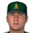
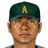

Federal Baseball League · West Group
Alaska Athletics
20-20 .500 · 6th in West Group, 6 GB
Run differential -4 (151 RS, 155 RA) · Pythagorean 20-20 · L10 6-4 · Streak L1 · Home 9-9 · Road 11-11
The Wave (capacity 40,888)
High Minors:  Anchorage Ice Bears · Low Minors:
Anchorage Ice Bears · Low Minors:  Edmonton Trappers
Edmonton Trappers
Season so far games over .500 by date
Recent results
Roster (28)
| # | Player | Pos | B/T | Age |
|---|---|---|---|---|
| 27 |  Kevin Appier | SP | R/R | 34 |
| 41 |  Rigo Beltran | SP | L/L | 32 |
| 43 | SP | R/R | 26 | |
| 35 | SP | R/R | 27 | |
| 9 | SP | R/R | 27 | |
| 96 | RP | R/R | 31 | |
| 52 | RP | R/R | 27 | |
| 28 | RP | L/L | 27 | |
| 16 | RP | L/R | 26 | |
| 47 | RP | L/L | 24 | |
| 10 | RP | L/L | 30 | |
| 29 | RP | R/R | 31 | |
| 29 | RP | R/R | 31 | |
| 97 | CL | R/R | 33 | |
| 68 | C | R/R | 25 | |
| 3 | C | R/R | 35 | |
| 38 | 1B | R/R | 28 | |
| 25 | 1B | L/R | 33 | |
| 14 | 1B | R/R | 35 | |
| 18 | 2B | L/R | 28 | |
| 37 | 2B | R/R | 27 | |
| 6 | John McDonald | 3B | R/R | 27 |
| 20 | SS | R/R | 36 | |
| 45 | LF | L/L | 24 | |
| 12 | LF | R/R | 29 | |
| 88 | CF | R/R | 25 | |
| 64 | RF | L/L | 24 | |
| 34 | RF | R/R | 21 |
2002 batting
| Player | G | PA | AB | R | H | 2B | 3B | HR | RBI | BB | K | SB | AVG | OBP | SLG | OPS |
|---|---|---|---|---|---|---|---|---|---|---|---|---|---|---|---|---|
| Casey Blake | 38 | 170 | 150 | 21 | 42 | 5 | 2 | 5 | 10 | 16 | 35 | 6 | .280 | .365 | .440 | .805 |
| Jody Gerut | 39 | 167 | 156 | 13 | 43 | 9 | 0 | 3 | 18 | 10 | 19 | 3 | .276 | .317 | .391 | .708 |
| Junior Spivey | 39 | 163 | 140 | 16 | 42 | 5 | 1 | 2 | 16 | 18 | 24 | 5 | .300 | .387 | .393 | .779 |
| Rontrez Johnson | 33 | 153 | 138 | 25 | 43 | 1 | 2 | 6 | 22 | 11 | 25 | 11 | .312 | .379 | .478 | .857 |
| Dave Hansen | 38 | 151 | 130 | 13 | 30 | 3 | 1 | 1 | 11 | 19 | 25 | 0 | .231 | .325 | .292 | .617 |
| Mark Little | 38 | 148 | 135 | 13 | 31 | 8 | 0 | 3 | 14 | 10 | 39 | 5 | .230 | .291 | .356 | .646 |
| John McDonald | 37 | 134 | 124 | 11 | 24 | 7 | 1 | 1 | 7 | 7 | 16 | 2 | .194 | .248 | .290 | .538 |
| Mike Benjamin | 37 | 134 | 128 | 7 | 28 | 3 | 0 | 1 | 16 | 3 | 27 | 0 | .219 | .233 | .266 | .499 |
| Todd Pratt | 32 | 133 | 114 | 13 | 27 | 5 | 1 | 4 | 16 | 15 | 28 | 0 | .237 | .346 | .404 | .749 |
| Robby Hammock | 17 | 65 | 56 | 7 | 11 | 1 | 0 | 1 | 8 | 6 | 12 | 1 | .196 | .277 | .268 | .545 |
| Bob Zambrano | 14 | 39 | 34 | 4 | 7 | 1 | 0 | 0 | 0 | 4 | 12 | 0 | .206 | .308 | .235 | .543 |
| Warren Morris | 18 | 39 | 33 | 5 | 13 | 5 | 0 | 0 | 7 | 5 | 0 | 0 | .394 | .462 | .545 | 1.007 |
| Doug DeVore | 10 | 10 | 8 | 1 | 2 | 1 | 0 | 0 | 3 | 1 | 4 | 0 | .250 | .300 | .375 | .675 |
| Luis Terrero | 6 | 7 | 6 | 2 | 3 | 1 | 0 | 0 | 0 | 0 | 2 | 0 | .500 | .571 | .667 | 1.238 |
| Danny Klassen | 1 | 1 | 1 | 0 | 0 | 0 | 0 | 0 | 0 | 0 | 1 | 0 | .000 | .000 | .000 | .000 |
| Team | 40 | 1514 | 1353 | 151 | 346 | 55 | 8 | 27 | 148 | 125 | 269 | 33 | .256 | .326 | .368 | .694 |
2002 batting, advanced
| Player | PA | AVG | OBP | SLG | OPS+ | ISO | BABIP | BB% | K% | WPA | UBR | WAR |
|---|---|---|---|---|---|---|---|---|---|---|---|---|
| Casey Blake | 170 | .280 | .365 | .440 | 108 | .160 | .336 | 9.4% | 20.6% | 0.66 | -0.9 | 0.1 |
| Jody Gerut | 167 | .276 | .317 | .391 | 83 | .115 | .296 | 6.0% | 11.4% | -0.58 | -1.4 | -0.3 |
| Junior Spivey | 163 | .300 | .387 | .393 | 104 | .093 | .345 | 11.0% | 14.7% | 0.31 | -3.7 | 0.5 |
| Rontrez Johnson | 153 | .312 | .379 | .478 | 121 | .167 | .346 | 7.2% | 16.3% | 1.23 | 0.1 | 1.0 |
| Dave Hansen | 151 | .231 | .325 | .292 | 63 | .062 | .274 | 12.6% | 16.6% | -0.74 | -2.5 | -0.6 |
| Mark Little | 148 | .230 | .291 | .356 | 67 | .126 | .298 | 6.8% | 26.4% | 0.16 | 1.4 | 0.2 |
| John McDonald | 134 | .194 | .248 | .290 | 40 | .097 | .215 | 5.2% | 11.9% | -1.16 | 1.3 | -0.2 |
| Mike Benjamin | 134 | .219 | .233 | .266 | 30 | .047 | .265 | 2.2% | 20.1% | -0.83 | 0.0 | -0.2 |
| Todd Pratt | 133 | .237 | .346 | .404 | 94 | .167 | .280 | 11.3% | 21.1% | 0.44 | -1.6 | 0.3 |
| Robby Hammock | 65 | .196 | .277 | .268 | 43 | .071 | .222 | 9.2% | 18.5% | -0.24 | 0.1 | 0.0 |
| Bob Zambrano | 39 | .206 | .308 | .235 | 44 | .029 | .318 | 10.3% | 30.8% | -0.71 | -0.4 | -0.2 |
| Warren Morris | 39 | .394 | .462 | .545 | 161 | .152 | .382 | 12.8% | 0.0% | 1.11 | -2.4 | 0.2 |
| Doug DeVore | 10 | .250 | .300 | .375 | 74 | .125 | .400 | 10.0% | 40.0% | -0.09 | 0.0 | 0.0 |
| Luis Terrero | 7 | .500 | .571 | .667 | 221 | .167 | .750 | 0.0% | 28.6% | 0.13 | -0.1 | 0.1 |
| Danny Klassen | 1 | .000 | .000 | .000 | -100 | .000 | - | 0.0% | 100.0% | 0.00 | 0.0 | 0.0 |
| Team | 1514 | .256 | .326 | .368 | 80 | .112 | .298 | 8.3% | 17.8% | -0.29 | -10.1 | 0.8 |
2002 pitching
| Pitcher | G | GS | W | L | SV | IP | H | R | ER | BB | K | HR | ERA | WHIP |
|---|---|---|---|---|---|---|---|---|---|---|---|---|---|---|
| Matt Morris | 9 | 9 | 4 | 3 | 0 | 68.2 | 50 | 14 | 14 | 20 | 52 | 5 | 1.83 | 1.02 |
| Kevin Appier | 8 | 8 | 1 | 5 | 0 | 56.0 | 65 | 35 | 30 | 13 | 37 | 8 | 4.82 | 1.39 |
| Jeff Suppan | 8 | 8 | 4 | 1 | 0 | 55.1 | 55 | 13 | 13 | 14 | 28 | 2 | 2.11 | 1.25 |
| Rigo Beltran | 8 | 8 | 3 | 2 | 0 | 41.1 | 40 | 25 | 25 | 25 | 33 | 6 | 5.44 | 1.57 |
| Ryan Jensen | 7 | 7 | 2 | 1 | 0 | 37.0 | 34 | 12 | 11 | 21 | 23 | 2 | 2.68 | 1.49 |
| Shane Nance | 10 | 0 | 1 | 2 | 1 | 18.1 | 13 | 7 | 7 | 12 | 10 | 0 | 3.44 | 1.36 |
| Derek Lee | 7 | 0 | 1 | 0 | 1 | 15.1 | 19 | 7 | 7 | 8 | 10 | 2 | 4.11 | 1.76 |
| Rod Beck | 15 | 0 | 1 | 2 | 10 | 14.1 | 17 | 10 | 10 | 2 | 11 | 2 | 6.28 | 1.33 |
| Jamie Walker | 12 | 0 | 2 | 3 | 2 | 13.2 | 25 | 14 | 14 | 3 | 12 | 5 | 9.22 | 2.05 |
| Danny Kolb | 13 | 0 | 0 | 1 | 4 | 12.2 | 17 | 7 | 6 | 9 | 5 | 0 | 4.26 | 2.05 |
| Geronimo Mendoza | 3 | 0 | 1 | 0 | 0 | 9.0 | 10 | 4 | 4 | 2 | 2 | 2 | 4.00 | 1.33 |
| Todd Williams | 4 | 0 | 0 | 0 | 0 | 8.0 | 3 | 1 | 0 | 0 | 8 | 0 | 0.00 | 0.38 |
| Francisco Madero | 2 | 0 | 0 | 0 | 0 | 1.2 | 5 | 6 | 6 | 1 | 2 | 2 | 32.40 | 3.60 |
| Team | 40 | 40 | 20 | 20 | 18 | 351.1 | 353 | 155 | 147 | 130 | 233 | 36 | 3.77 | 1.37 |
2002 pitching, advanced
| Pitcher | IP | ERA | WHIP | K/9 | BB/9 | HR/9 | K% | BB% | K-BB% | FIP | ERA+ | GB% | WPA | WAR |
|---|---|---|---|---|---|---|---|---|---|---|---|---|---|---|
| Matt Morris | 68.2 | 1.83 | 1.02 | 6.8 | 2.6 | 0.7 | 19.1% | 7.4% | 11.8% | 3.69 | 252 | 51.4% | 1.76 | 1.7 |
| Kevin Appier | 56.0 | 4.82 | 1.39 | 5.9 | 2.1 | 1.3 | 14.9% | 5.2% | 9.7% | 4.64 | 96 | 47.6% | -0.83 | 0.8 |
| Jeff Suppan | 55.1 | 2.11 | 1.25 | 4.6 | 2.3 | 0.3 | 12.0% | 6.0% | 6.0% | 3.51 | 219 | 52.6% | 0.99 | 1.5 |
| Rigo Beltran | 41.1 | 5.44 | 1.57 | 7.2 | 5.4 | 1.3 | 17.2% | 13.0% | 4.2% | 5.48 | 85 | 42.2% | -0.85 | 0.2 |
| Ryan Jensen | 37.0 | 2.68 | 1.49 | 5.6 | 5.1 | 0.5 | 14.2% | 13.0% | 1.2% | 4.62 | 173 | 45.0% | 0.48 | 0.5 |
| Shane Nance | 18.1 | 3.44 | 1.36 | 4.9 | 5.9 | 0.0 | 13.2% | 15.8% | -2.6% | 4.17 | 135 | 42.5% | 0.06 | 0.2 |
| Derek Lee | 15.1 | 4.11 | 1.76 | 5.9 | 4.7 | 1.2 | 14.3% | 11.4% | 2.9% | 5.25 | 113 | 36.4% | 0.11 | -0.1 |
| Rod Beck | 14.1 | 6.28 | 1.33 | 6.9 | 1.3 | 1.3 | 18.3% | 3.3% | 15.0% | 4.00 | 74 | 50.0% | -0.38 | 0.3 |
| Jamie Walker | 13.2 | 9.22 | 2.05 | 7.9 | 2.0 | 3.3 | 18.2% | 4.5% | 13.6% | 6.96 | 50 | 53.8% | -1.47 | -0.4 |
| Danny Kolb | 12.2 | 4.26 | 2.05 | 3.6 | 6.4 | 0.0 | 8.1% | 14.5% | -6.5% | 4.64 | 109 | 40.0% | 0.02 | 0.1 |
| Geronimo Mendoza | 9.0 | 4.00 | 1.33 | 2.0 | 2.0 | 2.0 | 5.7% | 5.7% | 0.0% | 6.41 | 116 | 42.9% | -0.05 | -0.1 |
| Todd Williams | 8.0 | 0.00 | 0.38 | 9.0 | 0.0 | 0.0 | 29.6% | 0.0% | 29.6% | 1.30 | - | 66.7% | 0.59 | 0.4 |
| Francisco Madero | 1.2 | 32.40 | 3.60 | 10.8 | 5.4 | 10.8 | 18.2% | 9.1% | 9.1% | 18.30 | 14 | 66.7% | -0.28 | -0.2 |
| Team | 351.1 | 3.77 | 1.37 | 6.0 | 3.3 | 0.9 | 15.4% | 8.6% | 6.8% | 4.47 | 123 | 47.9% | 0.14 | 4.6 |
2002 fielding
| Player | Pos | G | GS | Inn | TC | PO | A | E | DP | FPct | ZR | Arm | Framing |
|---|---|---|---|---|---|---|---|---|---|---|---|---|---|
| Denison Baller | P | 66 | 1 | 528.0 | 14 | 5 | 9 | 0 | 0 | 1.000 | 0.0 | - | - |
| Marc Pisciotta | P | 57 | 0 | 456.0 | 33 | 8 | 23 | 2 | 2 | .939 | 0.0 | - | - |
| Contreras Tobik | P | 56 | 1 | 448.0 | 17 | 6 | 9 | 2 | 0 | .882 | 0.0 | - | - |
| Vance Lovelace | P | 56 | 0 | 448.0 | 18 | 4 | 14 | 0 | 0 | 1.000 | 0.0 | - | - |
| Tony Phillips | P | 55 | 1 | 440.0 | 20 | 7 | 13 | 0 | 1 | 1.000 | 0.0 | - | - |
| Randy St. Claire | P | 54 | 0 | 432.0 | 19 | 2 | 16 | 1 | 1 | .947 | 0.0 | - | - |
| Joe Boever | P | 53 | 3 | 424.0 | 15 | 7 | 7 | 1 | 2 | .933 | 0.0 | - | - |
| Paul Mirabella | P | 53 | 0 | 424.0 | 16 | 3 | 13 | 0 | 1 | 1.000 | 0.0 | - | - |
| Darrin Winston | P | 53 | 0 | 424.0 | 8 | 2 | 6 | 0 | 0 | 1.000 | 0.0 | - | - |
| Hohenstein Barton | P | 51 | 0 | 408.0 | 22 | 9 | 10 | 3 | 0 | .864 | 0.0 | - | - |
| Rich Monteleone | P | 51 | 0 | 408.0 | 16 | 0 | 15 | 1 | 2 | .938 | 0.0 | - | - |
| Todd Rizzo | P | 50 | 0 | 400.0 | 15 | 1 | 12 | 2 | 1 | .867 | 0.0 | - | - |
| Benito Baez | P | 49 | 0 | 392.0 | 17 | 5 | 11 | 1 | 0 | .941 | 0.0 | - | - |
| Eric Ludwick | P | 48 | 0 | 384.0 | 11 | 3 | 7 | 1 | 2 | .909 | 0.0 | - | - |
| Archie Corbin | P | 47 | 1 | 376.0 | 17 | 9 | 6 | 2 | 2 | .882 | 0.0 | - | - |
| Paul Mirabella | P | 47 | 0 | 376.0 | 14 | 5 | 8 | 1 | 0 | .929 | 0.0 | - | - |
| Ed Vande Berg | P | 47 | 1 | 376.0 | 40 | 15 | 24 | 1 | 4 | .975 | 0.0 | - | - |
| Kenny Greer | P | 46 | 1 | 368.0 | 17 | 1 | 16 | 0 | 2 | 1.000 | 0.0 | - | - |
| Joe Strong | P | 46 | 0 | 368.0 | 9 | 4 | 5 | 0 | 0 | 1.000 | 0.0 | - | - |
| Jose Melendez | P | 45 | 10 | 360.0 | 22 | 6 | 14 | 2 | 2 | .909 | 0.0 | - | - |
| Ordorica Lazorko | P | 44 | 0 | 352.0 | 24 | 5 | 19 | 0 | 1 | 1.000 | 0.0 | - | - |
| Joe Boever | P | 44 | 0 | 352.0 | 20 | 8 | 12 | 0 | 0 | 1.000 | 0.0 | - | - |
| Matt Maysey | P | 44 | 12 | 352.0 | 19 | 5 | 13 | 1 | 0 | .947 | 0.0 | - | - |
| Mike Bertotti | P | 43 | 6 | 344.0 | 21 | 8 | 11 | 2 | 0 | .905 | 0.0 | - | - |
| Scott Medvin | P | 43 | 0 | 344.0 | 7 | 4 | 3 | 0 | 0 | 1.000 | 0.0 | - | - |
| Larry Casian | P | 43 | 0 | 344.0 | 16 | 4 | 12 | 0 | 3 | 1.000 | 0.0 | - | - |
| Mike Cather | P | 43 | 0 | 344.0 | 11 | 4 | 7 | 0 | 0 | 1.000 | 0.0 | - | - |
| Julio Solano | P | 43 | 0 | 344.0 | 11 | 6 | 4 | 1 | 0 | .909 | 0.0 | - | - |
| Jeff Darwin | P | 42 | 0 | 336.0 | 17 | 5 | 12 | 0 | 1 | 1.000 | 0.0 | - | - |
| Scott Taylor | P | 42 | 0 | 336.0 | 28 | 9 | 18 | 1 | 2 | .964 | 0.0 | - | - |
| Tom Bolton | P | 40 | 14 | 320.0 | 32 | 5 | 27 | 0 | 1 | 1.000 | 0.0 | - | - |
| John DeSilva | P | 40 | 3 | 320.0 | 10 | 3 | 6 | 1 | 0 | .900 | 0.0 | - | - |
| Greg McCarthy | P | 40 | 0 | 320.0 | 8 | 2 | 5 | 1 | 0 | .875 | 0.0 | - | - |
| Gabe Molina | P | 40 | 16 | 320.0 | 19 | 7 | 12 | 0 | 1 | 1.000 | 0.0 | - | - |
| Eric Moody | P | 39 | 2 | 312.0 | 11 | 4 | 7 | 0 | 1 | 1.000 | 0.0 | - | - |
| Mike Heathcott | P | 39 | 13 | 312.0 | 22 | 3 | 18 | 1 | 1 | .955 | 0.0 | - | - |
| Rich Monteleone | P | 39 | 21 | 312.0 | 24 | 4 | 18 | 2 | 4 | .917 | 0.0 | - | - |
| Perez Burns | P | 37 | 13 | 296.0 | 15 | 6 | 9 | 0 | 0 | 1.000 | 0.0 | - | - |
| Johnny Ruffin | P | 37 | 0 | 296.0 | 6 | 4 | 2 | 0 | 0 | 1.000 | 0.0 | - | - |
| Mike Villano | P | 36 | 1 | 288.0 | 10 | 4 | 6 | 0 | 1 | 1.000 | 0.0 | - | - |
| Nelson Cruz | P | 35 | 18 | 280.0 | 36 | 6 | 27 | 3 | 1 | .917 | 0.0 | - | - |
| Jose Bautista | P | 35 | 0 | 280.0 | 9 | 4 | 4 | 1 | 0 | .889 | 0.0 | - | - |
| Lee Hancock | P | 34 | 17 | 272.0 | 28 | 5 | 22 | 1 | 2 | .964 | 0.0 | - | - |
| Mike Drumright | P | 34 | 22 | 272.0 | 21 | 3 | 17 | 1 | 1 | .952 | 0.0 | - | - |
| McGarvey Shinall | P | 33 | 0 | 264.0 | 13 | 5 | 8 | 0 | 0 | 1.000 | 0.0 | - | - |
| Keith Comstock | P | 33 | 0 | 264.0 | 12 | 3 | 8 | 1 | 0 | .917 | 0.0 | - | - |
| Steve Wojciechowski | P | 33 | 14 | 264.0 | 15 | 2 | 12 | 1 | 1 | .933 | 0.0 | - | - |
| Luis De Leon | P | 33 | 5 | 264.0 | 13 | 5 | 7 | 1 | 0 | .923 | 0.0 | - | - |
| Lance McCullers | P | 33 | 10 | 264.0 | 19 | 7 | 11 | 1 | 1 | .947 | 0.0 | - | - |
| Stone Brown | P | 32 | 20 | 256.0 | 8 | 1 | 7 | 0 | 1 | 1.000 | 0.0 | - | - |
| Pat Pacillo | P | 32 | 13 | 256.0 | 25 | 7 | 13 | 5 | 0 | .800 | 0.0 | - | - |
| Steve Wapnick | P | 32 | 2 | 256.0 | 11 | 6 | 5 | 0 | 2 | 1.000 | 0.0 | - | - |
| Tony Ferreira | P | 32 | 12 | 256.0 | 18 | 6 | 10 | 2 | 1 | .889 | 0.0 | - | - |
| Ordorica Lazorko | P | 31 | 13 | 248.0 | 39 | 12 | 24 | 3 | 3 | .923 | 0.0 | - | - |
| Dave Burba | P | 31 | 18 | 248.0 | 20 | 9 | 11 | 0 | 2 | 1.000 | 0.0 | - | - |
| Stan Clarke | P | 31 | 2 | 248.0 | 16 | 1 | 13 | 2 | 0 | .875 | 0.0 | - | - |
| Oswaldo Mairena | P | 31 | 0 | 248.0 | 7 | 1 | 6 | 0 | 0 | 1.000 | 0.0 | - | - |
| Ed Vande Berg | P | 31 | 2 | 248.0 | 13 | 6 | 7 | 0 | 1 | 1.000 | 0.0 | - | - |
| Hohenstein Barton | P | 30 | 0 | 240.0 | 18 | 4 | 14 | 0 | 1 | 1.000 | 0.0 | - | - |
| Jeff Granger | P | 30 | 12 | 240.0 | 19 | 5 | 11 | 3 | 0 | .842 | 0.0 | - | - |
| Andrew Lorraine | P | 30 | 25 | 240.0 | 28 | 12 | 15 | 1 | 1 | .964 | 0.0 | - | - |
| Erik Plantenberg | P | 30 | 0 | 240.0 | 6 | 1 | 4 | 1 | 0 | .833 | 0.0 | - | - |
| Rich Monteleone | P | 30 | 16 | 240.0 | 27 | 6 | 21 | 0 | 2 | 1.000 | 0.0 | - | - |
| Chad Bradford | P | 29 | 0 | 232.0 | 14 | 3 | 11 | 0 | 0 | 1.000 | 0.0 | - | - |
| John DeSilva | P | 29 | 19 | 232.0 | 20 | 8 | 11 | 1 | 0 | .950 | 0.0 | - | - |
| Greg Pirkl | P | 29 | 0 | 232.0 | 8 | 2 | 5 | 1 | 1 | .875 | 0.0 | - | - |
| Greg Pirkl | P | 29 | 0 | 232.0 | 8 | 2 | 5 | 1 | 1 | .875 | 0.0 | - | - |
| Greg Pirkl | P | 29 | 0 | 232.0 | 8 | 2 | 5 | 1 | 1 | .875 | 0.0 | - | - |
| Joe Strong | P | 29 | 1 | 232.0 | 8 | 1 | 7 | 0 | 0 | 1.000 | 0.0 | - | - |
| Guerrero Senteney | P | 28 | 1 | 224.0 | 10 | 3 | 5 | 2 | 0 | .800 | 0.0 | - | - |
| Pat Ahearne | P | 28 | 26 | 224.0 | 31 | 12 | 17 | 2 | 4 | .935 | 0.0 | - | - |
| Jeff Nelson | P | 28 | 0 | 224.0 | 6 | 2 | 4 | 0 | 1 | 1.000 | 0.0 | - | - |
| Mike Walker | P | 28 | 27 | 224.0 | 24 | 8 | 16 | 0 | 2 | 1.000 | 0.0 | - | - |
| Ed Vosberg | P | 28 | 0 | 224.0 | 14 | 2 | 12 | 0 | 1 | 1.000 | 0.0 | - | - |
| Russ Herbert | P | 28 | 28 | 224.0 | 6 | 2 | 4 | 0 | 1 | 1.000 | 0.0 | - | - |
| Jason Grilli | P | 27 | 27 | 216.0 | 26 | 6 | 18 | 2 | 0 | .923 | 0.0 | - | - |
| Bronswell Patrick | P | 27 | 23 | 216.0 | 34 | 14 | 20 | 0 | 2 | 1.000 | 0.0 | - | - |
| Eric Gunderson | P | 27 | 1 | 216.0 | 13 | 0 | 11 | 2 | 0 | .846 | 0.0 | - | - |
| Erik Hanson | P | 27 | 26 | 216.0 | 8 | 2 | 6 | 0 | 0 | 1.000 | 0.0 | - | - |
| Randy Kramer | P | 27 | 6 | 216.0 | 20 | 5 | 14 | 1 | 0 | .950 | 0.0 | - | - |
| Ramon Morel | P | 27 | 18 | 216.0 | 25 | 8 | 16 | 1 | 2 | .960 | 0.0 | - | - |
| Roger Salkeld | P | 27 | 2 | 216.0 | 16 | 4 | 11 | 1 | 1 | .938 | 0.0 | - | - |
| Randy St. Claire | P | 27 | 0 | 216.0 | 17 | 5 | 11 | 1 | 0 | .941 | 0.0 | - | - |
| Scott Taylor | P | 27 | 25 | 216.0 | 35 | 8 | 27 | 0 | 6 | 1.000 | 0.0 | - | - |
| Reid Cornelius | P | 27 | 27 | 216.0 | 5 | 2 | 3 | 0 | 0 | 1.000 | 0.0 | - | - |
| Lee Guetterman | P | 27 | 1 | 216.0 | 13 | 4 | 9 | 0 | 1 | 1.000 | 0.0 | - | - |
| Gary Wilson | P | 27 | 27 | 216.0 | 6 | 2 | 4 | 0 | 0 | 1.000 | 0.0 | - | - |
| Dave Schmidt | P | 27 | 8 | 216.0 | 12 | 4 | 7 | 1 | 0 | .917 | 0.0 | - | - |
| Dennis Powell | P | 27 | 26 | 216.0 | 5 | 1 | 4 | 0 | 1 | 1.000 | 0.0 | - | - |
| Karl Best | P | 27 | 0 | 216.0 | 4 | 1 | 3 | 0 | 0 | 1.000 | 0.0 | - | - |
| McDonnell Barnes | P | 26 | 3 | 208.0 | 6 | 6 | 0 | 0 | 1 | 1.000 | 0.0 | - | - |
| Sean Lawrence | P | 26 | 26 | 208.0 | 19 | 1 | 17 | 1 | 0 | .947 | 0.0 | - | - |
| Lee Hancock | P | 26 | 4 | 208.0 | 14 | 4 | 10 | 0 | 0 | 1.000 | 0.0 | - | - |
| Mike Schooler | P | 26 | 0 | 208.0 | 4 | 0 | 4 | 0 | 0 | 1.000 | 0.0 | - | - |
| Rafael Medina | P | 25 | 0 | 200.0 | 9 | 1 | 7 | 1 | 1 | .889 | 0.0 | - | - |
| Curt Schmidt | P | 25 | 0 | 200.0 | 4 | 1 | 2 | 1 | 0 | .750 | 0.0 | - | - |
| Mike Walker | P | 25 | 24 | 200.0 | 30 | 9 | 20 | 1 | 1 | .967 | 0.0 | - | - |
| Terry Taylor | P | 25 | 23 | 200.0 | 5 | 2 | 2 | 1 | 0 | .800 | 0.0 | - | - |
| Terry Taylor | P | 25 | 14 | 200.0 | 15 | 4 | 10 | 1 | 1 | .933 | 0.0 | - | - |
| Kevin King | P | 25 | 0 | 200.0 | 7 | 1 | 5 | 1 | 0 | .857 | 0.0 | - | - |
| Gene Harris | P | 25 | 0 | 200.0 | 8 | 3 | 5 | 0 | 0 | 1.000 | 0.0 | - | - |
| Bob MacDonald | P | 25 | 0 | 200.0 | 6 | 1 | 5 | 0 | 0 | 1.000 | 0.0 | - | - |
| Julio Solano | P | 25 | 1 | 200.0 | 8 | 2 | 6 | 0 | 0 | 1.000 | 0.0 | - | - |
| Dave Wainhouse | P | 25 | 0 | 200.0 | 5 | 1 | 4 | 0 | 0 | 1.000 | 0.0 | - | - |
| Rivera Holman | P | 24 | 2 | 192.0 | 8 | 3 | 2 | 3 | 0 | .625 | 0.0 | - | - |
| Garcia Agosto | P | 24 | 0 | 192.0 | 7 | 0 | 6 | 1 | 0 | .857 | 0.0 | - | - |
| Jose Alberro | P | 24 | 8 | 192.0 | 18 | 7 | 9 | 2 | 1 | .889 | 0.0 | - | - |
| Cahill Campbell | P | 24 | 23 | 192.0 | 24 | 6 | 16 | 2 | 2 | .917 | 0.0 | - | - |
| Gabe Gonzalez | P | 24 | 0 | 192.0 | 4 | 1 | 3 | 0 | 0 | 1.000 | 0.0 | - | - |
| Erik Hanson | P | 24 | 19 | 192.0 | 25 | 10 | 12 | 3 | 1 | .880 | 0.0 | - | - |
| Milt Hill | P | 24 | 5 | 192.0 | 10 | 2 | 8 | 0 | 0 | 1.000 | 0.0 | - | - |
| Terry Taylor | P | 24 | 24 | 192.0 | 5 | 1 | 3 | 1 | 0 | .800 | 0.0 | - | - |
| Andy Hawkins | P | 24 | 23 | 192.0 | 30 | 13 | 17 | 0 | 1 | 1.000 | 0.0 | - | - |
| Dave Burba | P | 23 | 9 | 184.0 | 26 | 5 | 20 | 1 | 0 | .962 | 0.0 | - | - |
| Tom Bolton | P | 23 | 15 | 184.0 | 25 | 11 | 12 | 2 | 2 | .920 | 0.0 | - | - |
| Brian Edmondson | P | 23 | 0 | 184.0 | 7 | 2 | 4 | 1 | 0 | .857 | 0.0 | - | - |
| Darrell May | P | 23 | 22 | 184.0 | 25 | 1 | 23 | 1 | 1 | .960 | 0.0 | - | - |
| John Hope | P | 23 | 21 | 184.0 | 25 | 5 | 20 | 0 | 2 | 1.000 | 0.0 | - | - |
| Bob Howry | P | 23 | 0 | 184.0 | 7 | 0 | 7 | 0 | 0 | 1.000 | 0.0 | - | - |
| Jack O'Connor | P | 23 | 2 | 184.0 | 6 | 1 | 5 | 0 | 1 | 1.000 | 0.0 | - | - |
| Jim Converse | P | 23 | 22 | 184.0 | 28 | 8 | 18 | 2 | 4 | .929 | 0.0 | - | - |
| Bill Wilkinson | P | 23 | 23 | 184.0 | 24 | 5 | 18 | 1 | 5 | .958 | 0.0 | - | - |
| Scott Sanders | P | 22 | 15 | 176.0 | 15 | 6 | 9 | 0 | 0 | 1.000 | 0.0 | - | - |
| Mike Brown | P | 22 | 19 | 176.0 | 5 | 1 | 4 | 0 | 0 | 1.000 | 0.0 | - | - |
| Luis Arroyo | P | 22 | 0 | 176.0 | 9 | 1 | 7 | 1 | 0 | .889 | 0.0 | - | - |
| Rivera Holman | P | 21 | 13 | 168.0 | 22 | 5 | 15 | 2 | 1 | .909 | 0.0 | - | - |
| Akens Jones | P | 21 | 1 | 168.0 | 6 | 0 | 6 | 0 | 0 | 1.000 | 0.0 | - | - |
| Jimmy Anderson | P | 21 | 21 | 168.0 | 4 | 1 | 3 | 0 | 0 | 1.000 | 0.0 | - | - |
| Gary Eave | P | 21 | 17 | 168.0 | 10 | 8 | 2 | 0 | 0 | 1.000 | 0.0 | - | - |
| Gary Knotts | P | 21 | 21 | 168.0 | 23 | 7 | 15 | 1 | 0 | .957 | 0.0 | - | - |
| Pat Rice | P | 21 | 21 | 168.0 | 3 | 1 | 2 | 0 | 0 | 1.000 | 0.0 | - | - |
| Pat Rice | P | 21 | 15 | 168.0 | 19 | 7 | 11 | 1 | 0 | .947 | 0.0 | - | - |
| Mike Remlinger | P | 21 | 11 | 168.0 | 24 | 5 | 18 | 1 | 0 | .958 | 0.0 | - | - |
| Clint Zavaras | P | 21 | 19 | 168.0 | 23 | 9 | 12 | 2 | 0 | .913 | 0.0 | - | - |
| Brent Billingsley | P | 21 | 21 | 168.0 | 21 | 5 | 15 | 1 | 1 | .952 | 0.0 | - | - |
| Bill Wilkinson | P | 21 | 4 | 168.0 | 6 | 1 | 4 | 1 | 1 | .833 | 0.0 | - | - |
| Gary Wilson | P | 21 | 11 | 168.0 | 3 | 1 | 2 | 0 | 0 | 1.000 | 0.0 | - | - |
| Dennis Powell | P | 21 | 18 | 168.0 | 3 | 1 | 2 | 0 | 0 | 1.000 | 0.0 | - | - |
| Concepcion Low Minors | P | 20 | 16 | 160.0 | 25 | 6 | 16 | 3 | 1 | .880 | 0.0 | - | - |
| Akens Jones | P | 20 | 0 | 160.0 | 7 | 3 | 3 | 1 | 0 | .857 | 0.0 | - | - |
| Reggie Harris | P | 20 | 18 | 160.0 | 16 | 6 | 10 | 0 | 1 | 1.000 | 0.0 | - | - |
| Alex Sanchez | P | 20 | 13 | 160.0 | 18 | 6 | 11 | 1 | 1 | .944 | 0.0 | - | - |
| Brian Snyder | P | 20 | 9 | 160.0 | 18 | 5 | 13 | 0 | 1 | 1.000 | 0.0 | - | - |
| Dave Geisel | P | 20 | 19 | 160.0 | 23 | 4 | 18 | 1 | 0 | .957 | 0.0 | - | - |
| Lee Guetterman | P | 20 | 18 | 160.0 | 25 | 8 | 15 | 2 | 1 | .920 | 0.0 | - | - |
| Dennis Powell | P | 20 | 20 | 160.0 | 4 | 1 | 3 | 0 | 0 | 1.000 | 0.0 | - | - |
| Erik Plantenberg | P | 19 | 19 | 152.0 | 23 | 8 | 15 | 0 | 2 | 1.000 | 0.0 | - | - |
| Paul Gibson | P | 19 | 0 | 152.0 | 12 | 3 | 8 | 1 | 1 | .917 | 0.0 | - | - |
| Jose Mercedes | P | 19 | 18 | 152.0 | 22 | 7 | 14 | 1 | 0 | .955 | 0.0 | - | - |
| Bob Long | P | 19 | 0 | 152.0 | 8 | 2 | 6 | 0 | 0 | 1.000 | 0.0 | - | - |
| Joe Roa | P | 19 | 19 | 152.0 | 3 | 1 | 2 | 0 | 0 | 1.000 | 0.0 | - | - |
| Jerry Reed | P | 19 | 2 | 152.0 | 15 | 5 | 7 | 3 | 0 | .800 | 0.0 | - | - |
| Mike Remlinger | P | 19 | 18 | 152.0 | 24 | 6 | 15 | 3 | 2 | .875 | 0.0 | - | - |
| Mike Drumright | P | 19 | 0 | 152.0 | 4 | 0 | 4 | 0 | 0 | 1.000 | 0.0 | - | - |
| Jeffcoat High Minors | P | 18 | 10 | 144.0 | 21 | 5 | 16 | 0 | 2 | 1.000 | 0.0 | - | - |
| Rajsich Ouellette | P | 18 | 0 | 144.0 | 11 | 3 | 7 | 1 | 1 | .909 | 0.0 | - | - |
| Hector Almonte | P | 18 | 0 | 144.0 | 7 | 2 | 4 | 1 | 1 | .857 | 0.0 | - | - |
| Hector Almonte | P | 18 | 0 | 144.0 | 11 | 3 | 7 | 1 | 1 | .909 | 0.0 | - | - |
| Rick Luecken | P | 18 | 14 | 144.0 | 18 | 6 | 12 | 0 | 0 | 1.000 | 0.0 | - | - |
| Brian Meyer | P | 18 | 0 | 144.0 | 9 | 3 | 5 | 1 | 0 | .889 | 0.0 | - | - |
| Jeff Nelson | P | 18 | 0 | 144.0 | 8 | 1 | 6 | 1 | 1 | .875 | 0.0 | - | - |
| Rod Scurry | P | 18 | 0 | 144.0 | 11 | 3 | 7 | 1 | 1 | .909 | 0.0 | - | - |
| Mike Walker | P | 18 | 17 | 144.0 | 17 | 6 | 11 | 0 | 3 | 1.000 | 0.0 | - | - |
| Dennis Powell | P | 18 | 0 | 144.0 | 8 | 2 | 6 | 0 | 0 | 1.000 | 0.0 | - | - |
| Bobby Rodgers | P | 18 | 2 | 144.0 | 7 | 1 | 6 | 0 | 1 | 1.000 | 0.0 | - | - |
| Hohenstein Barton | P | 17 | 0 | 136.0 | 5 | 4 | 1 | 0 | 0 | 1.000 | 0.0 | - | - |
| Reggie Harris | P | 17 | 15 | 136.0 | 19 | 5 | 12 | 2 | 0 | .895 | 0.0 | - | - |
| Paul Menhart | P | 17 | 17 | 136.0 | 22 | 11 | 6 | 5 | 2 | .773 | 0.0 | - | - |
| Pat Rice | P | 17 | 5 | 136.0 | 9 | 2 | 7 | 0 | 0 | 1.000 | 0.0 | - | - |
| Tom Drees | P | 17 | 16 | 136.0 | 21 | 4 | 16 | 1 | 2 | .952 | 0.0 | - | - |
| Chuck Hensley | P | 17 | 0 | 136.0 | 4 | 2 | 1 | 1 | 0 | .750 | 0.0 | - | - |
| Jose Melendez | P | 17 | 2 | 136.0 | 10 | 2 | 7 | 1 | 1 | .900 | 0.0 | - | - |
| Jose Silva | P | 17 | 11 | 136.0 | 18 | 11 | 7 | 0 | 0 | 1.000 | 0.0 | - | - |
| Jesus Sanchez | P | 16 | 11 | 128.0 | 20 | 6 | 14 | 0 | 0 | 1.000 | 0.0 | - | - |
| Strayhorn Shields | P | 16 | 0 | 128.0 | 9 | 4 | 3 | 2 | 0 | .778 | 0.0 | - | - |
| Cahill Campbell | P | 16 | 16 | 128.0 | 9 | 3 | 6 | 0 | 0 | 1.000 | 0.0 | - | - |
| Randy Kramer | P | 16 | 11 | 128.0 | 14 | 5 | 8 | 1 | 1 | .929 | 0.0 | - | - |
| Kirt Ojala | P | 16 | 14 | 128.0 | 9 | 2 | 6 | 1 | 1 | .889 | 0.0 | - | - |
| Rob Stanifer | P | 16 | 0 | 128.0 | 6 | 2 | 4 | 0 | 0 | 1.000 | 0.0 | - | - |
| Lee Guetterman | P | 16 | 2 | 128.0 | 11 | 2 | 9 | 0 | 3 | 1.000 | 0.0 | - | - |
| Karl Best | P | 16 | 0 | 128.0 | 9 | 2 | 6 | 1 | 1 | .889 | 0.0 | - | - |
| Vladimir Nunez | P | 15 | 15 | 120.0 | 15 | 3 | 11 | 1 | 1 | .933 | 0.0 | - | - |
| Armando Almanza | P | 15 | 0 | 120.0 | 9 | 2 | 6 | 1 | 1 | .889 | 0.0 | - | - |
| Keith Comstock | P | 15 | 0 | 120.0 | 10 | 4 | 6 | 0 | 0 | 1.000 | 0.0 | - | - |
| Pat Rice | P | 15 | 2 | 120.0 | 10 | 5 | 4 | 1 | 1 | .900 | 0.0 | - | - |
| Kenny Greer | P | 15 | 0 | 120.0 | 7 | 4 | 3 | 0 | 0 | 1.000 | 0.0 | - | - |
| John Snyder | P | 15 | 15 | 120.0 | 9 | 2 | 6 | 1 | 1 | .889 | 0.0 | - | - |
| Roy Thomas | P | 15 | 0 | 120.0 | 5 | 0 | 5 | 0 | 0 | 1.000 | 0.0 | - | - |
| Steve Fireovid | P | 14 | 12 | 112.0 | 9 | 2 | 6 | 1 | 1 | .889 | 0.0 | - | - |
| John Ericks | P | 14 | 4 | 112.0 | 2 | 0 | 2 | 0 | 0 | 1.000 | 0.0 | - | - |
| Jon Lieber | P | 14 | 14 | 112.0 | 15 | 7 | 6 | 2 | 0 | .867 | 0.0 | - | - |
| Chris Peters | P | 14 | 9 | 112.0 | 10 | 2 | 8 | 0 | 0 | 1.000 | 0.0 | - | - |
| Jim Converse | P | 14 | 14 | 112.0 | 9 | 2 | 6 | 1 | 1 | .889 | 0.0 | - | - |
| Rick White | P | 14 | 11 | 112.0 | 9 | 5 | 4 | 0 | 0 | 1.000 | 0.0 | - | - |
| Roy Thomas | P | 14 | 4 | 112.0 | 8 | 3 | 5 | 0 | 1 | 1.000 | 0.0 | - | - |
| Sean Bergman | P | 13 | 13 | 104.0 | 12 | 6 | 6 | 0 | 1 | 1.000 | 0.0 | - | - |
| Carlos Castillo | P | 13 | 10 | 104.0 | 9 | 0 | 7 | 2 | 0 | .778 | 0.0 | - | - |
| Ken Forsch | P | 13 | 7 | 104.0 | 9 | 4 | 5 | 0 | 0 | 1.000 | 0.0 | - | - |
| John Hope | P | 13 | 13 | 104.0 | 2 | 1 | 1 | 0 | 0 | 1.000 | 0.0 | - | - |
| Rich Loiselle | P | 13 | 13 | 104.0 | 2 | 1 | 1 | 0 | 0 | 1.000 | 0.0 | - | - |
| Vance Lovelace | P | 13 | 0 | 104.0 | 8 | 3 | 4 | 1 | 0 | .875 | 0.0 | - | - |
| Matt Ruebel | P | 13 | 13 | 104.0 | 8 | 3 | 5 | 0 | 0 | 1.000 | 0.0 | - | - |
| Roger Salkeld | P | 13 | 13 | 104.0 | 7 | 1 | 6 | 0 | 1 | 1.000 | 0.0 | - | - |
| Tom Niedenfuer | P | 13 | 2 | 104.0 | 7 | 3 | 3 | 1 | 0 | .857 | 0.0 | - | - |
| Dave Wainhouse | P | 13 | 0 | 104.0 | 4 | 1 | 3 | 0 | 2 | 1.000 | 0.0 | - | - |
| Luis Andujar | P | 13 | 9 | 104.0 | 10 | 7 | 1 | 2 | 0 | .800 | 0.0 | - | - |
| Derek Hasselhoff | P | 13 | 0 | 104.0 | 6 | 2 | 3 | 1 | 0 | .833 | 0.0 | - | - |
| Brian Shouse | P | 12 | 1 | 96.0 | 4 | 1 | 3 | 0 | 0 | 1.000 | 0.0 | - | - |
| Archie Corbin | P | 12 | 0 | 96.0 | 7 | 2 | 4 | 1 | 0 | .857 | 0.0 | - | - |
| Esteban Loaiza | P | 12 | 11 | 96.0 | 2 | 1 | 1 | 0 | 0 | 1.000 | 0.0 | - | - |
| David Lundquist | P | 12 | 0 | 96.0 | 7 | 2 | 5 | 0 | 0 | 1.000 | 0.0 | - | - |
| Mike Walker | P | 12 | 6 | 96.0 | 11 | 2 | 7 | 2 | 0 | .818 | 0.0 | - | - |
| Dennis Powell | P | 12 | 4 | 96.0 | 11 | 2 | 8 | 1 | 0 | .909 | 0.0 | - | - |
| Clay Parker | P | 12 | 12 | 96.0 | 2 | 0 | 2 | 0 | 0 | 1.000 | 0.0 | - | - |
| Bill Flynt | P | 12 | 1 | 96.0 | 3 | 0 | 3 | 0 | 0 | 1.000 | 0.0 | - | - |
| Mike Drumright | P | 12 | 0 | 96.0 | 4 | 2 | 1 | 1 | 0 | .750 | 0.0 | - | - |
| Hawkins Low Minors | P | 11 | 0 | 88.0 | 5 | 2 | 3 | 0 | 0 | 1.000 | 0.0 | - | - |
| Gary Eave | P | 11 | 11 | 88.0 | 6 | 2 | 4 | 0 | 0 | 1.000 | 0.0 | - | - |
| Russ Swan | P | 11 | 11 | 88.0 | 14 | 5 | 9 | 0 | 1 | 1.000 | 0.0 | - | - |
| John Cummings | P | 11 | 10 | 88.0 | 6 | 2 | 4 | 0 | 0 | 1.000 | 0.0 | - | - |
| Cevette Phoenix | P | 10 | 1 | 80.0 | 5 | 1 | 4 | 0 | 0 | 1.000 | 0.0 | - | - |
| Garcia Agosto | P | 10 | 0 | 80.0 | 8 | 2 | 6 | 0 | 2 | 1.000 | 0.0 | - | - |
| Cahill Campbell | P | 10 | 10 | 80.0 | 5 | 1 | 4 | 0 | 0 | 1.000 | 0.0 | - | - |
| Jose Nunez | P | 10 | 8 | 80.0 | 12 | 7 | 4 | 1 | 0 | .917 | 0.0 | - | - |
| Ed Vande Berg | P | 10 | 0 | 80.0 | 5 | 0 | 4 | 1 | 0 | .800 | 0.0 | - | - |
| Keith Shepherd | P | 10 | 1 | 80.0 | 5 | 3 | 2 | 0 | 0 | 1.000 | 0.0 | - | - |
| Billy Swift | P | 10 | 8 | 80.0 | 10 | 3 | 7 | 0 | 1 | 1.000 | 0.0 | - | - |
| Terry Taylor | P | 10 | 10 | 80.0 | 12 | 1 | 11 | 0 | 3 | 1.000 | 0.0 | - | - |
| Mike Cook | P | 10 | 6 | 80.0 | 10 | 3 | 7 | 0 | 2 | 1.000 | 0.0 | - | - |
| Kerry Woodson | P | 10 | 0 | 80.0 | 5 | 1 | 4 | 0 | 0 | 1.000 | 0.0 | - | - |
| Benji Gil | P | 9 | 0 | 72.0 | 5 | 1 | 4 | 0 | 0 | 1.000 | 0.0 | - | - |
| Alfano Cadaret | P | 9 | 0 | 72.0 | 5 | 1 | 4 | 0 | 0 | 1.000 | 0.0 | - | - |
| Vic Darensbourg | P | 9 | 0 | 72.0 | 2 | 2 | 0 | 0 | 0 | 1.000 | 0.0 | - | - |
| Carlos Crawford | P | 9 | 9 | 72.0 | 4 | 1 | 3 | 0 | 0 | 1.000 | 0.0 | - | - |
| Mark Grater | P | 9 | 0 | 72.0 | 3 | 0 | 3 | 0 | 0 | 1.000 | 0.0 | - | - |
| Russ Swan | P | 9 | 0 | 72.0 | 2 | 0 | 2 | 0 | 0 | 1.000 | 0.0 | - | - |
| Frank Wills | P | 9 | 9 | 72.0 | 5 | 1 | 4 | 0 | 0 | 1.000 | 0.0 | - | - |
| Mike Dunne | P | 9 | 9 | 72.0 | 5 | 1 | 4 | 0 | 0 | 1.000 | 0.0 | - | - |
| Tom Fordham | P | 9 | 9 | 72.0 | 5 | 1 | 4 | 0 | 0 | 1.000 | 0.0 | - | - |
| Clint Zavaras | P | 9 | 9 | 72.0 | 6 | 1 | 5 | 0 | 1 | 1.000 | 0.0 | - | - |
| Bill Wilkinson | P | 9 | 9 | 72.0 | 10 | 1 | 9 | 0 | 0 | 1.000 | 0.0 | - | - |
| Matt Morris | P | 9 | 9 | 68.2 | 8 | 6 | 2 | 0 | 0 | 1.000 | 0.7 | - | - |
| Jason Grilli | P | 8 | 8 | 64.0 | 4 | 1 | 3 | 0 | 0 | 1.000 | 0.0 | - | - |
| Jason Grilli | P | 8 | 8 | 64.0 | 4 | 1 | 3 | 0 | 0 | 1.000 | 0.0 | - | - |
| Brian Shouse | P | 8 | 8 | 64.0 | 6 | 2 | 3 | 1 | 0 | .833 | 0.0 | - | - |
| Erik Hanson | P | 8 | 7 | 64.0 | 8 | 2 | 6 | 0 | 0 | 1.000 | 0.0 | - | - |
| Erik Hanson | P | 8 | 8 | 64.0 | 4 | 1 | 3 | 0 | 0 | 1.000 | 0.0 | - | - |
| Ron Mahay | P | 8 | 0 | 64.0 | 3 | 1 | 2 | 0 | 0 | 1.000 | 0.0 | - | - |
| Ravelo Manzanillo | P | 8 | 1 | 64.0 | 3 | 1 | 2 | 0 | 0 | 1.000 | 0.0 | - | - |
| Steve Wojciechowski | P | 8 | 1 | 64.0 | 2 | 0 | 2 | 0 | 0 | 1.000 | 0.0 | - | - |
| Clint Sodowsky | P | 8 | 0 | 64.0 | 5 | 2 | 3 | 0 | 0 | 1.000 | 0.0 | - | - |
| Gene Walter | P | 8 | 0 | 64.0 | 4 | 1 | 3 | 0 | 0 | 1.000 | 0.0 | - | - |
| Reid Cornelius | P | 8 | 8 | 64.0 | 4 | 1 | 3 | 0 | 0 | 1.000 | 0.0 | - | - |
| Joe Fontenot | P | 8 | 8 | 64.0 | 8 | 0 | 8 | 0 | 1 | 1.000 | 0.0 | - | - |
| Rich DeLucia | P | 8 | 5 | 64.0 | 4 | 1 | 3 | 0 | 0 | 1.000 | 0.0 | - | - |
| Rich DeLucia | P | 8 | 7 | 64.0 | 5 | 1 | 4 | 0 | 0 | 1.000 | 0.0 | - | - |
| Jim Parque | P | 8 | 8 | 64.0 | 4 | 1 | 3 | 0 | 0 | 1.000 | 0.0 | - | - |
| Kevin Appier | P | 8 | 8 | 56.0 | 5 | 0 | 4 | 1 | 0 | .800 | -1.6 | - | - |
| Bob Stoddard | P | 7 | 7 | 56.0 | 8 | 2 | 5 | 1 | 0 | .875 | 0.0 | - | - |
| Luis Arroyo | P | 7 | 0 | 56.0 | 5 | 3 | 2 | 0 | 1 | 1.000 | 0.0 | - | - |
| Jeff Suppan | P | 8 | 8 | 55.1 | 8 | 3 | 4 | 1 | 0 | .875 | -0.5 | - | - |
| Bob Ayrault | P | 6 | 0 | 48.0 | 2 | 0 | 1 | 1 | 0 | .500 | 0.0 | - | - |
| Don Carman | P | 6 | 0 | 48.0 | 4 | 0 | 4 | 0 | 0 | 1.000 | 0.0 | - | - |
| Elmer Dessens | P | 6 | 6 | 48.0 | 6 | 0 | 6 | 0 | 1 | 1.000 | 0.0 | - | - |
| John Ericks | P | 6 | 0 | 48.0 | 3 | 2 | 1 | 0 | 0 | 1.000 | 0.0 | - | - |
| Bryan Kelly | P | 6 | 4 | 48.0 | 6 | 1 | 5 | 0 | 0 | 1.000 | 0.0 | - | - |
| Edwin Nunez | P | 6 | 1 | 48.0 | 3 | 2 | 1 | 0 | 0 | 1.000 | 0.0 | - | - |
| Tim Davis | P | 6 | 6 | 48.0 | 3 | 0 | 3 | 0 | 0 | 1.000 | 0.0 | - | - |
| Gene Harris | P | 6 | 0 | 48.0 | 2 | 0 | 2 | 0 | 0 | 1.000 | 0.0 | - | - |
| Bill Risley | P | 6 | 1 | 48.0 | 1 | 0 | 1 | 0 | 0 | 1.000 | 0.0 | - | - |
| Bob Wells | P | 6 | 6 | 48.0 | 6 | 1 | 5 | 0 | 0 | 1.000 | 0.0 | - | - |
| Gary Wilson | P | 6 | 4 | 48.0 | 7 | 1 | 6 | 0 | 0 | 1.000 | 0.0 | - | - |
| Rigo Beltran | P | 8 | 8 | 41.1 | 5 | 2 | 3 | 0 | 0 | 1.000 | -1.2 | - | - |
| Brinkley Low Minors | P | 5 | 0 | 40.0 | 3 | 1 | 2 | 0 | 0 | 1.000 | 0.0 | - | - |
| Brinkley Low Minors | P | 5 | 0 | 40.0 | 3 | 1 | 2 | 0 | 0 | 1.000 | 0.0 | - | - |
| Brinkley Low Minors | P | 5 | 0 | 40.0 | 3 | 1 | 2 | 0 | 0 | 1.000 | 0.0 | - | - |
| Prince Howitt | P | 5 | 0 | 40.0 | 1 | 1 | 0 | 0 | 0 | 1.000 | 0.0 | - | - |
| Lane Bankhead | P | 5 | 0 | 40.0 | 1 | 0 | 1 | 0 | 0 | 1.000 | 0.0 | - | - |
| Steve Falteisek | P | 5 | 1 | 40.0 | 3 | 0 | 3 | 0 | 0 | 1.000 | 0.0 | - | - |
| Eric Gunderson | P | 5 | 0 | 40.0 | 1 | 1 | 0 | 0 | 0 | 1.000 | 0.0 | - | - |
| Ryan Dempster | P | 5 | 5 | 40.0 | 3 | 1 | 2 | 0 | 0 | 1.000 | 0.0 | - | - |
| John Ericks | P | 5 | 5 | 40.0 | 5 | 2 | 3 | 0 | 0 | 1.000 | 0.0 | - | - |
| Jeff Nelson | P | 5 | 0 | 40.0 | 4 | 0 | 4 | 0 | 1 | 1.000 | 0.0 | - | - |
| Billy Swift | P | 5 | 5 | 40.0 | 2 | 1 | 1 | 0 | 1 | 1.000 | 0.0 | - | - |
| Gene Harris | P | 5 | 0 | 40.0 | 3 | 0 | 3 | 0 | 1 | 1.000 | 0.0 | - | - |
| Bill Simas | P | 5 | 0 | 40.0 | 2 | 0 | 2 | 0 | 0 | 1.000 | 0.0 | - | - |
| Mike Trujillo | P | 5 | 3 | 40.0 | 3 | 1 | 2 | 0 | 0 | 1.000 | 0.0 | - | - |
| Rich DeLucia | P | 5 | 5 | 40.0 | 5 | 2 | 3 | 0 | 0 | 1.000 | 0.0 | - | - |
| Jim Abbott | P | 5 | 5 | 40.0 | 1 | 0 | 1 | 0 | 0 | 1.000 | 0.0 | - | - |
| Ryan Jensen | P | 7 | 7 | 37.0 | 5 | 2 | 3 | 0 | 0 | 1.000 | 0.4 | - | - |
| Jesus Sanchez | P | 4 | 1 | 32.0 | 2 | 1 | 1 | 0 | 0 | 1.000 | 0.0 | - | - |
| Diaz Briscoe | P | 4 | 0 | 32.0 | 1 | 0 | 1 | 0 | 0 | 1.000 | 0.0 | - | - |
| Dan Firova | P | 4 | 0 | 32.0 | 3 | 1 | 2 | 0 | 0 | 1.000 | 0.0 | - | - |
| Dan Firova | P | 4 | 0 | 32.0 | 3 | 1 | 2 | 0 | 0 | 1.000 | 0.0 | - | - |
| Roger Salkeld | P | 4 | 4 | 32.0 | 4 | 0 | 4 | 0 | 2 | 1.000 | 0.0 | - | - |
| Chris Peters | P | 4 | 4 | 32.0 | 3 | 1 | 2 | 0 | 0 | 1.000 | 0.0 | - | - |
| John Costello | P | 4 | 0 | 32.0 | 1 | 0 | 1 | 0 | 0 | 1.000 | 0.0 | - | - |
| Mark Grant | P | 4 | 3 | 32.0 | 4 | 2 | 2 | 0 | 1 | 1.000 | 0.0 | - | - |
| Lee Guetterman | P | 4 | 4 | 32.0 | 3 | 1 | 2 | 0 | 0 | 1.000 | 0.0 | - | - |
| Clint Zavaras | P | 4 | 4 | 32.0 | 2 | 1 | 1 | 0 | 0 | 1.000 | 0.0 | - | - |
| Jim Bowie | P | 4 | 0 | 32.0 | 1 | 0 | 1 | 0 | 0 | 1.000 | 0.0 | - | - |
| Karl Best | P | 4 | 0 | 32.0 | 1 | 0 | 1 | 0 | 0 | 1.000 | 0.0 | - | - |
| Reed Secrist | P | 4 | 0 | 32.0 | 1 | 1 | 0 | 0 | 0 | 1.000 | 0.0 | - | - |
| Reed Secrist | P | 4 | 0 | 32.0 | 1 | 1 | 0 | 0 | 0 | 1.000 | 0.0 | - | - |
| King Wehner | P | 3 | 0 | 24.0 | 1 | 0 | 1 | 0 | 1 | 1.000 | 0.0 | - | - |
| Spillman Beattie | P | 3 | 3 | 24.0 | 1 | 0 | 1 | 0 | 0 | 1.000 | 0.0 | - | - |
| Moye Beatty | P | 3 | 2 | 24.0 | 1 | 0 | 1 | 0 | 0 | 1.000 | 0.0 | - | - |
| Dave Fleming | P | 3 | 2 | 24.0 | 1 | 0 | 1 | 0 | 0 | 1.000 | 0.0 | - | - |
| Ross Grimsley | P | 3 | 0 | 24.0 | 1 | 0 | 1 | 0 | 1 | 1.000 | 0.0 | - | - |
| Jeff McCurry | P | 3 | 0 | 24.0 | 2 | 0 | 2 | 0 | 0 | 1.000 | 0.0 | - | - |
| Brian Looney | P | 3 | 2 | 24.0 | 3 | 1 | 2 | 0 | 0 | 1.000 | 0.0 | - | - |
| Dennis Konuszewski | P | 3 | 0 | 24.0 | 1 | 0 | 1 | 0 | 0 | 1.000 | 0.0 | - | - |
| Edwin Nunez | P | 3 | 3 | 24.0 | 2 | 1 | 1 | 0 | 0 | 1.000 | 0.0 | - | - |
| Paul Serna | P | 3 | 0 | 24.0 | 1 | 0 | 1 | 0 | 0 | 1.000 | 0.0 | - | - |
| Steve Trout | P | 3 | 3 | 24.0 | 1 | 0 | 1 | 0 | 0 | 1.000 | 0.0 | - | - |
| Brad Penny | P | 3 | 3 | 24.0 | 1 | 1 | 0 | 0 | 0 | 1.000 | 0.0 | - | - |
| Clay Parker | P | 3 | 3 | 24.0 | 3 | 1 | 2 | 0 | 0 | 1.000 | 0.0 | - | - |
| Mike Brumley | P | 3 | 0 | 24.0 | 1 | 0 | 1 | 0 | 0 | 1.000 | 0.0 | - | - |
| Brian Givens | P | 3 | 3 | 24.0 | 2 | 0 | 2 | 0 | 0 | 1.000 | 0.0 | - | - |
| Shane Nance | P | 10 | 0 | 18.1 | 1 | 0 | 1 | 0 | 0 | 1.000 | 0.1 | - | - |
| Brinkley Low Minors | P | 2 | 0 | 16.0 | 1 | 0 | 1 | 0 | 0 | 1.000 | 0.0 | - | - |
| Leu Sveum | P | 2 | 0 | 16.0 | 1 | 0 | 1 | 0 | 0 | 1.000 | 0.0 | - | - |
| Chris Tremie | P | 2 | 0 | 16.0 | 1 | 0 | 1 | 0 | 0 | 1.000 | 0.0 | - | - |
| Lane Bankhead | P | 2 | 2 | 16.0 | 2 | 1 | 1 | 0 | 0 | 1.000 | 0.0 | - | - |
| Lane Bankhead | P | 2 | 2 | 16.0 | 2 | 1 | 1 | 0 | 0 | 1.000 | 0.0 | - | - |
| Kevin Beirne | P | 2 | 2 | 16.0 | 1 | 0 | 1 | 0 | 0 | 1.000 | 0.0 | - | - |
| Don August | P | 2 | 2 | 16.0 | 1 | 1 | 0 | 0 | 0 | 1.000 | 0.0 | - | - |
| Carlos Castillo | P | 2 | 2 | 16.0 | 2 | 2 | 0 | 0 | 0 | 1.000 | 0.0 | - | - |
| Jason Christiansen | P | 2 | 2 | 16.0 | 2 | 1 | 1 | 0 | 0 | 1.000 | 0.0 | - | - |
| Brian Fisher | P | 2 | 0 | 16.0 | 1 | 0 | 1 | 0 | 0 | 1.000 | 0.0 | - | - |
| Todd Haney | P | 2 | 0 | 16.0 | 1 | 0 | 1 | 0 | 0 | 1.000 | 0.0 | - | - |
| Jeff Nelson | P | 2 | 0 | 16.0 | 1 | 0 | 1 | 0 | 0 | 1.000 | 0.0 | - | - |
| George Tsamis | P | 2 | 0 | 16.0 | 1 | 0 | 1 | 0 | 0 | 1.000 | 0.0 | - | - |
| Michael Tejera | P | 2 | 2 | 16.0 | 2 | 0 | 2 | 0 | 0 | 1.000 | 0.0 | - | - |
| Craig Wilson | P | 2 | 0 | 16.0 | 1 | 1 | 0 | 0 | 0 | 1.000 | 0.0 | - | - |
| Bert Heffernan | P | 2 | 0 | 16.0 | 2 | 1 | 1 | 0 | 1 | 1.000 | 0.0 | - | - |
| Chuck Smith | P | 2 | 2 | 16.0 | 1 | 1 | 0 | 0 | 0 | 1.000 | 0.0 | - | - |
| John Mitchell | P | 2 | 2 | 16.0 | 2 | 0 | 2 | 0 | 0 | 1.000 | 0.0 | - | - |
| Bill Wilkinson | P | 2 | 2 | 16.0 | 1 | 0 | 1 | 0 | 0 | 1.000 | 0.0 | - | - |
| Alan Cockrell | P | 2 | 0 | 16.0 | 1 | 0 | 1 | 0 | 0 | 1.000 | 0.0 | - | - |
| Jim Acker | P | 2 | 0 | 16.0 | 1 | 1 | 0 | 0 | 0 | 1.000 | 0.0 | - | - |
| Keith Osik | P | 2 | 0 | 16.0 | 1 | 0 | 1 | 0 | 0 | 1.000 | 0.0 | - | - |
| Brian Givens | P | 2 | 2 | 16.0 | 1 | 0 | 1 | 0 | 0 | 1.000 | 0.0 | - | - |
| Derek Lee | P | 7 | 0 | 15.1 | 2 | 0 | 1 | 1 | 0 | .500 | 0.6 | - | - |
| Rod Beck | P | 15 | 0 | 14.1 | 3 | 2 | 1 | 0 | 0 | 1.000 | 0.4 | - | - |
| Jamie Walker | P | 12 | 0 | 13.2 | 3 | 2 | 1 | 0 | 0 | 1.000 | -0.1 | - | - |
| Danny Kolb | P | 12 | 0 | 12.2 | 0 | 0 | 0 | 0 | 0 | - | 0.0 | - | - |
| Geronimo Mendoza | P | 3 | 0 | 9.0 | 0 | 0 | 0 | 0 | 0 | - | 0.2 | - | - |
| A.J. Burnett | P | 1 | 1 | 8.0 | 0 | 0 | 0 | 0 | 0 | - | 0.0 | - | - |
| Chris Clapinski | P | 1 | 0 | 8.0 | 0 | 0 | 0 | 0 | 0 | - | 0.0 | - | - |
| Trzesniak Low Minors | P | 1 | 0 | 8.0 | 0 | 0 | 0 | 0 | 0 | - | 0.0 | - | - |
| Rodriguez High Minors | P | 1 | 0 | 8.0 | 0 | 0 | 0 | 0 | 0 | - | 0.0 | - | - |
| Rodriguez High Minors | P | 1 | 0 | 8.0 | 0 | 0 | 0 | 0 | 0 | - | 0.0 | - | - |
| Prince Howitt | P | 1 | 0 | 8.0 | 0 | 0 | 0 | 0 | 0 | - | 0.0 | - | - |
| Mark Johnson | P | 1 | 0 | 8.0 | 0 | 0 | 0 | 0 | 0 | - | 0.0 | - | - |
| Mark Johnson | P | 1 | 0 | 8.0 | 0 | 0 | 0 | 0 | 0 | - | 0.0 | - | - |
| Francisco Matos | P | 1 | 0 | 8.0 | 0 | 0 | 0 | 0 | 0 | - | 0.0 | - | - |
| Sanchez Morman | P | 1 | 0 | 8.0 | 0 | 0 | 0 | 0 | 0 | - | 0.0 | - | - |
| Spataro Richardson | P | 1 | 0 | 8.0 | 0 | 0 | 0 | 0 | 0 | - | 0.0 | - | - |
| Leu Sveum | P | 1 | 0 | 8.0 | 0 | 0 | 0 | 0 | 0 | - | 0.0 | - | - |
| Leu Sveum | P | 1 | 0 | 8.0 | 0 | 0 | 0 | 0 | 0 | - | 0.0 | - | - |
| Leu Sveum | P | 1 | 0 | 8.0 | 0 | 0 | 0 | 0 | 0 | - | 0.0 | - | - |
| Hudson Turner | P | 1 | 0 | 8.0 | 0 | 0 | 0 | 0 | 0 | - | 0.0 | - | - |
| Hudson Turner | P | 1 | 0 | 8.0 | 0 | 0 | 0 | 0 | 0 | - | 0.0 | - | - |
| McCrotty Wilson | P | 1 | 0 | 8.0 | 0 | 0 | 0 | 0 | 0 | - | 0.0 | - | - |
| McCrotty Wilson | P | 1 | 0 | 8.0 | 0 | 0 | 0 | 0 | 0 | - | 0.0 | - | - |
| Batista Valle | P | 1 | 0 | 8.0 | 0 | 0 | 0 | 0 | 0 | - | 0.0 | - | - |
| Batista Valle | P | 1 | 0 | 8.0 | 0 | 0 | 0 | 0 | 0 | - | 0.0 | - | - |
| Batista Valle | P | 1 | 0 | 8.0 | 0 | 0 | 0 | 0 | 0 | - | 0.0 | - | - |
| Dowdy Tingley | P | 1 | 0 | 8.0 | 0 | 0 | 0 | 0 | 0 | - | 0.0 | - | - |
| Benji Gil | P | 1 | 0 | 8.0 | 0 | 0 | 0 | 0 | 0 | - | 0.0 | - | - |
| Kemlo Tolentino | P | 1 | 0 | 8.0 | 1 | 0 | 1 | 0 | 0 | 1.000 | 0.0 | - | - |
| Darren Bragg | P | 1 | 0 | 8.0 | 0 | 0 | 0 | 0 | 0 | - | 0.0 | - | - |
| Stewart Springer | P | 1 | 0 | 8.0 | 0 | 0 | 0 | 0 | 0 | - | 0.0 | - | - |
| Cahill Campbell | P | 1 | 1 | 8.0 | 0 | 0 | 0 | 0 | 0 | - | 0.0 | - | - |
| Erik Hanson | P | 1 | 1 | 8.0 | 1 | 0 | 1 | 0 | 0 | 1.000 | 0.0 | - | - |
| Chris Howard | P | 1 | 0 | 8.0 | 0 | 0 | 0 | 0 | 0 | - | 0.0 | - | - |
| Chris Howard | P | 1 | 0 | 8.0 | 0 | 0 | 0 | 0 | 0 | - | 0.0 | - | - |
| Chris Howard | P | 1 | 0 | 8.0 | 0 | 0 | 0 | 0 | 0 | - | 0.0 | - | - |
| Chris Howard | P | 1 | 0 | 8.0 | 0 | 0 | 0 | 0 | 0 | - | 0.0 | - | - |
| Jeff Schaefer | P | 1 | 0 | 8.0 | 0 | 0 | 0 | 0 | 0 | - | 0.0 | - | - |
| Jeff Schaefer | P | 1 | 0 | 8.0 | 0 | 0 | 0 | 0 | 0 | - | 0.0 | - | - |
| Chuck Jackson | P | 1 | 0 | 8.0 | 0 | 0 | 0 | 0 | 0 | - | 0.0 | - | - |
| Bobby Cuellar | P | 1 | 0 | 8.0 | 0 | 0 | 0 | 0 | 0 | - | 0.0 | - | - |
| John Cummings | P | 1 | 1 | 8.0 | 1 | 0 | 1 | 0 | 0 | 1.000 | 0.0 | - | - |
| Tom Dodd | P | 1 | 0 | 8.0 | 0 | 0 | 0 | 0 | 0 | - | 0.0 | - | - |
| Carlos Garcia | P | 1 | 0 | 8.0 | 0 | 0 | 0 | 0 | 0 | - | 0.0 | - | - |
| Erik Johnson | P | 1 | 0 | 8.0 | 0 | 0 | 0 | 0 | 0 | - | 0.0 | - | - |
| Ross Jones | P | 1 | 0 | 8.0 | 0 | 0 | 0 | 0 | 0 | - | 0.0 | - | - |
| Ross Jones | P | 1 | 0 | 8.0 | 0 | 0 | 0 | 0 | 0 | - | 0.0 | - | - |
| Mike Lowell | P | 1 | 0 | 8.0 | 0 | 0 | 0 | 0 | 0 | - | 0.0 | - | - |
| Manny Martinez | P | 1 | 0 | 8.0 | 0 | 0 | 0 | 0 | 0 | - | 0.0 | - | - |
| Mike Morgan | P | 1 | 1 | 8.0 | 1 | 0 | 1 | 0 | 0 | 1.000 | 0.0 | - | - |
| Ricky Nelson | P | 1 | 0 | 8.0 | 0 | 0 | 0 | 0 | 0 | - | 0.0 | - | - |
| Ricky Nelson | P | 1 | 0 | 8.0 | 0 | 0 | 0 | 0 | 0 | - | 0.0 | - | - |
| Jerry Reed | P | 1 | 0 | 8.0 | 1 | 0 | 1 | 0 | 0 | 1.000 | 0.0 | - | - |
| Donnie Scott | P | 1 | 0 | 8.0 | 0 | 0 | 0 | 0 | 0 | - | 0.0 | - | - |
| Jerry Willard | P | 1 | 0 | 8.0 | 1 | 0 | 1 | 0 | 0 | 1.000 | 0.0 | - | - |
| Ryan Franklin | P | 1 | 1 | 8.0 | 0 | 0 | 0 | 0 | 0 | - | 0.0 | - | - |
| Todd Williams | P | 4 | 0 | 8.0 | 0 | 0 | 0 | 0 | 0 | - | -0.1 | - | - |
| Mike Schooler | P | 1 | 1 | 8.0 | 0 | 0 | 0 | 0 | 0 | - | 0.0 | - | - |
| Bob Wolcott | P | 1 | 1 | 8.0 | 1 | 1 | 0 | 0 | 0 | 1.000 | 0.0 | - | - |
| Jim Bowie | P | 1 | 0 | 8.0 | 0 | 0 | 0 | 0 | 0 | - | 0.0 | - | - |
| Jim Bowie | P | 1 | 0 | 8.0 | 0 | 0 | 0 | 0 | 0 | - | 0.0 | - | - |
| Torey Lovullo | P | 1 | 0 | 8.0 | 0 | 0 | 0 | 0 | 0 | - | 0.0 | - | - |
| Andy Sheets | P | 1 | 0 | 8.0 | 0 | 0 | 0 | 0 | 0 | - | 0.0 | - | - |
| Kary Bridges | P | 1 | 0 | 8.0 | 0 | 0 | 0 | 0 | 0 | - | 0.0 | - | - |
| Francisco Madero | P | 2 | 0 | 1.2 | 0 | 0 | 0 | 0 | 0 | - | 0.0 | - | - |
| Bill McGuire | C | 117 | 95 | 936.0 | 748 | 650 | 81 | 17 | 9 | .977 | -1.2 | 0.0 | 0.0 |
| Harber Narron | C | 99 | 74 | 792.0 | 577 | 525 | 41 | 11 | 7 | .981 | -0.8 | 0.0 | 0.0 |
| Chris Howard | C | 91 | 59 | 728.0 | 447 | 383 | 53 | 11 | 2 | .975 | -3.4 | 0.0 | 0.0 |
| Ramon Castro | C | 90 | 74 | 720.0 | 626 | 552 | 67 | 7 | 7 | .989 | -0.9 | 0.0 | 0.0 |
| Chris Howard | C | 89 | 78 | 712.0 | 578 | 506 | 65 | 7 | 8 | .988 | -1.2 | 0.0 | 0.0 |
| Ramon Castro | C | 86 | 73 | 688.0 | 641 | 589 | 45 | 7 | 3 | .989 | -0.7 | 0.0 | 0.0 |
| Batista Valle | C | 84 | 61 | 672.0 | 471 | 404 | 61 | 6 | 7 | .987 | -1.5 | 0.0 | 0.0 |
| Bill McGuire | C | 83 | 69 | 664.0 | 529 | 467 | 55 | 7 | 5 | .987 | -1.3 | 0.0 | 0.0 |
| Chris Howard | C | 80 | 59 | 640.0 | 448 | 381 | 57 | 10 | 8 | .978 | -3.3 | 0.0 | 0.0 |
| Rajsich Ouellette | C | 75 | 63 | 600.0 | 459 | 427 | 31 | 1 | 7 | .998 | 0.1 | 0.0 | 0.0 |
| Keith Osik | C | 74 | 48 | 592.0 | 400 | 372 | 24 | 4 | 3 | .990 | -0.4 | 0.0 | 0.0 |
| Dowdy Tingley | C | 73 | 59 | 584.0 | 441 | 382 | 51 | 8 | 7 | .982 | -0.4 | 0.0 | 0.0 |
| Chris Howard | C | 72 | 58 | 576.0 | 463 | 417 | 39 | 7 | 6 | .985 | -3.9 | 0.0 | 0.0 |
| Dan Firova | C | 67 | 48 | 536.0 | 370 | 316 | 46 | 8 | 6 | .978 | -2.5 | 0.0 | 0.0 |
| Sandy Martinez | C | 67 | 50 | 536.0 | 415 | 373 | 38 | 4 | 3 | .990 | 0.0 | 0.0 | 0.0 |
| Feliz American Baseball League | C | 63 | 42 | 504.0 | 324 | 288 | 29 | 7 | 2 | .978 | -2.6 | 0.0 | 0.0 |
| Angelo Encarnacion | C | 63 | 47 | 504.0 | 381 | 314 | 63 | 4 | 7 | .990 | 0.2 | 0.0 | 0.0 |
| Robert Machado | C | 61 | 51 | 488.0 | 454 | 409 | 39 | 6 | 4 | .987 | -0.3 | 0.0 | 0.0 |
| Ramon Castro | C | 59 | 47 | 472.0 | 396 | 360 | 32 | 4 | 3 | .990 | -0.4 | 0.0 | 0.0 |
| B.J. Waszgis | C | 47 | 38 | 376.0 | 331 | 299 | 28 | 4 | 2 | .988 | -0.8 | 0.0 | 0.0 |
| Corchado Sinatro | C | 43 | 34 | 344.0 | 258 | 224 | 28 | 6 | 2 | .977 | -0.1 | 0.0 | 0.0 |
| Bill Haselman | C | 43 | 30 | 344.0 | 230 | 205 | 21 | 4 | 0 | .983 | -1.1 | 0.0 | 0.0 |
| Whitney Low Minors | C | 42 | 31 | 336.0 | 237 | 201 | 32 | 4 | 2 | .983 | -2.9 | 0.0 | 0.0 |
| Jerry Willard | C | 42 | 32 | 336.0 | 255 | 230 | 20 | 5 | 4 | .980 | -1.1 | 0.0 | 0.0 |
| Corchado Sinatro | C | 40 | 29 | 320.0 | 225 | 199 | 17 | 9 | 4 | .960 | -1.6 | 0.0 | 0.0 |
| Batista Valle | C | 39 | 29 | 312.0 | 214 | 202 | 11 | 1 | 1 | .995 | -0.4 | 0.0 | 0.0 |
| Greg Pirkl | C | 36 | 34 | 288.0 | 277 | 246 | 24 | 7 | 2 | .975 | -2.0 | 0.0 | 0.0 |
| Bill McGuire | C | 36 | 32 | 288.0 | 235 | 215 | 19 | 1 | 2 | .996 | -0.5 | 0.0 | 0.0 |
| Ryan Robertson | C | 35 | 28 | 280.0 | 240 | 220 | 14 | 6 | 5 | .975 | -0.5 | 0.0 | 0.0 |
| Chris Tremie | C | 33 | 21 | 264.0 | 176 | 162 | 13 | 1 | 0 | .994 | 0.0 | 0.0 | 0.0 |
| Bill Haselman | C | 32 | 29 | 256.0 | 231 | 210 | 16 | 5 | 2 | .978 | -0.5 | 0.0 | 0.0 |
| Todd Pratt | C | 28 | 28 | 246.1 | 190 | 174 | 14 | 2 | 2 | .989 | -2.5 | 0.0 | 1.9 |
| Greg Pirkl | C | 25 | 24 | 200.0 | 193 | 171 | 17 | 5 | 1 | .974 | -1.4 | 0.0 | 0.0 |
| Greg Pirkl | C | 25 | 24 | 200.0 | 193 | 171 | 17 | 5 | 1 | .974 | -1.4 | 0.0 | 0.0 |
| Brinkley Low Minors | C | 23 | 18 | 184.0 | 136 | 115 | 14 | 7 | 1 | .949 | -0.4 | 0.0 | 0.0 |
| Gibbons Miller | C | 22 | 13 | 176.0 | 103 | 90 | 13 | 0 | 0 | 1.000 | -0.7 | 0.0 | 0.0 |
| Angelo Encarnacion | C | 21 | 15 | 168.0 | 129 | 113 | 14 | 2 | 1 | .984 | -0.4 | 0.0 | 0.0 |
| Mandy Romero | C | 21 | 20 | 168.0 | 174 | 163 | 9 | 2 | 1 | .989 | -0.4 | 0.0 | 0.0 |
| Robby Hammock | C | 12 | 12 | 105.0 | 77 | 66 | 11 | 0 | 1 | 1.000 | 0.8 | 0.0 | -0.3 |
| Reed Secrist | C | 12 | 8 | 96.0 | 66 | 61 | 4 | 1 | 1 | .985 | -0.1 | 0.0 | 0.0 |
| Bert Heffernan | C | 10 | 6 | 80.0 | 47 | 38 | 8 | 1 | 0 | .979 | -0.8 | 0.0 | 0.0 |
| Brian Banks | C | 9 | 6 | 72.0 | 54 | 48 | 5 | 1 | 0 | .981 | 0.1 | 0.0 | 0.0 |
| Corchado Sinatro | C | 8 | 4 | 64.0 | 34 | 33 | 1 | 0 | 0 | 1.000 | 0.1 | 0.0 | 0.0 |
| Dan Firova | C | 8 | 5 | 64.0 | 42 | 37 | 4 | 1 | 0 | .976 | -0.4 | 0.0 | 0.0 |
| John Roskos | C | 7 | 7 | 56.0 | 61 | 53 | 5 | 3 | 1 | .951 | -0.6 | 0.0 | 0.0 |
| Donnie Scott | C | 7 | 6 | 56.0 | 47 | 39 | 5 | 3 | 0 | .936 | -0.4 | 0.0 | 0.0 |
| Brinkley Low Minors | C | 6 | 3 | 48.0 | 19 | 18 | 0 | 1 | 0 | .947 | -0.4 | 0.0 | 0.0 |
| Jason Brown | C | 6 | 5 | 48.0 | 43 | 41 | 2 | 0 | 0 | 1.000 | 0.1 | 0.0 | 0.0 |
| Brinkley Low Minors | C | 4 | 2 | 32.0 | 18 | 17 | 1 | 0 | 0 | 1.000 | -0.2 | 0.0 | 0.0 |
| Metzger Rabb | C | 4 | 3 | 32.0 | 24 | 21 | 2 | 1 | 0 | .958 | 0.1 | 0.0 | 0.0 |
| Tom Dodd | C | 4 | 3 | 32.0 | 23 | 19 | 3 | 1 | 0 | .957 | -0.2 | 0.0 | 0.0 |
| Armas Noce | C | 3 | 1 | 24.0 | 4 | 4 | 0 | 0 | 0 | 1.000 | -0.2 | 0.0 | 0.0 |
| Mackey Sasser | C | 3 | 2 | 24.0 | 15 | 15 | 0 | 0 | 0 | 1.000 | -0.2 | 0.0 | 0.0 |
| Steve Morales | C | 3 | 1 | 24.0 | 5 | 5 | 0 | 0 | 0 | 1.000 | 0.0 | 0.0 | 0.0 |
| Mike Villano | C | 3 | 1 | 24.0 | 5 | 5 | 0 | 0 | 0 | 1.000 | -0.2 | 0.0 | 0.0 |
| Kevin Grijak | C | 3 | 1 | 24.0 | 7 | 4 | 2 | 1 | 0 | .857 | -0.2 | 0.0 | 0.0 |
| Todd Dunwoody | C | 2 | 1 | 16.0 | 10 | 9 | 1 | 0 | 0 | 1.000 | 0.0 | 0.0 | 0.0 |
| Brinkley Low Minors | C | 2 | 2 | 16.0 | 18 | 17 | 0 | 1 | 0 | .944 | 0.0 | 0.0 | 0.0 |
| Batista Valle | C | 2 | 1 | 16.0 | 6 | 6 | 0 | 0 | 0 | 1.000 | 0.0 | 0.0 | 0.0 |
| Francisco Candaele | C | 2 | 1 | 16.0 | 10 | 9 | 1 | 0 | 0 | 1.000 | 0.0 | 0.0 | 0.0 |
| Steve Morales | C | 2 | 1 | 16.0 | 10 | 9 | 1 | 0 | 0 | 1.000 | 0.0 | 0.0 | 0.0 |
| Wilson American Baseball League | C | 1 | 1 | 8.0 | 0 | 0 | 0 | 0 | 0 | - | 0.0 | 0.0 | 0.0 |
| Powalski Smith | C | 1 | 1 | 8.0 | 0 | 0 | 0 | 0 | 0 | - | 0.0 | 0.0 | 0.0 |
| Powalski Smith | C | 1 | 1 | 8.0 | 0 | 0 | 0 | 0 | 0 | - | 0.0 | 0.0 | 0.0 |
| Hudson Turner | C | 1 | 1 | 8.0 | 0 | 0 | 0 | 0 | 0 | - | 0.0 | 0.0 | 0.0 |
| Hudson Turner | C | 1 | 1 | 8.0 | 0 | 0 | 0 | 0 | 0 | - | 0.0 | 0.0 | 0.0 |
| Tony Barron | C | 1 | 1 | 8.0 | 0 | 0 | 0 | 0 | 0 | - | 0.0 | 0.0 | 0.0 |
| Ron Mahay | C | 1 | 1 | 8.0 | 0 | 0 | 0 | 0 | 0 | - | 0.0 | 0.0 | 0.0 |
| Paul Serna | C | 1 | 1 | 8.0 | 0 | 0 | 0 | 0 | 0 | - | 0.0 | 0.0 | 0.0 |
| Greg Litton | C | 1 | 1 | 8.0 | 0 | 0 | 0 | 0 | 0 | - | 0.0 | 0.0 | 0.0 |
| Brian Simmons | C | 1 | 1 | 8.0 | 0 | 0 | 0 | 0 | 0 | - | 0.0 | 0.0 | 0.0 |
| Alan Cockrell | C | 1 | 1 | 8.0 | 0 | 0 | 0 | 0 | 0 | - | 0.0 | 0.0 | 0.0 |
| Reed Secrist | C | 1 | 1 | 8.0 | 0 | 0 | 0 | 0 | 0 | - | 0.0 | 0.0 | 0.0 |
| Jamie Saylor | C | 1 | 1 | 8.0 | 0 | 0 | 0 | 0 | 0 | - | 0.0 | 0.0 | 0.0 |
| Tino Martinez | 1B | 125 | 80 | 1000.0 | 1159 | 1051 | 98 | 10 | 117 | .991 | 0.0 | - | - |
| Tino Martinez | 1B | 118 | 87 | 944.0 | 1193 | 1078 | 106 | 9 | 122 | .992 | 0.0 | - | - |
| Mario Valdez | 1B | 117 | 73 | 936.0 | 1091 | 1002 | 75 | 14 | 107 | .987 | 0.0 | - | - |
| Nate Rolison | 1B | 113 | 77 | 904.0 | 1033 | 945 | 76 | 12 | 106 | .988 | 0.0 | - | - |
| Greg Pirkl | 1B | 108 | 70 | 864.0 | 1003 | 918 | 71 | 14 | 121 | .986 | 0.0 | - | - |
| Durbin High Minors | 1B | 97 | 61 | 776.0 | 932 | 872 | 52 | 8 | 75 | .991 | 0.0 | - | - |
| Jim Bowie | 1B | 97 | 56 | 776.0 | 823 | 746 | 67 | 10 | 84 | .988 | 0.0 | - | - |
| Derrek Lee | 1B | 88 | 56 | 704.0 | 800 | 718 | 68 | 14 | 86 | .983 | 0.0 | - | - |
| Brian Banks | 1B | 81 | 48 | 648.0 | 673 | 609 | 59 | 5 | 64 | .993 | 0.0 | - | - |
| Powalski Smith | 1B | 79 | 50 | 632.0 | 763 | 704 | 56 | 3 | 51 | .996 | 0.0 | - | - |
| Ron Wright | 1B | 78 | 45 | 624.0 | 657 | 610 | 44 | 3 | 67 | .995 | 0.0 | - | - |
| Greg Pirkl | 1B | 76 | 49 | 608.0 | 676 | 625 | 44 | 7 | 67 | .990 | 0.0 | - | - |
| Greg Pirkl | 1B | 75 | 45 | 600.0 | 672 | 614 | 45 | 13 | 59 | .981 | 0.0 | - | - |
| Powalski Smith | 1B | 67 | 44 | 536.0 | 669 | 610 | 58 | 1 | 71 | .999 | 0.0 | - | - |
| Durbin High Minors | 1B | 49 | 31 | 392.0 | 484 | 447 | 31 | 6 | 58 | .988 | 0.0 | - | - |
| Jim Bowie | 1B | 49 | 34 | 392.0 | 468 | 408 | 56 | 4 | 50 | .991 | 0.0 | - | - |
| Patrick Lennon | 1B | 44 | 30 | 352.0 | 411 | 372 | 33 | 6 | 40 | .985 | 0.0 | - | - |
| Kemlo Tolentino | 1B | 40 | 23 | 320.0 | 330 | 311 | 16 | 3 | 31 | .991 | 0.0 | - | - |
| Brinkley Low Minors | 1B | 39 | 21 | 312.0 | 319 | 290 | 20 | 9 | 26 | .972 | 0.0 | - | - |
| Leu Sveum | 1B | 36 | 23 | 288.0 | 357 | 313 | 39 | 5 | 32 | .986 | 0.0 | - | - |
| Luis Quinones | 1B | 33 | 20 | 264.0 | 295 | 267 | 24 | 4 | 29 | .986 | 0.0 | - | - |
| Villegas Simmons | 1B | 32 | 19 | 256.0 | 287 | 266 | 16 | 5 | 23 | .983 | 0.0 | - | - |
| John Roskos | 1B | 31 | 16 | 248.0 | 232 | 218 | 14 | 0 | 28 | 1.000 | 0.0 | - | - |
| Reed Secrist | 1B | 30 | 19 | 240.0 | 289 | 271 | 16 | 2 | 26 | .993 | 0.0 | - | - |
| Prince Howitt | 1B | 29 | 18 | 232.0 | 258 | 235 | 20 | 3 | 23 | .988 | 0.0 | - | - |
| Jerry Willard | 1B | 29 | 16 | 232.0 | 237 | 210 | 19 | 8 | 23 | .966 | 0.0 | - | - |
| Ryan McGuire | 1B | 29 | 19 | 232.0 | 258 | 228 | 28 | 2 | 22 | .992 | 0.0 | - | - |
| Leu Sveum | 1B | 28 | 11 | 224.0 | 161 | 150 | 10 | 1 | 6 | .994 | 0.0 | - | - |
| Hiraldo High Minors | 1B | 27 | 16 | 216.0 | 239 | 215 | 22 | 2 | 25 | .992 | 0.0 | - | - |
| Marc Newfield | 1B | 26 | 15 | 208.0 | 232 | 221 | 9 | 2 | 19 | .991 | 0.0 | - | - |
| Goelz Low Minors | 1B | 23 | 14 | 184.0 | 208 | 190 | 16 | 2 | 15 | .990 | 0.0 | - | - |
| Kevin Grijak | 1B | 23 | 13 | 184.0 | 176 | 165 | 7 | 4 | 14 | .977 | 0.0 | - | - |
| Mark Johnson | 1B | 22 | 14 | 176.0 | 206 | 181 | 25 | 0 | 14 | 1.000 | 0.0 | - | - |
| Chad Mottola | 1B | 22 | 12 | 176.0 | 161 | 145 | 11 | 5 | 13 | .969 | 0.0 | - | - |
| B.J. Waszgis | 1B | 22 | 14 | 176.0 | 194 | 178 | 10 | 6 | 15 | .969 | 0.0 | - | - |
| Todd Dunwoody | 1B | 21 | 12 | 168.0 | 168 | 150 | 15 | 3 | 16 | .982 | 0.0 | - | - |
| Rendel Bolick | 1B | 21 | 14 | 168.0 | 189 | 173 | 14 | 2 | 14 | .989 | 0.0 | - | - |
| Kroski Wetherby | 1B | 21 | 11 | 168.0 | 153 | 140 | 10 | 3 | 8 | .980 | 0.0 | - | - |
| Dave Hansen | 1B | 18 | 17 | 149.1 | 143 | 129 | 12 | 2 | 12 | .986 | 0.7 | - | - |
| Whitney Low Minors | 1B | 18 | 10 | 144.0 | 141 | 128 | 10 | 3 | 16 | .979 | 0.0 | - | - |
| Jenkins Low Minors | 1B | 18 | 9 | 144.0 | 134 | 127 | 6 | 1 | 13 | .993 | 0.0 | - | - |
| Patterson Low Minors | 1B | 18 | 9 | 144.0 | 140 | 131 | 7 | 2 | 16 | .986 | 0.0 | - | - |
| Craig Wilson | 1B | 18 | 9 | 144.0 | 128 | 123 | 5 | 0 | 17 | 1.000 | 0.0 | - | - |
| Casey Blake | 1B | 16 | 16 | 139.0 | 148 | 141 | 6 | 1 | 11 | .993 | -1.1 | - | - |
| Trzesniak Low Minors | 1B | 17 | 9 | 136.0 | 133 | 126 | 7 | 0 | 18 | 1.000 | 0.0 | - | - |
| Wilson American Baseball League | 1B | 16 | 10 | 128.0 | 134 | 123 | 11 | 0 | 13 | 1.000 | 0.0 | - | - |
| John Moses | 1B | 16 | 11 | 128.0 | 160 | 148 | 10 | 2 | 18 | .988 | 0.0 | - | - |
| Luis Quinones | 1B | 16 | 9 | 128.0 | 131 | 122 | 8 | 1 | 11 | .992 | 0.0 | - | - |
| Sam Horn | 1B | 16 | 11 | 128.0 | 166 | 157 | 5 | 4 | 15 | .976 | 0.0 | - | - |
| Freddy Adrian Garcia | 1B | 16 | 9 | 128.0 | 124 | 111 | 11 | 2 | 12 | .984 | 0.0 | - | - |
| Randall Simon | 1B | 14 | 9 | 112.0 | 117 | 104 | 9 | 4 | 11 | .966 | 0.0 | - | - |
| Luis Raven | 1B | 14 | 8 | 112.0 | 111 | 108 | 3 | 0 | 7 | 1.000 | 0.0 | - | - |
| Metzger Rabb | 1B | 13 | 9 | 104.0 | 133 | 118 | 12 | 3 | 14 | .977 | 0.0 | - | - |
| Carmelo Martinez | 1B | 13 | 8 | 104.0 | 108 | 96 | 12 | 0 | 9 | 1.000 | 0.0 | - | - |
| Jim Bowie | 1B | 13 | 8 | 104.0 | 111 | 105 | 6 | 0 | 14 | 1.000 | 0.0 | - | - |
| Gonzalez High Minors | 1B | 12 | 5 | 96.0 | 78 | 74 | 3 | 1 | 7 | .987 | 0.0 | - | - |
| Tom Dodd | 1B | 12 | 6 | 96.0 | 93 | 87 | 6 | 0 | 5 | 1.000 | 0.0 | - | - |
| Kevin Young | 1B | 12 | 9 | 96.0 | 138 | 124 | 11 | 3 | 11 | .978 | 0.0 | - | - |
| Andy Sheets | 1B | 12 | 6 | 96.0 | 92 | 83 | 9 | 0 | 12 | 1.000 | 0.0 | - | - |
| Eddie Pearson | 1B | 12 | 6 | 96.0 | 91 | 83 | 8 | 0 | 8 | 1.000 | 0.0 | - | - |
| McCrotty Wilson | 1B | 11 | 8 | 88.0 | 109 | 106 | 2 | 1 | 15 | .991 | 0.0 | - | - |
| Keith Osik | 1B | 11 | 6 | 88.0 | 92 | 83 | 9 | 0 | 3 | 1.000 | 0.0 | - | - |
| Urban High Minors | 1B | 10 | 4 | 80.0 | 61 | 55 | 6 | 0 | 4 | 1.000 | 0.0 | - | - |
| Mike Gulan | 1B | 10 | 4 | 80.0 | 57 | 54 | 2 | 1 | 3 | .982 | 0.0 | - | - |
| Mike Gulan | 1B | 10 | 4 | 80.0 | 57 | 54 | 2 | 1 | 3 | .982 | 0.0 | - | - |
| Mike Gulan | 1B | 10 | 4 | 80.0 | 57 | 54 | 2 | 1 | 3 | .982 | 0.0 | - | - |
| John Moses | 1B | 10 | 6 | 80.0 | 96 | 93 | 3 | 0 | 7 | 1.000 | 0.0 | - | - |
| Urban High Minors | 1B | 9 | 4 | 72.0 | 54 | 49 | 5 | 0 | 4 | 1.000 | 0.0 | - | - |
| Armas Noce | 1B | 9 | 3 | 72.0 | 37 | 34 | 3 | 0 | 2 | 1.000 | 0.0 | - | - |
| Villegas Simmons | 1B | 9 | 4 | 72.0 | 68 | 62 | 3 | 3 | 7 | .956 | 0.0 | - | - |
| Benji Gil | 1B | 9 | 5 | 72.0 | 75 | 69 | 5 | 1 | 7 | .987 | 0.0 | - | - |
| Chris Clapinski | 1B | 8 | 5 | 64.0 | 64 | 58 | 5 | 1 | 7 | .984 | 0.0 | - | - |
| Chris Clapinski | 1B | 8 | 5 | 64.0 | 64 | 58 | 5 | 1 | 7 | .984 | 0.0 | - | - |
| Mark Johnson | 1B | 8 | 5 | 64.0 | 72 | 65 | 5 | 2 | 4 | .972 | 0.0 | - | - |
| Sanchez Morman | 1B | 8 | 3 | 64.0 | 37 | 32 | 5 | 0 | 8 | 1.000 | 0.0 | - | - |
| Lane Blowers | 1B | 8 | 4 | 64.0 | 50 | 49 | 1 | 0 | 4 | 1.000 | 0.0 | - | - |
| Al Chambers | 1B | 8 | 4 | 64.0 | 54 | 52 | 2 | 0 | 5 | 1.000 | 0.0 | - | - |
| Ross Jones | 1B | 8 | 5 | 64.0 | 66 | 60 | 6 | 0 | 6 | 1.000 | 0.0 | - | - |
| Reed Secrist | 1B | 8 | 3 | 64.0 | 49 | 44 | 4 | 1 | 3 | .980 | 0.0 | - | - |
| Francisco Matos | 1B | 7 | 4 | 56.0 | 58 | 52 | 6 | 0 | 7 | 1.000 | 0.0 | - | - |
| Kevin Orie | 1B | 7 | 4 | 56.0 | 51 | 46 | 5 | 0 | 5 | 1.000 | 0.0 | - | - |
| Leu Sveum | 1B | 7 | 4 | 56.0 | 63 | 58 | 4 | 1 | 7 | .984 | 0.0 | - | - |
| Leu Sveum | 1B | 7 | 4 | 56.0 | 66 | 58 | 7 | 1 | 7 | .985 | 0.0 | - | - |
| McCrotty Wilson | 1B | 7 | 4 | 56.0 | 64 | 58 | 5 | 1 | 5 | .984 | 0.0 | - | - |
| Dan Firova | 1B | 7 | 3 | 56.0 | 40 | 34 | 5 | 1 | 4 | .975 | 0.0 | - | - |
| Mike Kingery | 1B | 7 | 3 | 56.0 | 47 | 46 | 1 | 0 | 8 | 1.000 | 0.0 | - | - |
| Mike Kingery | 1B | 7 | 3 | 56.0 | 46 | 44 | 2 | 0 | 4 | 1.000 | 0.0 | - | - |
| Mandy Romero | 1B | 7 | 4 | 56.0 | 55 | 50 | 4 | 1 | 7 | .982 | 0.0 | - | - |
| Kary Bridges | 1B | 7 | 4 | 56.0 | 54 | 50 | 4 | 0 | 7 | 1.000 | 0.0 | - | - |
| Brinkley Low Minors | 1B | 6 | 3 | 48.0 | 50 | 45 | 5 | 0 | 7 | 1.000 | 0.0 | - | - |
| Palacios Low Minors | 1B | 6 | 3 | 48.0 | 51 | 45 | 4 | 2 | 7 | .961 | 0.0 | - | - |
| Micah Franklin | 1B | 5 | 2 | 40.0 | 38 | 35 | 2 | 1 | 2 | .974 | 0.0 | - | - |
| Kevin Millar | 1B | 5 | 1 | 40.0 | 21 | 21 | 0 | 0 | 2 | 1.000 | 0.0 | - | - |
| Gibbons Miller | 1B | 5 | 2 | 40.0 | 35 | 33 | 2 | 0 | 3 | 1.000 | 0.0 | - | - |
| Harber Narron | 1B | 5 | 2 | 40.0 | 38 | 38 | 0 | 0 | 3 | 1.000 | 0.0 | - | - |
| Villegas Simmons | 1B | 5 | 3 | 40.0 | 45 | 42 | 2 | 1 | 4 | .978 | 0.0 | - | - |
| Dowdy Tingley | 1B | 5 | 3 | 40.0 | 42 | 39 | 2 | 1 | 4 | .976 | 0.0 | - | - |
| Mendy Lopez | 1B | 5 | 4 | 40.0 | 48 | 44 | 4 | 0 | 5 | 1.000 | 0.0 | - | - |
| John Moses | 1B | 5 | 3 | 40.0 | 48 | 44 | 4 | 0 | 10 | 1.000 | 0.0 | - | - |
| Torey Lovullo | 1B | 5 | 2 | 40.0 | 37 | 33 | 3 | 1 | 3 | .973 | 0.0 | - | - |
| Todd Pratt | 1B | 4 | 4 | 35.0 | 44 | 40 | 4 | 0 | 4 | 1.000 | 0.0 | - | - |
| Urban High Minors | 1B | 4 | 2 | 32.0 | 24 | 22 | 2 | 0 | 2 | 1.000 | 0.0 | - | - |
| Goelz Low Minors | 1B | 4 | 2 | 32.0 | 36 | 33 | 3 | 0 | 3 | 1.000 | 0.0 | - | - |
| Chris Clapinski | 1B | 4 | 2 | 32.0 | 31 | 29 | 2 | 0 | 3 | 1.000 | 0.0 | - | - |
| Brinkley Low Minors | 1B | 4 | 2 | 32.0 | 32 | 29 | 2 | 1 | 3 | .969 | 0.0 | - | - |
| Lou Collier | 1B | 4 | 1 | 32.0 | 21 | 20 | 1 | 0 | 5 | 1.000 | 0.0 | - | - |
| Prince Howitt | 1B | 4 | 3 | 32.0 | 38 | 37 | 0 | 1 | 4 | .974 | 0.0 | - | - |
| Batista Valle | 1B | 4 | 3 | 32.0 | 41 | 36 | 5 | 0 | 6 | 1.000 | 0.0 | - | - |
| Batista Valle | 1B | 4 | 3 | 32.0 | 41 | 36 | 5 | 0 | 6 | 1.000 | 0.0 | - | - |
| Darrell Brown | 1B | 4 | 2 | 32.0 | 29 | 26 | 1 | 2 | 2 | .931 | 0.0 | - | - |
| Mario Diaz | 1B | 4 | 2 | 32.0 | 31 | 29 | 2 | 0 | 3 | 1.000 | 0.0 | - | - |
| David Lamb | 1B | 4 | 2 | 32.0 | 34 | 31 | 2 | 1 | 2 | .971 | 0.0 | - | - |
| Alan Cockrell | 1B | 4 | 2 | 32.0 | 33 | 29 | 4 | 0 | 5 | 1.000 | 0.0 | - | - |
| Midre Cummings | 1B | 4 | 2 | 32.0 | 28 | 27 | 1 | 0 | 1 | 1.000 | 0.0 | - | - |
| Midre Cummings | 1B | 4 | 2 | 32.0 | 28 | 27 | 1 | 0 | 1 | 1.000 | 0.0 | - | - |
| Chris Lemonis | 1B | 4 | 2 | 32.0 | 32 | 31 | 1 | 0 | 3 | 1.000 | 0.0 | - | - |
| Sean McNally | 1B | 4 | 3 | 32.0 | 39 | 34 | 4 | 1 | 3 | .974 | 0.0 | - | - |
| Feliz American Baseball League | 1B | 3 | 2 | 24.0 | 23 | 22 | 1 | 0 | 2 | 1.000 | 0.0 | - | - |
| Brinkley Low Minors | 1B | 3 | 2 | 24.0 | 25 | 22 | 2 | 1 | 2 | .960 | 0.0 | - | - |
| Hensley Meulens | 1B | 3 | 2 | 24.0 | 24 | 19 | 4 | 1 | 5 | .958 | 0.0 | - | - |
| Nate Rolison | 1B | 3 | 2 | 24.0 | 21 | 19 | 2 | 0 | 1 | 1.000 | 0.0 | - | - |
| Mark Smith | 1B | 3 | 2 | 24.0 | 27 | 25 | 2 | 0 | 2 | 1.000 | 0.0 | - | - |
| Stewart Springer | 1B | 3 | 2 | 24.0 | 29 | 26 | 3 | 0 | 3 | 1.000 | 0.0 | - | - |
| Dan Firova | 1B | 3 | 1 | 24.0 | 17 | 15 | 2 | 0 | 2 | 1.000 | 0.0 | - | - |
| Aaron Holbert | 1B | 3 | 1 | 24.0 | 20 | 18 | 2 | 0 | 2 | 1.000 | 0.0 | - | - |
| Shawn Jeter | 1B | 3 | 1 | 24.0 | 19 | 18 | 1 | 0 | 2 | 1.000 | 0.0 | - | - |
| Olmedo Saenz | 1B | 3 | 1 | 24.0 | 17 | 17 | 0 | 0 | 0 | 1.000 | 0.0 | - | - |
| Ross Jones | 1B | 3 | 2 | 24.0 | 30 | 28 | 2 | 0 | 2 | 1.000 | 0.0 | - | - |
| Mike Lowell | 1B | 3 | 2 | 24.0 | 30 | 27 | 2 | 1 | 1 | .967 | 0.0 | - | - |
| Patrick Lennon | 1B | 3 | 2 | 24.0 | 27 | 25 | 2 | 0 | 3 | 1.000 | 0.0 | - | - |
| Greg Litton | 1B | 3 | 2 | 24.0 | 24 | 22 | 2 | 0 | 2 | 1.000 | 0.0 | - | - |
| Cliff Floyd | 1B | 3 | 1 | 24.0 | 21 | 19 | 1 | 1 | 2 | .952 | 0.0 | - | - |
| Mike Brumley | 1B | 3 | 1 | 24.0 | 21 | 19 | 2 | 0 | 1 | 1.000 | 0.0 | - | - |
| Gonzalez High Minors | 1B | 2 | 1 | 16.0 | 12 | 12 | 0 | 0 | 1 | 1.000 | 0.0 | - | - |
| Jeff Liefer | 1B | 2 | 1 | 16.0 | 22 | 19 | 3 | 0 | 0 | 1.000 | 0.0 | - | - |
| Brian Hunter | 1B | 2 | 1 | 16.0 | 8 | 8 | 0 | 0 | 0 | 1.000 | 0.0 | - | - |
| Espina Powell | 1B | 2 | 1 | 16.0 | 13 | 12 | 1 | 0 | 1 | 1.000 | 0.0 | - | - |
| Keith Mitchell | 1B | 2 | 1 | 16.0 | 12 | 11 | 1 | 0 | 1 | 1.000 | 0.0 | - | - |
| Blanton Ward | 1B | 2 | 2 | 16.0 | 6 | 5 | 1 | 0 | 0 | 1.000 | 0.0 | - | - |
| Hudson Turner | 1B | 2 | 1 | 16.0 | 19 | 18 | 0 | 1 | 2 | .947 | 0.0 | - | - |
| King Wehner | 1B | 2 | 1 | 16.0 | 16 | 15 | 1 | 0 | 1 | 1.000 | 0.0 | - | - |
| Ryan Thompson | 1B | 2 | 1 | 16.0 | 19 | 17 | 1 | 1 | 1 | .947 | 0.0 | - | - |
| Mario Diaz | 1B | 2 | 1 | 16.0 | 16 | 15 | 1 | 0 | 1 | 1.000 | 0.0 | - | - |
| Sandy Martinez | 1B | 2 | 1 | 16.0 | 16 | 15 | 1 | 0 | 1 | 1.000 | 0.0 | - | - |
| Donnie Scott | 1B | 2 | 1 | 16.0 | 15 | 13 | 2 | 0 | 1 | 1.000 | 0.0 | - | - |
| Jason Brown | 1B | 2 | 1 | 16.0 | 12 | 11 | 1 | 0 | 1 | 1.000 | 0.0 | - | - |
| Robby Hammock | 1B | 2 | 2 | 16.0 | 22 | 21 | 1 | 0 | 1 | 1.000 | 0.1 | - | - |
| Bob Zambrano | 1B | 4 | 1 | 12.0 | 12 | 10 | 2 | 0 | 1 | 1.000 | -0.2 | - | - |
| Andy Fox | 1B | 1 | 1 | 8.0 | 0 | 0 | 0 | 0 | 0 | - | 0.0 | - | - |
| Spataro Richardson | 1B | 1 | 1 | 8.0 | 0 | 0 | 0 | 0 | 0 | - | 0.0 | - | - |
| Espina Powell | 1B | 1 | 1 | 8.0 | 0 | 0 | 0 | 0 | 0 | - | 0.0 | - | - |
| Rajsich Ouellette | 1B | 1 | 1 | 8.0 | 0 | 0 | 0 | 0 | 0 | - | 0.0 | - | - |
| Ido Walton | 1B | 1 | 1 | 8.0 | 6 | 4 | 2 | 0 | 0 | 1.000 | 0.0 | - | - |
| Chris Tremie | 1B | 1 | 1 | 8.0 | 0 | 0 | 0 | 0 | 0 | - | 0.0 | - | - |
| Elskamp Turang | 1B | 1 | 1 | 8.0 | 0 | 0 | 0 | 0 | 0 | - | 0.0 | - | - |
| Elskamp Turang | 1B | 1 | 1 | 8.0 | 0 | 0 | 0 | 0 | 0 | - | 0.0 | - | - |
| Elskamp Turang | 1B | 1 | 1 | 8.0 | 0 | 0 | 0 | 0 | 0 | - | 0.0 | - | - |
| Hudson Turner | 1B | 1 | 1 | 8.0 | 0 | 0 | 0 | 0 | 0 | - | 0.0 | - | - |
| Demaria Weaver | 1B | 1 | 1 | 8.0 | 13 | 12 | 1 | 0 | 0 | 1.000 | 0.0 | - | - |
| Demaria Weaver | 1B | 1 | 1 | 8.0 | 13 | 12 | 1 | 0 | 0 | 1.000 | 0.0 | - | - |
| Batista Valle | 1B | 1 | 1 | 8.0 | 0 | 0 | 0 | 0 | 0 | - | 0.0 | - | - |
| Luis Sojo | 1B | 1 | 1 | 8.0 | 0 | 0 | 0 | 0 | 0 | - | 0.0 | - | - |
| Benji Gil | 1B | 1 | 1 | 8.0 | 0 | 0 | 0 | 0 | 0 | - | 0.0 | - | - |
| Trey Beamon | 1B | 1 | 1 | 8.0 | 0 | 0 | 0 | 0 | 0 | - | 0.0 | - | - |
| Trey Beamon | 1B | 1 | 1 | 8.0 | 0 | 0 | 0 | 0 | 0 | - | 0.0 | - | - |
| Adrian Brown | 1B | 1 | 1 | 8.0 | 0 | 0 | 0 | 0 | 0 | - | 0.0 | - | - |
| Tony Barron | 1B | 1 | 1 | 8.0 | 0 | 0 | 0 | 0 | 0 | - | 0.0 | - | - |
| Lane Blowers | 1B | 1 | 1 | 8.0 | 0 | 0 | 0 | 0 | 0 | - | 0.0 | - | - |
| Francisco Candaele | 1B | 1 | 1 | 8.0 | 0 | 0 | 0 | 0 | 0 | - | 0.0 | - | - |
| Bob Ayrault | 1B | 1 | 1 | 8.0 | 0 | 0 | 0 | 0 | 0 | - | 0.0 | - | - |
| Wes Chamberlain | 1B | 1 | 1 | 8.0 | 0 | 0 | 0 | 0 | 0 | - | 0.0 | - | - |
| Steve Fireovid | 1B | 1 | 1 | 8.0 | 0 | 0 | 0 | 0 | 0 | - | 0.0 | - | - |
| Dave Hengel | 1B | 1 | 1 | 8.0 | 0 | 0 | 0 | 0 | 0 | - | 0.0 | - | - |
| Dave Hengel | 1B | 1 | 1 | 8.0 | 0 | 0 | 0 | 0 | 0 | - | 0.0 | - | - |
| Dave Hengel | 1B | 1 | 1 | 8.0 | 0 | 0 | 0 | 0 | 0 | - | 0.0 | - | - |
| Dave Hengel | 1B | 1 | 1 | 8.0 | 0 | 0 | 0 | 0 | 0 | - | 0.0 | - | - |
| Chris Howard | 1B | 1 | 1 | 8.0 | 0 | 0 | 0 | 0 | 0 | - | 0.0 | - | - |
| Chris Howard | 1B | 1 | 1 | 8.0 | 0 | 0 | 0 | 0 | 0 | - | 0.0 | - | - |
| Chris Howard | 1B | 1 | 1 | 8.0 | 0 | 0 | 0 | 0 | 0 | - | 0.0 | - | - |
| Chris Howard | 1B | 1 | 1 | 8.0 | 0 | 0 | 0 | 0 | 0 | - | 0.0 | - | - |
| Mackey Sasser | 1B | 1 | 1 | 8.0 | 0 | 0 | 0 | 0 | 0 | - | 0.0 | - | - |
| Jeff Schaefer | 1B | 1 | 1 | 8.0 | 0 | 0 | 0 | 0 | 0 | - | 0.0 | - | - |
| Jeff Schaefer | 1B | 1 | 1 | 8.0 | 0 | 0 | 0 | 0 | 0 | - | 0.0 | - | - |
| Lee Tinsley | 1B | 1 | 1 | 8.0 | 0 | 0 | 0 | 0 | 0 | - | 0.0 | - | - |
| Chuck Jackson | 1B | 1 | 1 | 8.0 | 0 | 0 | 0 | 0 | 0 | - | 0.0 | - | - |
| Mike Cook | 1B | 1 | 1 | 8.0 | 0 | 0 | 0 | 0 | 0 | - | 0.0 | - | - |
| Lou Frazier | 1B | 1 | 1 | 8.0 | 0 | 0 | 0 | 0 | 0 | - | 0.0 | - | - |
| Mario Diaz | 1B | 1 | 1 | 8.0 | 0 | 0 | 0 | 0 | 0 | - | 0.0 | - | - |
| Mario Diaz | 1B | 1 | 1 | 8.0 | 0 | 0 | 0 | 0 | 0 | - | 0.0 | - | - |
| Mario Diaz | 1B | 1 | 1 | 8.0 | 0 | 0 | 0 | 0 | 0 | - | 0.0 | - | - |
| Mario Diaz | 1B | 1 | 1 | 8.0 | 0 | 0 | 0 | 0 | 0 | - | 0.0 | - | - |
| Carlos Garcia | 1B | 1 | 1 | 8.0 | 0 | 0 | 0 | 0 | 0 | - | 0.0 | - | - |
| Ed Jurak | 1B | 1 | 1 | 8.0 | 0 | 0 | 0 | 0 | 0 | - | 0.0 | - | - |
| Bert Heffernan | 1B | 1 | 1 | 8.0 | 0 | 0 | 0 | 0 | 0 | - | 0.0 | - | - |
| Erik Johnson | 1B | 1 | 1 | 8.0 | 0 | 0 | 0 | 0 | 0 | - | 0.0 | - | - |
| Luis Mercedes | 1B | 1 | 1 | 8.0 | 0 | 0 | 0 | 0 | 0 | - | 0.0 | - | - |
| Donell Nixon | 1B | 1 | 1 | 8.0 | 0 | 0 | 0 | 0 | 0 | - | 0.0 | - | - |
| Donell Nixon | 1B | 1 | 1 | 8.0 | 0 | 0 | 0 | 0 | 0 | - | 0.0 | - | - |
| Donell Nixon | 1B | 1 | 1 | 8.0 | 0 | 0 | 0 | 0 | 0 | - | 0.0 | - | - |
| Bill Haselman | 1B | 1 | 1 | 8.0 | 0 | 0 | 0 | 0 | 0 | - | 0.0 | - | - |
| Bill Haselman | 1B | 1 | 1 | 8.0 | 0 | 0 | 0 | 0 | 0 | - | 0.0 | - | - |
| Todd Betts | 1B | 1 | 1 | 8.0 | 0 | 0 | 0 | 0 | 0 | - | 0.0 | - | - |
| Joe Espada | 1B | 1 | 1 | 8.0 | 0 | 0 | 0 | 0 | 0 | - | 0.0 | - | - |
| Ryan Robertson | 1B | 1 | 1 | 8.0 | 0 | 0 | 0 | 0 | 0 | - | 0.0 | - | - |
| Matt Erickson | 1B | 1 | 1 | 8.0 | 0 | 0 | 0 | 0 | 0 | - | 0.0 | - | - |
| Jamie Saylor | 1B | 1 | 1 | 8.0 | 0 | 0 | 0 | 0 | 0 | - | 0.0 | - | - |
| Amaury Garcia | 2B | 119 | 84 | 952.0 | 551 | 227 | 308 | 16 | 90 | .971 | 0.0 | - | - |
| Todd Haney | 2B | 106 | 75 | 848.0 | 513 | 206 | 292 | 15 | 69 | .971 | 0.0 | - | - |
| Bret Boone | 2B | 106 | 87 | 848.0 | 622 | 260 | 353 | 9 | 90 | .986 | 0.0 | - | - |
| Amaury Garcia | 2B | 92 | 71 | 736.0 | 475 | 195 | 262 | 18 | 58 | .962 | 0.0 | - | - |
| Erik Johnson | 2B | 81 | 57 | 648.0 | 387 | 159 | 218 | 10 | 66 | .974 | 0.0 | - | - |
| Bret Boone | 2B | 64 | 48 | 512.0 | 334 | 146 | 180 | 8 | 51 | .976 | 0.0 | - | - |
| Chuck Jackson | 2B | 58 | 48 | 464.0 | 322 | 136 | 177 | 9 | 54 | .972 | 0.0 | - | - |
| Craig Wilson | 2B | 57 | 35 | 456.0 | 238 | 116 | 119 | 3 | 30 | .987 | 0.0 | - | - |
| Matt Erickson | 2B | 56 | 41 | 448.0 | 272 | 107 | 159 | 6 | 35 | .978 | 0.0 | - | - |
| Armas Noce | 2B | 52 | 33 | 416.0 | 235 | 85 | 147 | 3 | 32 | .987 | 0.0 | - | - |
| Harold Reynolds | 2B | 52 | 44 | 416.0 | 303 | 119 | 171 | 13 | 37 | .957 | 0.0 | - | - |
| Francisco Matos | 2B | 48 | 31 | 384.0 | 214 | 84 | 123 | 7 | 29 | .967 | 0.0 | - | - |
| Elskamp Turang | 2B | 44 | 27 | 352.0 | 192 | 94 | 91 | 7 | 17 | .964 | 0.0 | - | - |
| Alvarado Renteria | 2B | 41 | 28 | 328.0 | 198 | 78 | 116 | 4 | 26 | .980 | 0.0 | - | - |
| Dimma Briley | 2B | 40 | 32 | 320.0 | 225 | 90 | 123 | 12 | 27 | .947 | 0.0 | - | - |
| Tony Womack | 2B | 40 | 27 | 320.0 | 187 | 88 | 93 | 6 | 23 | .968 | 0.0 | - | - |
| Norberto Martin | 2B | 39 | 30 | 312.0 | 195 | 73 | 121 | 1 | 21 | .995 | 0.0 | - | - |
| Kevin Polcovich | 2B | 37 | 21 | 296.0 | 145 | 56 | 88 | 1 | 16 | .993 | 0.0 | - | - |
| Mario Diaz | 2B | 36 | 24 | 288.0 | 161 | 72 | 87 | 2 | 17 | .988 | 0.0 | - | - |
| Mario Diaz | 2B | 36 | 22 | 288.0 | 161 | 72 | 87 | 2 | 17 | .988 | 0.0 | - | - |
| Junior Spivey | 2B | 32 | 30 | 267.1 | 133 | 52 | 80 | 1 | 21 | .992 | 3.1 | - | - |
| Stewart Springer | 2B | 32 | 25 | 256.0 | 171 | 76 | 85 | 10 | 27 | .942 | 0.0 | - | - |
| Alvarado Renteria | 2B | 31 | 20 | 248.0 | 148 | 57 | 89 | 2 | 24 | .986 | 0.0 | - | - |
| Urban High Minors | 2B | 30 | 23 | 240.0 | 161 | 66 | 92 | 3 | 16 | .981 | 0.0 | - | - |
| Harold Reynolds | 2B | 29 | 22 | 232.0 | 151 | 64 | 83 | 4 | 16 | .974 | 0.0 | - | - |
| Leu Sveum | 2B | 28 | 18 | 224.0 | 127 | 49 | 75 | 3 | 14 | .976 | 0.0 | - | - |
| Lou Collier | 2B | 27 | 19 | 216.0 | 131 | 59 | 63 | 9 | 15 | .931 | 0.0 | - | - |
| Urban High Minors | 2B | 26 | 18 | 208.0 | 119 | 41 | 74 | 4 | 18 | .966 | 0.0 | - | - |
| Gonzalez High Minors | 2B | 25 | 15 | 200.0 | 109 | 40 | 66 | 3 | 13 | .972 | 0.0 | - | - |
| Ross Jones | 2B | 24 | 18 | 192.0 | 121 | 42 | 77 | 2 | 18 | .983 | 0.0 | - | - |
| Micah Franklin | 2B | 23 | 18 | 184.0 | 120 | 43 | 66 | 11 | 11 | .908 | 0.0 | - | - |
| Paul Serna | 2B | 21 | 13 | 168.0 | 91 | 41 | 47 | 3 | 10 | .967 | 0.0 | - | - |
| Lou Frazier | 2B | 21 | 15 | 168.0 | 102 | 44 | 53 | 5 | 11 | .951 | 0.0 | - | - |
| Kevin Polcovich | 2B | 20 | 12 | 160.0 | 83 | 32 | 49 | 2 | 9 | .976 | 0.0 | - | - |
| Mario Diaz | 2B | 19 | 12 | 152.0 | 83 | 39 | 42 | 2 | 12 | .976 | 0.0 | - | - |
| Elskamp Turang | 2B | 17 | 13 | 136.0 | 93 | 33 | 58 | 2 | 15 | .978 | 0.0 | - | - |
| Chris Clapinski | 2B | 16 | 9 | 128.0 | 57 | 23 | 32 | 2 | 7 | .965 | 0.0 | - | - |
| Tommy Hinzo | 2B | 16 | 11 | 128.0 | 76 | 33 | 40 | 3 | 9 | .961 | 0.0 | - | - |
| Torey Lovullo | 2B | 16 | 11 | 128.0 | 79 | 28 | 50 | 1 | 15 | .987 | 0.0 | - | - |
| Kary Bridges | 2B | 16 | 10 | 128.0 | 66 | 32 | 33 | 1 | 8 | .985 | 0.0 | - | - |
| Chris Clapinski | 2B | 15 | 10 | 120.0 | 66 | 26 | 39 | 1 | 12 | .985 | 0.0 | - | - |
| Stringham Sanford | 2B | 15 | 10 | 120.0 | 67 | 28 | 38 | 1 | 10 | .985 | 0.0 | - | - |
| Mario Diaz | 2B | 15 | 9 | 120.0 | 67 | 30 | 36 | 1 | 7 | .985 | 0.0 | - | - |
| David Lamb | 2B | 15 | 10 | 120.0 | 65 | 29 | 34 | 2 | 10 | .969 | 0.0 | - | - |
| Tony Womack | 2B | 15 | 9 | 120.0 | 61 | 15 | 44 | 2 | 4 | .967 | 0.0 | - | - |
| Joe Millette | 2B | 15 | 7 | 120.0 | 50 | 22 | 24 | 4 | 4 | .920 | 0.0 | - | - |
| Mendy Lopez | 2B | 14 | 10 | 112.0 | 66 | 34 | 31 | 1 | 8 | .985 | 0.0 | - | - |
| Jack Perconte | 2B | 14 | 12 | 112.0 | 80 | 31 | 47 | 2 | 12 | .975 | 0.0 | - | - |
| Jenkins Low Minors | 2B | 13 | 8 | 104.0 | 57 | 22 | 33 | 2 | 9 | .965 | 0.0 | - | - |
| Brinkley Low Minors | 2B | 13 | 8 | 104.0 | 54 | 21 | 27 | 6 | 4 | .889 | 0.0 | - | - |
| Urban High Minors | 2B | 12 | 8 | 96.0 | 59 | 23 | 35 | 1 | 11 | .983 | 0.0 | - | - |
| Brinkley Low Minors | 2B | 12 | 6 | 96.0 | 42 | 13 | 27 | 2 | 4 | .952 | 0.0 | - | - |
| Leu Sveum | 2B | 12 | 7 | 96.0 | 47 | 22 | 24 | 1 | 5 | .979 | 0.0 | - | - |
| Jerry Dybzinski | 2B | 12 | 9 | 96.0 | 63 | 25 | 38 | 0 | 11 | 1.000 | 0.0 | - | - |
| Chris Lemonis | 2B | 12 | 11 | 96.0 | 70 | 24 | 41 | 5 | 6 | .929 | 0.0 | - | - |
| Chris Clapinski | 2B | 11 | 7 | 88.0 | 46 | 24 | 21 | 1 | 11 | .978 | 0.0 | - | - |
| Leu Sveum | 2B | 11 | 6 | 88.0 | 42 | 23 | 19 | 0 | 5 | 1.000 | 0.0 | - | - |
| Ross Jones | 2B | 11 | 7 | 88.0 | 49 | 24 | 23 | 2 | 7 | .959 | 0.0 | - | - |
| Brinkley Low Minors | 2B | 10 | 7 | 80.0 | 49 | 22 | 19 | 8 | 3 | .837 | 0.0 | - | - |
| Ed Jurak | 2B | 10 | 5 | 80.0 | 34 | 19 | 12 | 3 | 5 | .912 | 0.0 | - | - |
| Benji Gil | 2B | 9 | 6 | 72.0 | 43 | 16 | 26 | 1 | 6 | .977 | 0.0 | - | - |
| Greg Litton | 2B | 9 | 8 | 72.0 | 56 | 31 | 25 | 0 | 13 | 1.000 | 0.0 | - | - |
| Andy Sheets | 2B | 9 | 6 | 72.0 | 42 | 17 | 24 | 1 | 6 | .976 | 0.0 | - | - |
| Francisco Candaele | 2B | 8 | 5 | 64.0 | 35 | 12 | 23 | 0 | 10 | 1.000 | 0.0 | - | - |
| Aaron Holbert | 2B | 8 | 6 | 64.0 | 40 | 18 | 21 | 1 | 2 | .975 | 0.0 | - | - |
| Edgar Martinez | 2B | 8 | 4 | 64.0 | 30 | 10 | 18 | 2 | 4 | .933 | 0.0 | - | - |
| Matt Easterday | 2B | 8 | 3 | 64.0 | 21 | 6 | 14 | 1 | 1 | .952 | 0.0 | - | - |
| John McDonald | 2B | 8 | 7 | 61.0 | 34 | 16 | 18 | 0 | 3 | 1.000 | 1.6 | - | - |
| Dimma Briley | 2B | 7 | 5 | 56.0 | 35 | 16 | 19 | 0 | 6 | 1.000 | 0.0 | - | - |
| Edgar Martinez | 2B | 7 | 3 | 56.0 | 22 | 8 | 12 | 2 | 3 | .909 | 0.0 | - | - |
| Omar Vizquel | 2B | 7 | 4 | 56.0 | 27 | 12 | 13 | 2 | 2 | .926 | 0.0 | - | - |
| Omar Vizquel | 2B | 7 | 4 | 56.0 | 27 | 12 | 13 | 2 | 2 | .926 | 0.0 | - | - |
| Alvarado Renteria | 2B | 6 | 3 | 48.0 | 20 | 8 | 11 | 1 | 3 | .950 | 0.0 | - | - |
| Luis Quinones | 2B | 6 | 4 | 48.0 | 30 | 15 | 14 | 1 | 4 | .967 | 0.0 | - | - |
| Keith Osik | 2B | 6 | 4 | 48.0 | 28 | 11 | 16 | 1 | 2 | .964 | 0.0 | - | - |
| Jermaine Allensworth | 2B | 5 | 3 | 40.0 | 23 | 8 | 14 | 1 | 3 | .957 | 0.0 | - | - |
| Jermaine Allensworth | 2B | 5 | 3 | 40.0 | 23 | 8 | 14 | 1 | 3 | .957 | 0.0 | - | - |
| Gonzalez High Minors | 2B | 5 | 2 | 40.0 | 12 | 4 | 8 | 0 | 2 | 1.000 | 0.0 | - | - |
| Kevin Polcovich | 2B | 5 | 3 | 40.0 | 20 | 8 | 12 | 0 | 2 | 1.000 | 0.0 | - | - |
| Spataro Richardson | 2B | 5 | 4 | 40.0 | 27 | 11 | 15 | 1 | 7 | .963 | 0.0 | - | - |
| Hudson Turner | 2B | 5 | 5 | 40.0 | 34 | 13 | 18 | 3 | 7 | .912 | 0.0 | - | - |
| King Wehner | 2B | 5 | 4 | 40.0 | 29 | 15 | 12 | 2 | 4 | .931 | 0.0 | - | - |
| Joe Espada | 2B | 5 | 3 | 40.0 | 18 | 11 | 7 | 0 | 2 | 1.000 | 0.0 | - | - |
| Hawkins Low Minors | 2B | 4 | 2 | 32.0 | 17 | 6 | 10 | 1 | 1 | .941 | 0.0 | - | - |
| Luis Castillo | 2B | 4 | 3 | 32.0 | 18 | 7 | 10 | 1 | 3 | .944 | 0.0 | - | - |
| Jeff Schaefer | 2B | 4 | 3 | 32.0 | 20 | 9 | 11 | 0 | 3 | 1.000 | 0.0 | - | - |
| Mario Diaz | 2B | 4 | 3 | 32.0 | 24 | 11 | 12 | 1 | 6 | .958 | 0.0 | - | - |
| Mario Diaz | 2B | 4 | 3 | 32.0 | 18 | 8 | 10 | 0 | 2 | 1.000 | 0.0 | - | - |
| Luis Mercedes | 2B | 4 | 3 | 32.0 | 20 | 8 | 11 | 1 | 2 | .950 | 0.0 | - | - |
| Luis Quinones | 2B | 4 | 3 | 32.0 | 21 | 8 | 12 | 1 | 5 | .952 | 0.0 | - | - |
| Tony Phillips | 2B | 4 | 4 | 32.0 | 26 | 10 | 15 | 1 | 5 | .962 | 0.0 | - | - |
| Andy Fox | 2B | 3 | 2 | 24.0 | 16 | 9 | 7 | 0 | 1 | 1.000 | 0.0 | - | - |
| Elskamp Turang | 2B | 3 | 2 | 24.0 | 11 | 5 | 5 | 1 | 1 | .909 | 0.0 | - | - |
| Hudson Turner | 2B | 3 | 2 | 24.0 | 14 | 5 | 9 | 0 | 2 | 1.000 | 0.0 | - | - |
| Luis Sojo | 2B | 3 | 2 | 24.0 | 13 | 4 | 9 | 0 | 1 | 1.000 | 0.0 | - | - |
| Darren Bragg | 2B | 3 | 1 | 24.0 | 4 | 1 | 2 | 1 | 0 | .750 | 0.0 | - | - |
| Mike Brumley | 2B | 3 | 2 | 24.0 | 14 | 6 | 8 | 0 | 3 | 1.000 | 0.0 | - | - |
| Jamie Saylor | 2B | 3 | 2 | 24.0 | 14 | 6 | 7 | 1 | 2 | .929 | 0.0 | - | - |
| Mike Benjamin | 2B | 3 | 3 | 23.0 | 17 | 3 | 13 | 1 | 2 | .941 | -0.6 | - | - |
| Hiraldo High Minors | 2B | 2 | 1 | 16.0 | 4 | 0 | 4 | 0 | 1 | 1.000 | 0.0 | - | - |
| Jermaine Allensworth | 2B | 2 | 1 | 16.0 | 9 | 3 | 6 | 0 | 1 | 1.000 | 0.0 | - | - |
| Aldridge High Minors | 2B | 2 | 1 | 16.0 | 8 | 3 | 5 | 0 | 0 | 1.000 | 0.0 | - | - |
| Brinkley Low Minors | 2B | 2 | 1 | 16.0 | 8 | 3 | 4 | 1 | 1 | .875 | 0.0 | - | - |
| Kevin Millar | 2B | 2 | 1 | 16.0 | 9 | 4 | 5 | 0 | 1 | 1.000 | 0.0 | - | - |
| Metzger Rabb | 2B | 2 | 1 | 16.0 | 6 | 4 | 1 | 1 | 1 | .833 | 0.0 | - | - |
| Leu Sveum | 2B | 2 | 1 | 16.0 | 8 | 4 | 4 | 0 | 1 | 1.000 | 0.0 | - | - |
| Carmelo Martinez | 2B | 2 | 1 | 16.0 | 6 | 3 | 3 | 0 | 0 | 1.000 | 0.0 | - | - |
| Darrell Brown | 2B | 2 | 1 | 16.0 | 7 | 1 | 5 | 1 | 1 | .857 | 0.0 | - | - |
| Mike Gulan | 2B | 2 | 1 | 16.0 | 6 | 2 | 4 | 0 | 0 | 1.000 | 0.0 | - | - |
| Mike Gulan | 2B | 2 | 1 | 16.0 | 6 | 2 | 4 | 0 | 0 | 1.000 | 0.0 | - | - |
| Mike Gulan | 2B | 2 | 1 | 16.0 | 6 | 2 | 4 | 0 | 0 | 1.000 | 0.0 | - | - |
| Donnie Scott | 2B | 2 | 2 | 16.0 | 13 | 6 | 7 | 0 | 1 | 1.000 | 0.0 | - | - |
| Edgar Martinez | 2B | 2 | 1 | 16.0 | 6 | 3 | 3 | 0 | 1 | 1.000 | 0.0 | - | - |
| Edgar Martinez | 2B | 2 | 1 | 16.0 | 9 | 4 | 5 | 0 | 1 | 1.000 | 0.0 | - | - |
| Omar Vizquel | 2B | 2 | 1 | 16.0 | 8 | 4 | 4 | 0 | 0 | 1.000 | 0.0 | - | - |
| Omar Vizquel | 2B | 2 | 1 | 16.0 | 8 | 4 | 4 | 0 | 0 | 1.000 | 0.0 | - | - |
| Valdez Low Minors | 2B | 1 | 1 | 8.0 | 0 | 0 | 0 | 0 | 0 | - | 0.0 | - | - |
| Berrios Low Minors | 2B | 1 | 1 | 8.0 | 0 | 0 | 0 | 0 | 0 | - | 0.0 | - | - |
| Berrios Low Minors | 2B | 1 | 1 | 8.0 | 0 | 0 | 0 | 0 | 0 | - | 0.0 | - | - |
| Hensley Meulens | 2B | 1 | 1 | 8.0 | 0 | 0 | 0 | 0 | 0 | - | 0.0 | - | - |
| Keith Mitchell | 2B | 1 | 1 | 8.0 | 0 | 0 | 0 | 0 | 0 | - | 0.0 | - | - |
| Blanton Ward | 2B | 1 | 1 | 8.0 | 2 | 0 | 2 | 0 | 0 | 1.000 | 0.0 | - | - |
| Moody Tartabull | 2B | 1 | 1 | 8.0 | 0 | 0 | 0 | 0 | 0 | - | 0.0 | - | - |
| Rendel Bolick | 2B | 1 | 1 | 8.0 | 0 | 0 | 0 | 0 | 0 | - | 0.0 | - | - |
| Dowdy Tingley | 2B | 1 | 1 | 8.0 | 0 | 0 | 0 | 0 | 0 | - | 0.0 | - | - |
| Benji Gil | 2B | 1 | 1 | 8.0 | 0 | 0 | 0 | 0 | 0 | - | 0.0 | - | - |
| Tony Barron | 2B | 1 | 1 | 8.0 | 0 | 0 | 0 | 0 | 0 | - | 0.0 | - | - |
| Lane Blowers | 2B | 1 | 1 | 8.0 | 0 | 0 | 0 | 0 | 0 | - | 0.0 | - | - |
| Lane Blowers | 2B | 1 | 1 | 8.0 | 0 | 0 | 0 | 0 | 0 | - | 0.0 | - | - |
| Eric Owens | 2B | 1 | 1 | 8.0 | 0 | 0 | 0 | 0 | 0 | - | 0.0 | - | - |
| Jeff Schaefer | 2B | 1 | 1 | 8.0 | 0 | 0 | 0 | 0 | 0 | - | 0.0 | - | - |
| Gerald Young | 2B | 1 | 1 | 8.0 | 6 | 2 | 4 | 0 | 0 | 1.000 | 0.0 | - | - |
| Mike Felder | 2B | 1 | 1 | 8.0 | 0 | 0 | 0 | 0 | 0 | - | 0.0 | - | - |
| Tom Dodd | 2B | 1 | 1 | 8.0 | 0 | 0 | 0 | 0 | 0 | - | 0.0 | - | - |
| Carlos Garcia | 2B | 1 | 1 | 8.0 | 0 | 0 | 0 | 0 | 0 | - | 0.0 | - | - |
| Bert Heffernan | 2B | 1 | 1 | 8.0 | 0 | 0 | 0 | 0 | 0 | - | 0.0 | - | - |
| Manny Martinez | 2B | 1 | 1 | 8.0 | 0 | 0 | 0 | 0 | 0 | - | 0.0 | - | - |
| Manny Martinez | 2B | 1 | 1 | 8.0 | 0 | 0 | 0 | 0 | 0 | - | 0.0 | - | - |
| Larry Milbourne | 2B | 1 | 1 | 8.0 | 0 | 0 | 0 | 0 | 0 | - | 0.0 | - | - |
| Todd Betts | 2B | 1 | 1 | 8.0 | 0 | 0 | 0 | 0 | 0 | - | 0.0 | - | - |
| Reed Secrist | 2B | 1 | 1 | 8.0 | 0 | 0 | 0 | 0 | 0 | - | 0.0 | - | - |
| Reed Secrist | 2B | 1 | 1 | 8.0 | 0 | 0 | 0 | 0 | 0 | - | 0.0 | - | - |
| Edgar Martinez | 3B | 125 | 91 | 1000.0 | 389 | 91 | 278 | 20 | 31 | .949 | 0.0 | - | - |
| Mike Gulan | 3B | 118 | 72 | 944.0 | 276 | 62 | 196 | 18 | 17 | .935 | 0.0 | - | - |
| Olmedo Saenz | 3B | 113 | 85 | 904.0 | 331 | 75 | 235 | 21 | 24 | .937 | 0.0 | - | - |
| Sean McNally | 3B | 93 | 55 | 744.0 | 214 | 54 | 151 | 9 | 12 | .958 | 0.0 | - | - |
| Edgar Martinez | 3B | 91 | 61 | 728.0 | 252 | 48 | 185 | 19 | 24 | .925 | 0.0 | - | - |
| Reed Secrist | 3B | 89 | 60 | 712.0 | 233 | 43 | 169 | 21 | 16 | .910 | 0.0 | - | - |
| Leu Sveum | 3B | 85 | 69 | 680.0 | 247 | 41 | 177 | 29 | 17 | .883 | 0.0 | - | - |
| Jerry Dybzinski | 3B | 80 | 48 | 640.0 | 207 | 42 | 151 | 14 | 17 | .932 | 0.0 | - | - |
| Ed Jurak | 3B | 80 | 48 | 640.0 | 196 | 56 | 129 | 11 | 11 | .944 | 0.0 | - | - |
| Lane Blowers | 3B | 75 | 58 | 600.0 | 224 | 45 | 160 | 19 | 13 | .915 | 0.0 | - | - |
| Stringham Sanford | 3B | 70 | 46 | 560.0 | 184 | 38 | 132 | 14 | 11 | .924 | 0.0 | - | - |
| Leu Sveum | 3B | 70 | 63 | 560.0 | 245 | 40 | 196 | 9 | 20 | .963 | 0.0 | - | - |
| Mike Gulan | 3B | 67 | 37 | 536.0 | 148 | 28 | 114 | 6 | 14 | .959 | 0.0 | - | - |
| Rendel Bolick | 3B | 64 | 44 | 512.0 | 171 | 36 | 121 | 14 | 10 | .918 | 0.0 | - | - |
| Hiraldo High Minors | 3B | 60 | 45 | 480.0 | 198 | 41 | 136 | 21 | 13 | .894 | 0.0 | - | - |
| Todd Haney | 3B | 60 | 39 | 480.0 | 158 | 40 | 103 | 15 | 16 | .905 | 0.0 | - | - |
| Hudson Turner | 3B | 59 | 36 | 472.0 | 142 | 23 | 112 | 7 | 13 | .951 | 0.0 | - | - |
| Lane Blowers | 3B | 57 | 32 | 456.0 | 125 | 36 | 85 | 4 | 7 | .968 | 0.0 | - | - |
| Mike Gulan | 3B | 53 | 33 | 424.0 | 129 | 36 | 87 | 6 | 7 | .953 | 0.0 | - | - |
| Leu Sveum | 3B | 41 | 28 | 328.0 | 107 | 27 | 76 | 4 | 9 | .963 | 0.0 | - | - |
| Chris Clapinski | 3B | 36 | 23 | 288.0 | 92 | 28 | 64 | 0 | 6 | 1.000 | 0.0 | - | - |
| Mario Diaz | 3B | 36 | 21 | 288.0 | 89 | 28 | 59 | 2 | 5 | .978 | 0.0 | - | - |
| Mario Diaz | 3B | 36 | 21 | 288.0 | 89 | 28 | 59 | 2 | 5 | .978 | 0.0 | - | - |
| Luis Quinones | 3B | 36 | 19 | 288.0 | 76 | 22 | 50 | 4 | 3 | .947 | 0.0 | - | - |
| Brinkley Low Minors | 3B | 33 | 24 | 264.0 | 101 | 23 | 65 | 13 | 9 | .871 | 0.0 | - | - |
| Bill Haselman | 3B | 33 | 17 | 264.0 | 66 | 33 | 33 | 0 | 0 | 1.000 | 0.0 | - | - |
| Freddy Adrian Garcia | 3B | 33 | 21 | 264.0 | 83 | 18 | 53 | 12 | 1 | .855 | 0.0 | - | - |
| Amaury Garcia | 3B | 32 | 24 | 256.0 | 95 | 22 | 63 | 10 | 4 | .895 | 0.0 | - | - |
| Amaury Garcia | 3B | 32 | 25 | 256.0 | 95 | 22 | 63 | 10 | 4 | .895 | 0.0 | - | - |
| King Wehner | 3B | 31 | 28 | 248.0 | 110 | 14 | 86 | 10 | 7 | .909 | 0.0 | - | - |
| Chuck Jackson | 3B | 31 | 23 | 248.0 | 90 | 25 | 63 | 2 | 8 | .978 | 0.0 | - | - |
| Kevin Young | 3B | 31 | 27 | 248.0 | 103 | 20 | 74 | 9 | 4 | .913 | 0.0 | - | - |
| Stewart Springer | 3B | 29 | 23 | 232.0 | 89 | 17 | 65 | 7 | 7 | .921 | 0.0 | - | - |
| Derrek Lee | 3B | 29 | 21 | 232.0 | 83 | 22 | 53 | 8 | 4 | .904 | 0.0 | - | - |
| Luis Quinones | 3B | 29 | 19 | 232.0 | 69 | 18 | 46 | 5 | 1 | .928 | 0.0 | - | - |
| Edgar Martinez | 3B | 27 | 15 | 216.0 | 60 | 12 | 38 | 10 | 4 | .833 | 0.0 | - | - |
| Alvarado Renteria | 3B | 26 | 18 | 208.0 | 74 | 24 | 46 | 4 | 6 | .946 | 0.0 | - | - |
| Craig Wilson | 3B | 26 | 10 | 208.0 | 39 | 6 | 31 | 2 | 4 | .949 | 0.0 | - | - |
| Mario Diaz | 3B | 25 | 11 | 200.0 | 46 | 13 | 32 | 1 | 5 | .978 | 0.0 | - | - |
| Palacios Low Minors | 3B | 24 | 13 | 192.0 | 58 | 14 | 39 | 5 | 3 | .914 | 0.0 | - | - |
| Greg Litton | 3B | 24 | 21 | 192.0 | 81 | 21 | 59 | 1 | 6 | .988 | 0.0 | - | - |
| Micah Franklin | 3B | 23 | 13 | 184.0 | 50 | 14 | 29 | 7 | 1 | .860 | 0.0 | - | - |
| Gonzalez High Minors | 3B | 22 | 18 | 176.0 | 75 | 14 | 59 | 2 | 8 | .973 | 0.0 | - | - |
| Brinkley Low Minors | 3B | 22 | 15 | 176.0 | 62 | 15 | 38 | 9 | 5 | .855 | 0.0 | - | - |
| Prince Howitt | 3B | 22 | 9 | 176.0 | 37 | 8 | 26 | 3 | 2 | .919 | 0.0 | - | - |
| Elskamp Turang | 3B | 22 | 14 | 176.0 | 50 | 12 | 32 | 6 | 5 | .880 | 0.0 | - | - |
| John McDonald | 3B | 20 | 20 | 169.1 | 49 | 14 | 34 | 1 | 2 | .980 | 1.1 | - | - |
| Durbin High Minors | 3B | 21 | 14 | 168.0 | 54 | 16 | 28 | 10 | 4 | .815 | 0.0 | - | - |
| Durbin High Minors | 3B | 21 | 14 | 168.0 | 54 | 16 | 28 | 10 | 4 | .815 | 0.0 | - | - |
| Brinkley Low Minors | 3B | 21 | 11 | 168.0 | 43 | 13 | 26 | 4 | 3 | .907 | 0.0 | - | - |
| Kevin Orie | 3B | 21 | 12 | 168.0 | 48 | 12 | 30 | 6 | 7 | .875 | 0.0 | - | - |
| Mike Lowell | 3B | 21 | 17 | 168.0 | 66 | 11 | 51 | 4 | 6 | .939 | 0.0 | - | - |
| Kevin Polcovich | 3B | 20 | 14 | 160.0 | 53 | 11 | 38 | 4 | 2 | .925 | 0.0 | - | - |
| Kevin Polcovich | 3B | 20 | 14 | 160.0 | 53 | 11 | 38 | 4 | 2 | .925 | 0.0 | - | - |
| Dimma Briley | 3B | 19 | 9 | 152.0 | 35 | 5 | 25 | 5 | 3 | .857 | 0.0 | - | - |
| Edgar Martinez | 3B | 19 | 13 | 152.0 | 57 | 12 | 41 | 4 | 3 | .930 | 0.0 | - | - |
| Joe Millette | 3B | 19 | 11 | 152.0 | 43 | 10 | 29 | 4 | 0 | .907 | 0.0 | - | - |
| Jenkins Low Minors | 3B | 17 | 12 | 136.0 | 47 | 9 | 35 | 3 | 1 | .936 | 0.0 | - | - |
| Tommy Hinzo | 3B | 17 | 12 | 136.0 | 41 | 8 | 30 | 3 | 2 | .927 | 0.0 | - | - |
| Francisco Matos | 3B | 16 | 12 | 128.0 | 46 | 12 | 31 | 3 | 1 | .935 | 0.0 | - | - |
| Gibbons Miller | 3B | 15 | 9 | 120.0 | 38 | 6 | 26 | 6 | 1 | .842 | 0.0 | - | - |
| Mario Diaz | 3B | 15 | 9 | 120.0 | 38 | 12 | 25 | 1 | 2 | .974 | 0.0 | - | - |
| Whitney Low Minors | 3B | 14 | 10 | 112.0 | 39 | 13 | 21 | 5 | 5 | .872 | 0.0 | - | - |
| Torey Lovullo | 3B | 14 | 12 | 112.0 | 43 | 12 | 30 | 1 | 3 | .977 | 0.0 | - | - |
| Ross Jones | 3B | 13 | 7 | 104.0 | 31 | 3 | 24 | 4 | 2 | .871 | 0.0 | - | - |
| Donell Nixon | 3B | 13 | 9 | 104.0 | 37 | 9 | 23 | 5 | 1 | .865 | 0.0 | - | - |
| Reed Secrist | 3B | 13 | 9 | 104.0 | 36 | 9 | 23 | 4 | 2 | .889 | 0.0 | - | - |
| Chris Clapinski | 3B | 12 | 7 | 96.0 | 27 | 8 | 18 | 1 | 2 | .963 | 0.0 | - | - |
| Leu Sveum | 3B | 11 | 9 | 88.0 | 36 | 9 | 25 | 2 | 2 | .944 | 0.0 | - | - |
| Dimma Briley | 3B | 11 | 5 | 88.0 | 20 | 3 | 14 | 3 | 2 | .850 | 0.0 | - | - |
| Jeff Schaefer | 3B | 11 | 7 | 88.0 | 30 | 6 | 22 | 2 | 2 | .933 | 0.0 | - | - |
| Erik Johnson | 3B | 11 | 8 | 88.0 | 32 | 7 | 25 | 0 | 0 | 1.000 | 0.0 | - | - |
| Bill Haselman | 3B | 11 | 6 | 88.0 | 22 | 11 | 11 | 0 | 0 | 1.000 | 0.0 | - | - |
| Brian Banks | 3B | 10 | 4 | 80.0 | 17 | 4 | 11 | 2 | 2 | .882 | 0.0 | - | - |
| Urban High Minors | 3B | 10 | 7 | 80.0 | 26 | 6 | 19 | 1 | 1 | .962 | 0.0 | - | - |
| Aldridge High Minors | 3B | 10 | 6 | 80.0 | 24 | 6 | 15 | 3 | 1 | .875 | 0.0 | - | - |
| Norberto Martin | 3B | 10 | 6 | 80.0 | 24 | 5 | 19 | 0 | 2 | 1.000 | 0.0 | - | - |
| Alvarado Renteria | 3B | 10 | 7 | 80.0 | 28 | 7 | 20 | 1 | 6 | .964 | 0.0 | - | - |
| Kevin Millar | 3B | 10 | 4 | 80.0 | 14 | 3 | 9 | 2 | 2 | .857 | 0.0 | - | - |
| Urban High Minors | 3B | 9 | 6 | 72.0 | 24 | 6 | 17 | 1 | 1 | .958 | 0.0 | - | - |
| Lou Collier | 3B | 9 | 6 | 72.0 | 25 | 5 | 18 | 2 | 1 | .920 | 0.0 | - | - |
| Hudson Turner | 3B | 9 | 7 | 72.0 | 29 | 4 | 20 | 5 | 3 | .828 | 0.0 | - | - |
| Benji Gil | 3B | 9 | 7 | 72.0 | 26 | 6 | 17 | 3 | 2 | .885 | 0.0 | - | - |
| Ross Jones | 3B | 9 | 5 | 72.0 | 23 | 6 | 16 | 1 | 0 | .957 | 0.0 | - | - |
| Andy Sheets | 3B | 9 | 7 | 72.0 | 26 | 7 | 18 | 1 | 1 | .962 | 0.0 | - | - |
| Dave Hansen | 3B | 9 | 8 | 68.0 | 26 | 6 | 18 | 2 | 0 | .923 | -0.5 | - | - |
| Bob Zambrano | 3B | 8 | 8 | 66.0 | 21 | 8 | 12 | 1 | 2 | .952 | -0.5 | - | - |
| Larry Milbourne | 3B | 8 | 5 | 64.0 | 24 | 6 | 16 | 2 | 2 | .917 | 0.0 | - | - |
| Donell Nixon | 3B | 8 | 5 | 64.0 | 23 | 6 | 14 | 3 | 1 | .870 | 0.0 | - | - |
| Elskamp Turang | 3B | 7 | 4 | 56.0 | 14 | 3 | 8 | 3 | 1 | .786 | 0.0 | - | - |
| Ivan Calderon | 3B | 7 | 5 | 56.0 | 21 | 4 | 14 | 3 | 1 | .857 | 0.0 | - | - |
| Alex Rodriguez | 3B | 7 | 4 | 56.0 | 16 | 4 | 11 | 1 | 1 | .938 | 0.0 | - | - |
| Prince Howitt | 3B | 6 | 2 | 48.0 | 8 | 1 | 5 | 2 | 0 | .750 | 0.0 | - | - |
| Mario Valdez | 3B | 6 | 2 | 48.0 | 9 | 2 | 6 | 1 | 0 | .889 | 0.0 | - | - |
| Goelz Low Minors | 3B | 5 | 3 | 40.0 | 14 | 4 | 8 | 2 | 1 | .857 | 0.0 | - | - |
| Goelz Low Minors | 3B | 5 | 3 | 40.0 | 14 | 4 | 8 | 2 | 1 | .857 | 0.0 | - | - |
| Chris Clapinski | 3B | 5 | 1 | 40.0 | 4 | 0 | 4 | 0 | 0 | 1.000 | 0.0 | - | - |
| Kevin Polcovich | 3B | 5 | 3 | 40.0 | 14 | 3 | 10 | 1 | 0 | .929 | 0.0 | - | - |
| Paul Serna | 3B | 5 | 3 | 40.0 | 13 | 3 | 9 | 1 | 0 | .923 | 0.0 | - | - |
| Luis Raven | 3B | 5 | 4 | 40.0 | 14 | 3 | 9 | 2 | 1 | .857 | 0.0 | - | - |
| Urban High Minors | 3B | 4 | 3 | 32.0 | 10 | 2 | 7 | 1 | 0 | .900 | 0.0 | - | - |
| Metzger Rabb | 3B | 4 | 3 | 32.0 | 11 | 3 | 7 | 1 | 1 | .909 | 0.0 | - | - |
| Carmelo Martinez | 3B | 4 | 4 | 32.0 | 15 | 3 | 9 | 3 | 1 | .800 | 0.0 | - | - |
| Mario Diaz | 3B | 4 | 3 | 32.0 | 10 | 3 | 7 | 0 | 1 | 1.000 | 0.0 | - | - |
| Tom Dodd | 3B | 4 | 3 | 32.0 | 11 | 2 | 8 | 1 | 1 | .909 | 0.0 | - | - |
| Mandy Romero | 3B | 4 | 1 | 32.0 | 3 | 1 | 1 | 1 | 0 | .667 | 0.0 | - | - |
| Jerry Willard | 3B | 4 | 3 | 32.0 | 9 | 3 | 5 | 1 | 1 | .889 | 0.0 | - | - |
| Chris Lemonis | 3B | 4 | 3 | 32.0 | 13 | 3 | 8 | 2 | 0 | .846 | 0.0 | - | - |
| Eddie Pearson | 3B | 4 | 3 | 32.0 | 12 | 2 | 5 | 5 | 0 | .583 | 0.0 | - | - |
| Mike Benjamin | 3B | 3 | 3 | 27.0 | 5 | 2 | 3 | 0 | 2 | 1.000 | 0.0 | - | - |
| Brinkley Low Minors | 3B | 3 | 1 | 24.0 | 3 | 0 | 3 | 0 | 0 | 1.000 | 0.0 | - | - |
| Sanchez Morman | 3B | 3 | 2 | 24.0 | 9 | 2 | 6 | 1 | 1 | .889 | 0.0 | - | - |
| Chris Tremie | 3B | 3 | 2 | 24.0 | 7 | 2 | 5 | 0 | 0 | 1.000 | 0.0 | - | - |
| Mark Smith | 3B | 3 | 2 | 24.0 | 10 | 2 | 7 | 1 | 0 | .900 | 0.0 | - | - |
| Francisco Candaele | 3B | 3 | 2 | 24.0 | 7 | 2 | 5 | 0 | 0 | 1.000 | 0.0 | - | - |
| Aaron Holbert | 3B | 3 | 2 | 24.0 | 8 | 2 | 5 | 1 | 0 | .875 | 0.0 | - | - |
| Bert Heffernan | 3B | 3 | 3 | 24.0 | 13 | 0 | 10 | 3 | 2 | .769 | 0.0 | - | - |
| Joe Randa | 3B | 3 | 2 | 24.0 | 10 | 2 | 7 | 1 | 1 | .900 | 0.0 | - | - |
| Mike Brumley | 3B | 3 | 2 | 24.0 | 7 | 1 | 5 | 1 | 0 | .857 | 0.0 | - | - |
| Joe Espada | 3B | 3 | 3 | 24.0 | 15 | 4 | 10 | 1 | 0 | .933 | 0.0 | - | - |
| Gonzalez High Minors | 3B | 2 | 1 | 16.0 | 5 | 1 | 4 | 0 | 1 | 1.000 | 0.0 | - | - |
| Armas Noce | 3B | 2 | 1 | 16.0 | 4 | 1 | 3 | 0 | 0 | 1.000 | 0.0 | - | - |
| Alvarado Renteria | 3B | 2 | 1 | 16.0 | 3 | 2 | 1 | 0 | 0 | 1.000 | 0.0 | - | - |
| Hensley Meulens | 3B | 2 | 2 | 16.0 | 8 | 1 | 7 | 0 | 2 | 1.000 | 0.0 | - | - |
| Spataro Richardson | 3B | 2 | 1 | 16.0 | 4 | 1 | 3 | 0 | 0 | 1.000 | 0.0 | - | - |
| Powalski Smith | 3B | 2 | 1 | 16.0 | 6 | 0 | 5 | 1 | 0 | .833 | 0.0 | - | - |
| Powalski Smith | 3B | 2 | 2 | 16.0 | 8 | 0 | 7 | 1 | 0 | .875 | 0.0 | - | - |
| John Roskos | 3B | 2 | 1 | 16.0 | 4 | 1 | 2 | 1 | 0 | .750 | 0.0 | - | - |
| Donell Nixon | 3B | 2 | 1 | 16.0 | 6 | 1 | 4 | 1 | 0 | .833 | 0.0 | - | - |
| Donnie Scott | 3B | 2 | 1 | 16.0 | 4 | 1 | 3 | 0 | 0 | 1.000 | 0.0 | - | - |
| Kary Bridges | 3B | 2 | 2 | 16.0 | 7 | 1 | 5 | 1 | 2 | .857 | 0.0 | - | - |
| Warren Morris | 3B | 3 | 1 | 12.0 | 3 | 2 | 1 | 0 | 0 | 1.000 | 0.2 | - | - |
| Andy Fox | 3B | 1 | 1 | 8.0 | 0 | 0 | 0 | 0 | 0 | - | 0.0 | - | - |
| Patterson Low Minors | 3B | 1 | 1 | 8.0 | 0 | 0 | 0 | 0 | 0 | - | 0.0 | - | - |
| Berrios Low Minors | 3B | 1 | 1 | 8.0 | 0 | 0 | 0 | 0 | 0 | - | 0.0 | - | - |
| Berrios Low Minors | 3B | 1 | 1 | 8.0 | 0 | 0 | 0 | 0 | 0 | - | 0.0 | - | - |
| Redding American Baseball League | 3B | 1 | 1 | 8.0 | 0 | 0 | 0 | 0 | 0 | - | 0.0 | - | - |
| Trzesniak Low Minors | 3B | 1 | 1 | 8.0 | 0 | 0 | 0 | 0 | 0 | - | 0.0 | - | - |
| Jeff Liefer | 3B | 1 | 1 | 8.0 | 0 | 0 | 0 | 0 | 0 | - | 0.0 | - | - |
| Mark Johnson | 3B | 1 | 1 | 8.0 | 0 | 0 | 0 | 0 | 0 | - | 0.0 | - | - |
| Mark Johnson | 3B | 1 | 1 | 8.0 | 0 | 0 | 0 | 0 | 0 | - | 0.0 | - | - |
| Keith Mitchell | 3B | 1 | 1 | 8.0 | 0 | 0 | 0 | 0 | 0 | - | 0.0 | - | - |
| Corchado Sinatro | 3B | 1 | 1 | 8.0 | 0 | 0 | 0 | 0 | 0 | - | 0.0 | - | - |
| Corchado Sinatro | 3B | 1 | 1 | 8.0 | 0 | 0 | 0 | 0 | 0 | - | 0.0 | - | - |
| Corchado Sinatro | 3B | 1 | 1 | 8.0 | 0 | 0 | 0 | 0 | 0 | - | 0.0 | - | - |
| Ido Walton | 3B | 1 | 1 | 8.0 | 3 | 1 | 2 | 0 | 0 | 1.000 | 0.0 | - | - |
| Blanton Ward | 3B | 1 | 1 | 8.0 | 4 | 2 | 2 | 0 | 0 | 1.000 | 0.0 | - | - |
| Elskamp Turang | 3B | 1 | 1 | 8.0 | 0 | 0 | 0 | 0 | 0 | - | 0.0 | - | - |
| Moody Tartabull | 3B | 1 | 1 | 8.0 | 0 | 0 | 0 | 0 | 0 | - | 0.0 | - | - |
| Preston Wilson | 3B | 1 | 1 | 8.0 | 3 | 1 | 2 | 0 | 0 | 1.000 | 0.0 | - | - |
| Luis Sojo | 3B | 1 | 1 | 8.0 | 0 | 0 | 0 | 0 | 0 | - | 0.0 | - | - |
| Dowdy Tingley | 3B | 1 | 1 | 8.0 | 0 | 0 | 0 | 0 | 0 | - | 0.0 | - | - |
| Benji Gil | 3B | 1 | 1 | 8.0 | 0 | 0 | 0 | 0 | 0 | - | 0.0 | - | - |
| Mendy Lopez | 3B | 1 | 1 | 8.0 | 0 | 0 | 0 | 0 | 0 | - | 0.0 | - | - |
| Kemlo Tolentino | 3B | 1 | 1 | 8.0 | 0 | 0 | 0 | 0 | 0 | - | 0.0 | - | - |
| Avendano Brantley | 3B | 1 | 1 | 8.0 | 0 | 0 | 0 | 0 | 0 | - | 0.0 | - | - |
| Avendano Brantley | 3B | 1 | 1 | 8.0 | 0 | 0 | 0 | 0 | 0 | - | 0.0 | - | - |
| Avendano Brantley | 3B | 1 | 1 | 8.0 | 0 | 0 | 0 | 0 | 0 | - | 0.0 | - | - |
| Avendano Brantley | 3B | 1 | 1 | 8.0 | 0 | 0 | 0 | 0 | 0 | - | 0.0 | - | - |
| Avendano Brantley | 3B | 1 | 1 | 8.0 | 0 | 0 | 0 | 0 | 0 | - | 0.0 | - | - |
| Tony Barron | 3B | 1 | 1 | 8.0 | 0 | 0 | 0 | 0 | 0 | - | 0.0 | - | - |
| Chris Howard | 3B | 1 | 1 | 8.0 | 0 | 0 | 0 | 0 | 0 | - | 0.0 | - | - |
| Chris Howard | 3B | 1 | 1 | 8.0 | 0 | 0 | 0 | 0 | 0 | - | 0.0 | - | - |
| Chris Howard | 3B | 1 | 1 | 8.0 | 0 | 0 | 0 | 0 | 0 | - | 0.0 | - | - |
| Chris Howard | 3B | 1 | 1 | 8.0 | 0 | 0 | 0 | 0 | 0 | - | 0.0 | - | - |
| Eric Owens | 3B | 1 | 1 | 8.0 | 0 | 0 | 0 | 0 | 0 | - | 0.0 | - | - |
| Greg Pirkl | 3B | 1 | 1 | 8.0 | 0 | 0 | 0 | 0 | 0 | - | 0.0 | - | - |
| Greg Pirkl | 3B | 1 | 1 | 8.0 | 0 | 0 | 0 | 0 | 0 | - | 0.0 | - | - |
| Greg Pirkl | 3B | 1 | 1 | 8.0 | 0 | 0 | 0 | 0 | 0 | - | 0.0 | - | - |
| Mackey Sasser | 3B | 1 | 1 | 8.0 | 0 | 0 | 0 | 0 | 0 | - | 0.0 | - | - |
| Jeff Schaefer | 3B | 1 | 1 | 8.0 | 0 | 0 | 0 | 0 | 0 | - | 0.0 | - | - |
| Harold Reynolds | 3B | 1 | 1 | 8.0 | 0 | 0 | 0 | 0 | 0 | - | 0.0 | - | - |
| Harold Reynolds | 3B | 1 | 1 | 8.0 | 0 | 0 | 0 | 0 | 0 | - | 0.0 | - | - |
| Gerald Young | 3B | 1 | 1 | 8.0 | 3 | 1 | 2 | 0 | 0 | 1.000 | 0.0 | - | - |
| Casey Blake | 3B | 3 | 0 | 8.0 | 1 | 1 | 0 | 0 | 0 | 1.000 | -0.3 | - | - |
| Lou Frazier | 3B | 1 | 1 | 8.0 | 0 | 0 | 0 | 0 | 0 | - | 0.0 | - | - |
| Mario Diaz | 3B | 1 | 1 | 8.0 | 0 | 0 | 0 | 0 | 0 | - | 0.0 | - | - |
| Carlos Garcia | 3B | 1 | 1 | 8.0 | 0 | 0 | 0 | 0 | 0 | - | 0.0 | - | - |
| Patrick Lennon | 3B | 1 | 1 | 8.0 | 0 | 0 | 0 | 0 | 0 | - | 0.0 | - | - |
| Patrick Lennon | 3B | 1 | 1 | 8.0 | 0 | 0 | 0 | 0 | 0 | - | 0.0 | - | - |
| David Lamb | 3B | 1 | 1 | 8.0 | 0 | 0 | 0 | 0 | 0 | - | 0.0 | - | - |
| Sandy Martinez | 3B | 1 | 1 | 8.0 | 0 | 0 | 0 | 0 | 0 | - | 0.0 | - | - |
| Jack Perconte | 3B | 1 | 1 | 8.0 | 0 | 0 | 0 | 0 | 0 | - | 0.0 | - | - |
| Cliff Floyd | 3B | 1 | 1 | 8.0 | 0 | 0 | 0 | 0 | 0 | - | 0.0 | - | - |
| Keith Osik | 3B | 1 | 1 | 8.0 | 0 | 0 | 0 | 0 | 0 | - | 0.0 | - | - |
| Jason Brown | 3B | 1 | 1 | 8.0 | 0 | 0 | 0 | 0 | 0 | - | 0.0 | - | - |
| Matt Easterday | 3B | 1 | 1 | 8.0 | 0 | 0 | 0 | 0 | 0 | - | 0.0 | - | - |
| Todd Betts | 3B | 1 | 1 | 8.0 | 0 | 0 | 0 | 0 | 0 | - | 0.0 | - | - |
| Kevin Grijak | 3B | 1 | 1 | 8.0 | 0 | 0 | 0 | 0 | 0 | - | 0.0 | - | - |
| Matt Erickson | 3B | 1 | 1 | 8.0 | 0 | 0 | 0 | 0 | 0 | - | 0.0 | - | - |
| Jamie Saylor | 3B | 1 | 1 | 8.0 | 0 | 0 | 0 | 0 | 0 | - | 0.0 | - | - |
| Danny Klassen | 3B | 1 | 0 | 1.0 | 0 | 0 | 0 | 0 | 0 | - | 0.0 | - | - |
| Moody Tartabull | SS | 124 | 95 | 992.0 | 610 | 181 | 394 | 35 | 92 | .943 | 0.0 | - | - |
| Benji Gil | SS | 117 | 82 | 936.0 | 508 | 160 | 319 | 29 | 69 | .943 | 0.0 | - | - |
| Benji Gil | SS | 110 | 85 | 880.0 | 506 | 173 | 304 | 29 | 75 | .943 | 0.0 | - | - |
| Mario Diaz | SS | 109 | 85 | 872.0 | 512 | 194 | 302 | 16 | 71 | .969 | 0.0 | - | - |
| Mario Diaz | SS | 107 | 75 | 856.0 | 496 | 195 | 280 | 21 | 67 | .958 | 0.0 | - | - |
| Armas Noce | SS | 87 | 62 | 696.0 | 383 | 120 | 253 | 10 | 64 | .974 | 0.0 | - | - |
| Lou Collier | SS | 83 | 67 | 664.0 | 405 | 128 | 252 | 25 | 46 | .938 | 0.0 | - | - |
| Tony Womack | SS | 79 | 63 | 632.0 | 398 | 138 | 241 | 19 | 50 | .952 | 0.0 | - | - |
| Joe Espada | SS | 75 | 55 | 600.0 | 330 | 112 | 210 | 8 | 41 | .976 | 0.0 | - | - |
| Urban High Minors | SS | 71 | 60 | 568.0 | 377 | 121 | 237 | 19 | 56 | .950 | 0.0 | - | - |
| Kevin Polcovich | SS | 70 | 52 | 560.0 | 330 | 109 | 204 | 17 | 28 | .948 | 0.0 | - | - |
| Urban High Minors | SS | 63 | 56 | 504.0 | 328 | 107 | 210 | 11 | 46 | .966 | 0.0 | - | - |
| Kevin Polcovich | SS | 61 | 50 | 488.0 | 318 | 90 | 215 | 13 | 49 | .959 | 0.0 | - | - |
| Matt Erickson | SS | 56 | 38 | 448.0 | 227 | 73 | 146 | 8 | 34 | .965 | 0.0 | - | - |
| Gonzalez High Minors | SS | 52 | 37 | 416.0 | 222 | 65 | 144 | 13 | 18 | .941 | 0.0 | - | - |
| Omar Vizquel | SS | 47 | 35 | 376.0 | 218 | 70 | 142 | 6 | 27 | .972 | 0.0 | - | - |
| Mario Diaz | SS | 46 | 36 | 368.0 | 215 | 65 | 138 | 12 | 26 | .944 | 0.0 | - | - |
| Francisco Matos | SS | 45 | 34 | 360.0 | 213 | 56 | 145 | 12 | 32 | .944 | 0.0 | - | - |
| Patrick Lennon | SS | 44 | 36 | 352.0 | 212 | 68 | 112 | 32 | 18 | .849 | 0.0 | - | - |
| Mendy Lopez | SS | 37 | 32 | 296.0 | 193 | 60 | 123 | 10 | 22 | .948 | 0.0 | - | - |
| Jeff Schaefer | SS | 37 | 32 | 296.0 | 198 | 75 | 117 | 6 | 32 | .970 | 0.0 | - | - |
| Aldridge High Minors | SS | 36 | 26 | 288.0 | 164 | 54 | 102 | 8 | 23 | .951 | 0.0 | - | - |
| Chris Clapinski | SS | 36 | 26 | 288.0 | 155 | 52 | 99 | 4 | 24 | .974 | 0.0 | - | - |
| Mike Benjamin | SS | 32 | 31 | 268.1 | 165 | 55 | 106 | 4 | 15 | .976 | 6.5 | - | - |
| Craig Wilson | SS | 33 | 21 | 264.0 | 128 | 32 | 92 | 4 | 22 | .969 | 0.0 | - | - |
| Gonzalez High Minors | SS | 32 | 25 | 256.0 | 154 | 49 | 98 | 7 | 18 | .955 | 0.0 | - | - |
| Alex Rodriguez | SS | 32 | 24 | 256.0 | 152 | 45 | 104 | 3 | 12 | .980 | 0.0 | - | - |
| Omar Vizquel | SS | 31 | 23 | 248.0 | 141 | 43 | 92 | 6 | 14 | .957 | 0.0 | - | - |
| Alvarado Renteria | SS | 28 | 20 | 224.0 | 132 | 46 | 78 | 8 | 16 | .939 | 0.0 | - | - |
| Torey Lovullo | SS | 27 | 21 | 216.0 | 137 | 45 | 85 | 7 | 21 | .949 | 0.0 | - | - |
| Erik Johnson | SS | 26 | 18 | 208.0 | 112 | 32 | 71 | 9 | 9 | .920 | 0.0 | - | - |
| Andy Sheets | SS | 26 | 18 | 208.0 | 114 | 32 | 80 | 2 | 15 | .982 | 0.0 | - | - |
| Todd Haney | SS | 25 | 14 | 200.0 | 89 | 31 | 54 | 4 | 11 | .955 | 0.0 | - | - |
| Chris Clapinski | SS | 22 | 13 | 176.0 | 79 | 24 | 49 | 6 | 11 | .924 | 0.0 | - | - |
| Jerry Dybzinski | SS | 22 | 15 | 176.0 | 89 | 30 | 58 | 1 | 9 | .989 | 0.0 | - | - |
| Luis Sojo | SS | 21 | 17 | 168.0 | 106 | 32 | 72 | 2 | 17 | .981 | 0.0 | - | - |
| Aaron Holbert | SS | 21 | 17 | 168.0 | 100 | 25 | 73 | 2 | 18 | .980 | 0.0 | - | - |
| Lou Frazier | SS | 21 | 16 | 168.0 | 99 | 33 | 56 | 10 | 8 | .899 | 0.0 | - | - |
| Ross Jones | SS | 17 | 14 | 136.0 | 86 | 30 | 55 | 1 | 20 | .988 | 0.0 | - | - |
| Alvarado Renteria | SS | 16 | 14 | 128.0 | 82 | 24 | 52 | 6 | 12 | .927 | 0.0 | - | - |
| Kevin Polcovich | SS | 16 | 14 | 128.0 | 86 | 27 | 53 | 6 | 11 | .930 | 0.0 | - | - |
| Jenkins Low Minors | SS | 15 | 10 | 120.0 | 62 | 22 | 38 | 2 | 5 | .968 | 0.0 | - | - |
| Brinkley Low Minors | SS | 15 | 8 | 120.0 | 51 | 18 | 32 | 1 | 10 | .980 | 0.0 | - | - |
| Mario Diaz | SS | 15 | 10 | 120.0 | 61 | 23 | 31 | 7 | 4 | .885 | 0.0 | - | - |
| Ross Jones | SS | 15 | 8 | 120.0 | 53 | 19 | 32 | 2 | 9 | .962 | 0.0 | - | - |
| Tony Womack | SS | 15 | 12 | 120.0 | 75 | 22 | 50 | 3 | 5 | .960 | 0.0 | - | - |
| Luis Quinones | SS | 14 | 6 | 112.0 | 37 | 10 | 27 | 0 | 6 | 1.000 | 0.0 | - | - |
| Darrell Brown | SS | 13 | 9 | 104.0 | 53 | 20 | 27 | 6 | 4 | .887 | 0.0 | - | - |
| Mario Diaz | SS | 13 | 8 | 104.0 | 53 | 23 | 26 | 4 | 5 | .925 | 0.0 | - | - |
| Mike Gulan | SS | 12 | 9 | 96.0 | 52 | 16 | 32 | 4 | 8 | .923 | 0.0 | - | - |
| Jeff Schaefer | SS | 11 | 7 | 88.0 | 42 | 17 | 24 | 1 | 8 | .976 | 0.0 | - | - |
| Luis Quinones | SS | 11 | 8 | 88.0 | 50 | 16 | 31 | 3 | 7 | .940 | 0.0 | - | - |
| John McDonald | SS | 10 | 9 | 83.0 | 43 | 10 | 31 | 2 | 6 | .953 | 0.6 | - | - |
| Norberto Martin | SS | 10 | 9 | 80.0 | 57 | 20 | 33 | 4 | 8 | .930 | 0.0 | - | - |
| Paul Serna | SS | 10 | 6 | 80.0 | 36 | 9 | 26 | 1 | 2 | .972 | 0.0 | - | - |
| Mike Gulan | SS | 10 | 6 | 80.0 | 34 | 10 | 22 | 2 | 6 | .941 | 0.0 | - | - |
| Leu Sveum | SS | 9 | 7 | 72.0 | 43 | 11 | 28 | 4 | 5 | .907 | 0.0 | - | - |
| Hudson Turner | SS | 9 | 7 | 72.0 | 44 | 15 | 28 | 1 | 6 | .977 | 0.0 | - | - |
| Stewart Springer | SS | 9 | 8 | 72.0 | 45 | 12 | 33 | 0 | 10 | 1.000 | 0.0 | - | - |
| Gerald Young | SS | 9 | 7 | 72.0 | 46 | 13 | 26 | 7 | 3 | .848 | 0.0 | - | - |
| Chuck Jackson | SS | 9 | 7 | 72.0 | 43 | 15 | 28 | 0 | 7 | 1.000 | 0.0 | - | - |
| David Lamb | SS | 9 | 6 | 72.0 | 34 | 16 | 16 | 2 | 7 | .941 | 0.0 | - | - |
| Larry Milbourne | SS | 8 | 5 | 64.0 | 35 | 11 | 21 | 3 | 2 | .914 | 0.0 | - | - |
| Bret Boone | SS | 8 | 6 | 64.0 | 39 | 11 | 25 | 3 | 5 | .923 | 0.0 | - | - |
| Mike Brumley | SS | 8 | 6 | 64.0 | 38 | 13 | 23 | 2 | 7 | .947 | 0.0 | - | - |
| Chris Clapinski | SS | 7 | 5 | 56.0 | 33 | 12 | 20 | 1 | 4 | .970 | 0.0 | - | - |
| Mike Lowell | SS | 7 | 4 | 56.0 | 25 | 8 | 15 | 2 | 3 | .920 | 0.0 | - | - |
| Omar Vizquel | SS | 7 | 5 | 56.0 | 29 | 15 | 14 | 0 | 8 | 1.000 | 0.0 | - | - |
| Kary Bridges | SS | 7 | 5 | 56.0 | 32 | 10 | 21 | 1 | 5 | .969 | 0.0 | - | - |
| Omar Vizquel | SS | 6 | 6 | 48.0 | 36 | 14 | 21 | 1 | 5 | .972 | 0.0 | - | - |
| Hiraldo High Minors | SS | 5 | 4 | 40.0 | 23 | 6 | 16 | 1 | 3 | .957 | 0.0 | - | - |
| Stringham Sanford | SS | 5 | 5 | 40.0 | 28 | 8 | 19 | 1 | 4 | .964 | 0.0 | - | - |
| Amaury Garcia | SS | 5 | 3 | 40.0 | 17 | 6 | 10 | 1 | 2 | .941 | 0.0 | - | - |
| Amaury Garcia | SS | 5 | 3 | 40.0 | 17 | 6 | 10 | 1 | 2 | .941 | 0.0 | - | - |
| Mario Diaz | SS | 5 | 5 | 40.0 | 28 | 11 | 17 | 0 | 6 | 1.000 | 0.0 | - | - |
| Urban High Minors | SS | 4 | 3 | 32.0 | 19 | 6 | 12 | 1 | 3 | .947 | 0.0 | - | - |
| Hawkins Low Minors | SS | 4 | 2 | 32.0 | 13 | 4 | 8 | 1 | 2 | .923 | 0.0 | - | - |
| Brinkley Low Minors | SS | 4 | 3 | 32.0 | 20 | 4 | 14 | 2 | 1 | .900 | 0.0 | - | - |
| Brinkley Low Minors | SS | 4 | 4 | 32.0 | 22 | 10 | 12 | 0 | 2 | 1.000 | 0.0 | - | - |
| Palacios Low Minors | SS | 4 | 2 | 32.0 | 12 | 2 | 10 | 0 | 1 | 1.000 | 0.0 | - | - |
| Alvarado Renteria | SS | 4 | 1 | 32.0 | 9 | 4 | 4 | 1 | 2 | .889 | 0.0 | - | - |
| Mike Gulan | SS | 4 | 1 | 32.0 | 7 | 1 | 6 | 0 | 2 | 1.000 | 0.0 | - | - |
| Bret Boone | SS | 4 | 4 | 32.0 | 22 | 8 | 13 | 1 | 4 | .955 | 0.0 | - | - |
| Chris Lemonis | SS | 4 | 3 | 32.0 | 17 | 5 | 10 | 2 | 2 | .882 | 0.0 | - | - |
| Andy Fox | SS | 3 | 2 | 24.0 | 10 | 1 | 8 | 1 | 1 | .900 | 0.0 | - | - |
| Brinkley Low Minors | SS | 3 | 3 | 24.0 | 19 | 6 | 11 | 2 | 4 | .895 | 0.0 | - | - |
| Lane Blowers | SS | 3 | 2 | 24.0 | 14 | 5 | 8 | 1 | 2 | .929 | 0.0 | - | - |
| Francisco Candaele | SS | 3 | 2 | 24.0 | 13 | 4 | 8 | 1 | 2 | .923 | 0.0 | - | - |
| Patrick Lennon | SS | 3 | 2 | 24.0 | 15 | 5 | 8 | 2 | 1 | .867 | 0.0 | - | - |
| Sean McNally | SS | 3 | 1 | 24.0 | 8 | 2 | 6 | 0 | 2 | 1.000 | 0.0 | - | - |
| Valdez Low Minors | SS | 2 | 1 | 16.0 | 4 | 0 | 4 | 0 | 1 | 1.000 | 0.0 | - | - |
| Hensley Meulens | SS | 2 | 2 | 16.0 | 2 | 1 | 1 | 0 | 1 | 1.000 | 0.0 | - | - |
| Spataro Richardson | SS | 2 | 1 | 16.0 | 8 | 3 | 5 | 0 | 1 | 1.000 | 0.0 | - | - |
| Leu Sveum | SS | 2 | 1 | 16.0 | 9 | 2 | 6 | 1 | 1 | .889 | 0.0 | - | - |
| King Wehner | SS | 2 | 1 | 16.0 | 8 | 3 | 5 | 0 | 1 | 1.000 | 0.0 | - | - |
| Ed Jurak | SS | 2 | 1 | 16.0 | 5 | 2 | 2 | 1 | 0 | .800 | 0.0 | - | - |
| Greg Litton | SS | 2 | 2 | 16.0 | 11 | 6 | 4 | 1 | 0 | .909 | 0.0 | - | - |
| Joe Millette | SS | 2 | 1 | 16.0 | 9 | 3 | 5 | 1 | 1 | .889 | 0.0 | - | - |
| Matt Easterday | SS | 2 | 1 | 16.0 | 5 | 2 | 2 | 1 | 0 | .800 | 0.0 | - | - |
| Leu Sveum | SS | 1 | 1 | 8.0 | 0 | 0 | 0 | 0 | 0 | - | 0.0 | - | - |
| Leu Sveum | SS | 1 | 1 | 8.0 | 0 | 0 | 0 | 0 | 0 | - | 0.0 | - | - |
| Elskamp Turang | SS | 1 | 1 | 8.0 | 0 | 0 | 0 | 0 | 0 | - | 0.0 | - | - |
| Elskamp Turang | SS | 1 | 1 | 8.0 | 0 | 0 | 0 | 0 | 0 | - | 0.0 | - | - |
| Elskamp Turang | SS | 1 | 1 | 8.0 | 0 | 0 | 0 | 0 | 0 | - | 0.0 | - | - |
| Hudson Turner | SS | 1 | 1 | 8.0 | 0 | 0 | 0 | 0 | 0 | - | 0.0 | - | - |
| Rendel Bolick | SS | 1 | 1 | 8.0 | 0 | 0 | 0 | 0 | 0 | - | 0.0 | - | - |
| Lane Blowers | SS | 1 | 1 | 8.0 | 0 | 0 | 0 | 0 | 0 | - | 0.0 | - | - |
| Luis Castillo | SS | 1 | 1 | 8.0 | 0 | 0 | 0 | 0 | 0 | - | 0.0 | - | - |
| Eric Owens | SS | 1 | 1 | 8.0 | 0 | 0 | 0 | 0 | 0 | - | 0.0 | - | - |
| Harold Reynolds | SS | 1 | 1 | 8.0 | 0 | 0 | 0 | 0 | 0 | - | 0.0 | - | - |
| Harold Reynolds | SS | 1 | 1 | 8.0 | 0 | 0 | 0 | 0 | 0 | - | 0.0 | - | - |
| Carlos Garcia | SS | 1 | 1 | 8.0 | 0 | 0 | 0 | 0 | 0 | - | 0.0 | - | - |
| Tommy Hinzo | SS | 1 | 1 | 8.0 | 0 | 0 | 0 | 0 | 0 | - | 0.0 | - | - |
| Sandy Martinez | SS | 1 | 1 | 8.0 | 0 | 0 | 0 | 0 | 0 | - | 0.0 | - | - |
| Luis Mercedes | SS | 1 | 1 | 8.0 | 0 | 0 | 0 | 0 | 0 | - | 0.0 | - | - |
| Jack Perconte | SS | 1 | 1 | 8.0 | 0 | 0 | 0 | 0 | 0 | - | 0.0 | - | - |
| Joe Randa | SS | 1 | 1 | 8.0 | 0 | 0 | 0 | 0 | 0 | - | 0.0 | - | - |
| Keith Osik | SS | 1 | 1 | 8.0 | 0 | 0 | 0 | 0 | 0 | - | 0.0 | - | - |
| Ivan Calderon | SS | 1 | 1 | 8.0 | 0 | 0 | 0 | 0 | 0 | - | 0.0 | - | - |
| Todd Betts | SS | 1 | 1 | 8.0 | 0 | 0 | 0 | 0 | 0 | - | 0.0 | - | - |
| Jamie Saylor | SS | 1 | 1 | 8.0 | 0 | 0 | 0 | 0 | 0 | - | 0.0 | - | - |
| Trey Beamon | LF | 99 | 37 | 792.0 | 112 | 104 | 5 | 3 | 1 | .973 | 0.0 | 0.0 | - |
| John Roskos | LF | 83 | 30 | 664.0 | 94 | 87 | 4 | 3 | 1 | .968 | 0.0 | 0.0 | - |
| Micah Franklin | LF | 69 | 26 | 552.0 | 78 | 73 | 3 | 2 | 1 | .974 | 0.0 | 0.0 | - |
| Luis Raven | LF | 67 | 27 | 536.0 | 76 | 71 | 3 | 2 | 1 | .974 | 0.0 | 0.0 | - |
| Trey Beamon | LF | 44 | 16 | 352.0 | 49 | 46 | 2 | 1 | 0 | .980 | 0.0 | 0.0 | - |
| Ben Candelaria | LF | 42 | 17 | 336.0 | 47 | 44 | 2 | 1 | 0 | .979 | 0.0 | 0.0 | - |
| Mark Little | LF | 38 | 37 | 322.2 | 83 | 77 | 5 | 1 | 0 | .988 | 3.1 | 0.3 | - |
| Rich Becker | LF | 39 | 16 | 312.0 | 44 | 41 | 2 | 1 | 0 | .977 | 0.0 | 0.0 | - |
| Manny Martinez | LF | 35 | 17 | 280.0 | 48 | 47 | 1 | 0 | 0 | 1.000 | 0.0 | 0.0 | - |
| Hensley Meulens | LF | 30 | 11 | 240.0 | 34 | 32 | 1 | 1 | 0 | .971 | 0.0 | 0.0 | - |
| Kevin Millar | LF | 27 | 10 | 216.0 | 30 | 28 | 1 | 1 | 0 | .967 | 0.0 | 0.0 | - |
| Kevin Roberson | LF | 26 | 10 | 208.0 | 29 | 27 | 1 | 1 | 0 | .966 | 0.0 | 0.0 | - |
| Mike Gulan | LF | 25 | 10 | 200.0 | 28 | 26 | 1 | 1 | 0 | .964 | 0.0 | 0.0 | - |
| Blanton Ward | LF | 20 | 7 | 160.0 | 23 | 21 | 1 | 1 | 0 | .957 | 0.0 | 0.0 | - |
| Kemlo Tolentino | LF | 20 | 7 | 160.0 | 23 | 21 | 1 | 1 | 0 | .957 | 0.0 | 0.0 | - |
| Amaury Garcia | LF | 18 | 8 | 144.0 | 21 | 19 | 1 | 1 | 0 | .952 | 0.0 | 0.0 | - |
| Villegas Simmons | LF | 17 | 7 | 136.0 | 20 | 18 | 1 | 1 | 0 | .950 | 0.0 | 0.0 | - |
| Adrian Brown | LF | 17 | 6 | 136.0 | 20 | 18 | 1 | 1 | 0 | .950 | 0.0 | 0.0 | - |
| Ryan Thompson | LF | 17 | 7 | 136.0 | 20 | 18 | 1 | 1 | 0 | .950 | 0.0 | 0.0 | - |
| Mike Felder | LF | 17 | 7 | 136.0 | 20 | 18 | 1 | 1 | 0 | .950 | 0.0 | 0.0 | - |
| Ryan McGuire | LF | 16 | 7 | 128.0 | 19 | 17 | 1 | 1 | 0 | .947 | 0.0 | 0.0 | - |
| Chris Clapinski | LF | 14 | 6 | 112.0 | 16 | 15 | 1 | 0 | 0 | 1.000 | 0.0 | 0.0 | - |
| Francisco Candaele | LF | 14 | 6 | 112.0 | 16 | 15 | 1 | 0 | 0 | 1.000 | 0.0 | 0.0 | - |
| Manny Martinez | LF | 13 | 6 | 104.0 | 17 | 17 | 0 | 0 | 0 | 1.000 | 0.0 | 0.0 | - |
| Jenkins Low Minors | LF | 12 | 5 | 96.0 | 14 | 13 | 1 | 0 | 0 | 1.000 | 0.0 | 0.0 | - |
| Brian Banks | LF | 10 | 4 | 80.0 | 11 | 11 | 0 | 0 | 0 | 1.000 | 0.0 | 0.0 | - |
| Chad Mottola | LF | 10 | 4 | 80.0 | 11 | 11 | 0 | 0 | 0 | 1.000 | 0.0 | 0.0 | - |
| Mark Smith | LF | 10 | 4 | 80.0 | 11 | 11 | 0 | 0 | 0 | 1.000 | 0.0 | 0.0 | - |
| Chris Clapinski | LF | 9 | 3 | 72.0 | 9 | 9 | 0 | 0 | 0 | 1.000 | 0.0 | 0.0 | - |
| Trzesniak Low Minors | LF | 9 | 3 | 72.0 | 9 | 9 | 0 | 0 | 0 | 1.000 | 0.0 | 0.0 | - |
| Brian Hunter | LF | 9 | 3 | 72.0 | 9 | 9 | 0 | 0 | 0 | 1.000 | 0.0 | 0.0 | - |
| Cliff Floyd | LF | 9 | 3 | 72.0 | 9 | 9 | 0 | 0 | 0 | 1.000 | 0.0 | 0.0 | - |
| Lou Frazier | LF | 5 | 1 | 40.0 | 2 | 2 | 0 | 0 | 0 | 1.000 | 0.0 | 0.0 | - |
| Midre Cummings | LF | 5 | 2 | 40.0 | 5 | 5 | 0 | 0 | 0 | 1.000 | 0.0 | 0.0 | - |
| Chris Clapinski | LF | 4 | 1 | 32.0 | 2 | 2 | 0 | 0 | 0 | 1.000 | 0.0 | 0.0 | - |
| Jeff Liefer | LF | 4 | 1 | 32.0 | 4 | 4 | 0 | 0 | 0 | 1.000 | 0.0 | 0.0 | - |
| Jeff Abbott | LF | 4 | 1 | 32.0 | 3 | 3 | 0 | 0 | 0 | 1.000 | 0.0 | 0.0 | - |
| Mark Johnson | LF | 3 | 1 | 24.0 | 3 | 3 | 0 | 0 | 0 | 1.000 | 0.0 | 0.0 | - |
| Wes Chamberlain | LF | 3 | 1 | 24.0 | 2 | 2 | 0 | 0 | 0 | 1.000 | 0.0 | 0.0 | - |
| Kevin Grijak | LF | 3 | 1 | 24.0 | 3 | 3 | 0 | 0 | 0 | 1.000 | 0.0 | 0.0 | - |
| Norberto Martin | LF | 2 | 2 | 16.0 | 1 | 1 | 0 | 0 | 0 | 1.000 | 0.0 | 0.0 | - |
| King Wehner | LF | 2 | 1 | 16.0 | 2 | 2 | 0 | 0 | 0 | 1.000 | 0.0 | 0.0 | - |
| Mario Valdez | LF | 2 | 1 | 16.0 | 2 | 2 | 0 | 0 | 0 | 1.000 | 0.0 | 0.0 | - |
| Craig Wilson | LF | 2 | 1 | 16.0 | 2 | 2 | 0 | 0 | 0 | 1.000 | 0.0 | 0.0 | - |
| Keith Osik | LF | 2 | 1 | 16.0 | 2 | 2 | 0 | 0 | 0 | 1.000 | 0.0 | 0.0 | - |
| Jamie Saylor | LF | 2 | 1 | 16.0 | 2 | 2 | 0 | 0 | 0 | 1.000 | 0.0 | 0.0 | - |
| Robby Hammock | LF | 2 | 2 | 16.0 | 7 | 6 | 1 | 0 | 1 | 1.000 | 0.2 | 0.6 | - |
| Dave Hansen | LF | 1 | 1 | 9.0 | 2 | 2 | 0 | 0 | 0 | 1.000 | 0.0 | 0.0 | - |
| Patterson Low Minors | LF | 1 | 1 | 8.0 | 0 | 0 | 0 | 0 | 0 | - | 0.0 | 0.0 | - |
| Sanchez Morman | LF | 1 | 1 | 8.0 | 0 | 0 | 0 | 0 | 0 | - | 0.0 | 0.0 | - |
| Ido Walton | LF | 1 | 1 | 8.0 | 1 | 1 | 0 | 0 | 0 | 1.000 | 0.0 | 0.0 | - |
| Derrick Gibson | LF | 1 | 1 | 8.0 | 0 | 0 | 0 | 0 | 0 | - | 0.0 | 0.0 | - |
| Matt Easterday | LF | 1 | 1 | 8.0 | 0 | 0 | 0 | 0 | 0 | - | 0.0 | 0.0 | - |
| Kary Bridges | LF | 1 | 1 | 8.0 | 0 | 0 | 0 | 0 | 0 | - | 0.0 | 0.0 | - |
| Demond Smith | LF | 1 | 1 | 8.0 | 0 | 0 | 0 | 0 | 0 | - | 0.0 | 0.0 | - |
| Luis Terrero | LF | 2 | 0 | 2.2 | 2 | 2 | 0 | 0 | 0 | 1.000 | 0.0 | 0.0 | - |
| Bob Zambrano | LF | 1 | 0 | 1.0 | 0 | 0 | 0 | 0 | 0 | - | 0.0 | 0.0 | - |
| Julio Ramirez | CF | 90 | 38 | 720.0 | 138 | 131 | 4 | 3 | 1 | .978 | 0.0 | 0.0 | - |
| Jermaine Allensworth | CF | 88 | 35 | 704.0 | 135 | 128 | 4 | 3 | 1 | .978 | 0.0 | 0.0 | - |
| Manny Martinez | CF | 79 | 16 | 632.0 | 61 | 58 | 2 | 1 | 1 | .984 | 0.0 | 0.0 | - |
| Brian Simmons | CF | 74 | 30 | 592.0 | 113 | 107 | 4 | 2 | 1 | .982 | 0.0 | 0.0 | - |
| Todd Dunwoody | CF | 64 | 26 | 512.0 | 98 | 93 | 3 | 2 | 1 | .980 | 0.0 | 0.0 | - |
| Lou Frazier | CF | 62 | 25 | 496.0 | 95 | 90 | 3 | 2 | 1 | .979 | 0.0 | 0.0 | - |
| Manny Martinez | CF | 60 | 13 | 480.0 | 46 | 44 | 1 | 1 | 1 | .978 | 0.0 | 0.0 | - |
| Jermaine Allensworth | CF | 46 | 18 | 368.0 | 70 | 67 | 2 | 1 | 1 | .986 | 0.0 | 0.0 | - |
| Chad Mottola | CF | 45 | 20 | 360.0 | 68 | 65 | 2 | 1 | 1 | .985 | 0.0 | 0.0 | - |
| Jeff Abbott | CF | 39 | 18 | 312.0 | 60 | 57 | 2 | 1 | 1 | .983 | 0.0 | 0.0 | - |
| Adrian Brown | CF | 37 | 5 | 296.0 | 17 | 17 | 0 | 0 | 1 | 1.000 | 0.0 | 0.0 | - |
| Midre Cummings | CF | 37 | 15 | 296.0 | 57 | 54 | 2 | 1 | 0 | .982 | 0.0 | 0.0 | - |
| Danny Bautista | CF | 33 | 13 | 264.0 | 51 | 48 | 2 | 1 | 0 | .980 | 0.0 | 0.0 | - |
| Ryan Thompson | CF | 33 | 15 | 264.0 | 51 | 48 | 2 | 1 | 0 | .980 | 0.0 | 0.0 | - |
| Midre Cummings | CF | 32 | 12 | 256.0 | 49 | 46 | 2 | 1 | 0 | .980 | 0.0 | 0.0 | - |
| Norberto Martin | CF | 22 | 10 | 176.0 | 34 | 32 | 1 | 1 | 0 | .971 | 0.0 | 0.0 | - |
| Blanton Ward | CF | 21 | 9 | 168.0 | 32 | 30 | 1 | 1 | 0 | .969 | 0.0 | 0.0 | - |
| Rontrez Johnson | CF | 18 | 18 | 153.2 | 48 | 48 | 0 | 0 | 0 | 1.000 | -1.5 | 1.3 | - |
| Tony Womack | CF | 16 | 6 | 128.0 | 24 | 23 | 1 | 0 | 0 | 1.000 | 0.0 | 0.0 | - |
| Jody Gerut | CF | 11 | 11 | 99.0 | 29 | 28 | 1 | 0 | 0 | 1.000 | 0.6 | 0.7 | - |
| Dave Hansen | CF | 11 | 11 | 96.0 | 33 | 32 | 0 | 1 | 0 | .970 | -0.2 | -0.4 | - |
| Luis Mercedes | CF | 11 | 4 | 88.0 | 17 | 16 | 1 | 0 | 0 | 1.000 | 0.0 | 0.0 | - |
| Kevin Roberson | CF | 7 | 3 | 56.0 | 10 | 10 | 0 | 0 | 0 | 1.000 | 0.0 | 0.0 | - |
| Jermaine Allensworth | CF | 5 | 2 | 40.0 | 7 | 7 | 0 | 0 | 0 | 1.000 | 0.0 | 0.0 | - |
| Trzesniak Low Minors | CF | 5 | 2 | 40.0 | 7 | 7 | 0 | 0 | 0 | 1.000 | 0.0 | 0.0 | - |
| King Wehner | CF | 4 | 2 | 32.0 | 6 | 6 | 0 | 0 | 0 | 1.000 | 0.0 | 0.0 | - |
| Preston Wilson | CF | 4 | 2 | 32.0 | 6 | 6 | 0 | 0 | 0 | 1.000 | 0.0 | 0.0 | - |
| Andy Fox | CF | 2 | 1 | 16.0 | 2 | 2 | 0 | 0 | 0 | 1.000 | 0.0 | 0.0 | - |
| Derrick Gibson | CF | 2 | 2 | 16.0 | 1 | 1 | 0 | 0 | 0 | 1.000 | 0.0 | 0.0 | - |
| Mike Felder | CF | 2 | 1 | 16.0 | 3 | 3 | 0 | 0 | 0 | 1.000 | 0.0 | 0.0 | - |
| Matt Easterday | CF | 2 | 1 | 16.0 | 3 | 3 | 0 | 0 | 0 | 1.000 | 0.0 | 0.0 | - |
| Chris Clapinski | CF | 1 | 1 | 8.0 | 0 | 0 | 0 | 0 | 0 | - | 0.0 | 0.0 | - |
| Ido Walton | CF | 1 | 1 | 8.0 | 1 | 1 | 0 | 0 | 0 | 1.000 | 0.0 | 0.0 | - |
| Benji Gil | CF | 1 | 1 | 8.0 | 0 | 0 | 0 | 0 | 0 | - | 0.0 | 0.0 | - |
| Benji Gil | CF | 1 | 1 | 8.0 | 0 | 0 | 0 | 0 | 0 | - | 0.0 | 0.0 | - |
| Trey Beamon | CF | 1 | 1 | 8.0 | 0 | 0 | 0 | 0 | 0 | - | 0.0 | 0.0 | - |
| Rich Becker | CF | 1 | 1 | 8.0 | 0 | 0 | 0 | 0 | 0 | - | 0.0 | 0.0 | - |
| Eric Owens | CF | 1 | 1 | 8.0 | 0 | 0 | 0 | 0 | 0 | - | 0.0 | 0.0 | - |
| Ben Candelaria | CF | 1 | 1 | 8.0 | 0 | 0 | 0 | 0 | 0 | - | 0.0 | 0.0 | - |
| Demond Smith | CF | 1 | 1 | 8.0 | 0 | 0 | 0 | 0 | 0 | - | 0.0 | 0.0 | - |
| Jamie Saylor | CF | 1 | 1 | 8.0 | 0 | 0 | 0 | 0 | 0 | - | 0.0 | 0.0 | - |
| Mark Little | CF | 2 | 0 | 2.2 | 0 | 0 | 0 | 0 | 0 | - | 0.0 | -0.1 | - |
| Derrick Gibson | RF | 91 | 38 | 728.0 | 114 | 106 | 5 | 3 | 1 | .974 | 0.0 | 0.0 | - |
| Kevin Roberson | RF | 85 | 30 | 680.0 | 107 | 99 | 5 | 3 | 1 | .972 | 0.0 | 0.0 | - |
| Trey Beamon | RF | 66 | 26 | 528.0 | 83 | 77 | 4 | 2 | 1 | .976 | 0.0 | 0.0 | - |
| Chad Mottola | RF | 65 | 9 | 520.0 | 28 | 26 | 1 | 1 | 1 | .964 | 0.0 | 0.0 | - |
| Patterson Low Minors | RF | 55 | 21 | 440.0 | 69 | 64 | 3 | 2 | 1 | .971 | 0.0 | 0.0 | - |
| Midre Cummings | RF | 48 | 8 | 384.0 | 25 | 23 | 1 | 1 | 0 | .960 | 0.0 | 0.0 | - |
| Micah Franklin | RF | 32 | 12 | 256.0 | 40 | 37 | 2 | 1 | 0 | .975 | 0.0 | 0.0 | - |
| Ryan Thompson | RF | 28 | 11 | 224.0 | 36 | 33 | 2 | 1 | 0 | .972 | 0.0 | 0.0 | - |
| Manny Martinez | RF | 26 | 13 | 208.0 | 41 | 38 | 2 | 1 | 0 | .976 | 0.0 | 0.0 | - |
| Mark Smith | RF | 23 | 9 | 184.0 | 29 | 27 | 1 | 1 | 0 | .966 | 0.0 | 0.0 | - |
| Mike Gulan | RF | 23 | 10 | 184.0 | 29 | 27 | 1 | 1 | 0 | .966 | 0.0 | 0.0 | - |
| Casey Blake | RF | 21 | 21 | 178.2 | 47 | 46 | 1 | 0 | 0 | 1.000 | -2.8 | 1.4 | - |
| Trzesniak Low Minors | RF | 21 | 8 | 168.0 | 27 | 25 | 1 | 1 | 0 | .963 | 0.0 | 0.0 | - |
| Ido Walton | RF | 20 | 8 | 160.0 | 25 | 23 | 1 | 1 | 0 | .960 | 0.0 | 0.0 | - |
| Hensley Meulens | RF | 19 | 7 | 152.0 | 24 | 22 | 1 | 1 | 0 | .958 | 0.0 | 0.0 | - |
| Villegas Simmons | RF | 19 | 7 | 152.0 | 24 | 22 | 1 | 1 | 0 | .958 | 0.0 | 0.0 | - |
| Brian Simmons | RF | 18 | 6 | 144.0 | 23 | 21 | 1 | 1 | 0 | .957 | 0.0 | 0.0 | - |
| Ryan McGuire | RF | 18 | 7 | 144.0 | 23 | 21 | 1 | 1 | 0 | .957 | 0.0 | 0.0 | - |
| Blanton Ward | RF | 16 | 6 | 128.0 | 21 | 19 | 1 | 1 | 0 | .952 | 0.0 | 0.0 | - |
| Kevin Grijak | RF | 15 | 6 | 120.0 | 20 | 18 | 1 | 1 | 0 | .950 | 0.0 | 0.0 | - |
| Luis Mercedes | RF | 14 | 5 | 112.0 | 17 | 16 | 1 | 0 | 0 | 1.000 | 0.0 | 0.0 | - |
| Rontrez Johnson | RF | 11 | 11 | 98.0 | 31 | 31 | 0 | 0 | 0 | 1.000 | -2.0 | 1.1 | - |
| Manny Martinez | RF | 11 | 5 | 88.0 | 17 | 16 | 1 | 0 | 0 | 1.000 | 0.0 | 0.0 | - |
| Brian Banks | RF | 10 | 4 | 80.0 | 13 | 12 | 1 | 0 | 0 | 1.000 | 0.0 | 0.0 | - |
| Chris Clapinski | RF | 9 | 4 | 72.0 | 12 | 11 | 1 | 0 | 0 | 1.000 | 0.0 | 0.0 | - |
| Amaury Garcia | RF | 9 | 4 | 72.0 | 12 | 11 | 1 | 0 | 0 | 1.000 | 0.0 | 0.0 | - |
| Mike Gulan | RF | 9 | 4 | 72.0 | 12 | 11 | 1 | 0 | 0 | 1.000 | 0.0 | 0.0 | - |
| Jody Gerut | RF | 8 | 8 | 68.2 | 13 | 13 | 0 | 0 | 0 | 1.000 | -2.7 | 1.8 | - |
| Adrian Brown | RF | 7 | 2 | 56.0 | 8 | 8 | 0 | 0 | 0 | 1.000 | 0.0 | 0.0 | - |
| Lou Frazier | RF | 7 | 2 | 56.0 | 8 | 8 | 0 | 0 | 0 | 1.000 | 0.0 | 0.0 | - |
| Midre Cummings | RF | 7 | 1 | 56.0 | 3 | 3 | 0 | 0 | 0 | 1.000 | 0.0 | 0.0 | - |
| Wes Chamberlain | RF | 6 | 2 | 48.0 | 7 | 7 | 0 | 0 | 0 | 1.000 | 0.0 | 0.0 | - |
| Rich Becker | RF | 5 | 2 | 40.0 | 6 | 6 | 0 | 0 | 0 | 1.000 | 0.0 | 0.0 | - |
| Benji Gil | RF | 4 | 2 | 32.0 | 6 | 5 | 1 | 0 | 0 | 1.000 | 0.0 | 0.0 | - |
| John Roskos | RF | 4 | 2 | 32.0 | 5 | 5 | 0 | 0 | 0 | 1.000 | 0.0 | 0.0 | - |
| Reed Secrist | RF | 4 | 1 | 32.0 | 4 | 4 | 0 | 0 | 0 | 1.000 | 0.0 | 0.0 | - |
| Danny Bautista | RF | 3 | 1 | 24.0 | 2 | 2 | 0 | 0 | 0 | 1.000 | 0.0 | 0.0 | - |
| Jason Brown | RF | 3 | 1 | 24.0 | 4 | 4 | 0 | 0 | 0 | 1.000 | 0.0 | 0.0 | - |
| Matt Easterday | RF | 3 | 1 | 24.0 | 2 | 2 | 0 | 0 | 0 | 1.000 | 0.0 | 0.0 | - |
| Chris Clapinski | RF | 2 | 2 | 16.0 | 1 | 1 | 0 | 0 | 0 | 1.000 | 0.0 | 0.0 | - |
| Chris Clapinski | RF | 2 | 2 | 16.0 | 1 | 1 | 0 | 0 | 0 | 1.000 | 0.0 | 0.0 | - |
| Sanchez Morman | RF | 2 | 1 | 16.0 | 2 | 2 | 0 | 0 | 0 | 1.000 | 0.0 | 0.0 | - |
| Eric Owens | RF | 2 | 1 | 16.0 | 2 | 2 | 0 | 0 | 0 | 1.000 | 0.0 | 0.0 | - |
| Norberto Martin | RF | 1 | 1 | 8.0 | 0 | 0 | 0 | 0 | 0 | - | 0.0 | 0.0 | - |
| King Wehner | RF | 1 | 1 | 8.0 | 1 | 1 | 0 | 0 | 0 | 1.000 | 0.0 | 0.0 | - |
| Benji Gil | RF | 1 | 1 | 8.0 | 0 | 0 | 0 | 0 | 0 | - | 0.0 | 0.0 | - |
| Francisco Candaele | RF | 1 | 1 | 8.0 | 0 | 0 | 0 | 0 | 0 | - | 0.0 | 0.0 | - |
| Jeff Abbott | RF | 1 | 1 | 8.0 | 0 | 0 | 0 | 0 | 0 | - | 0.0 | 0.0 | - |
| Mike Felder | RF | 1 | 1 | 8.0 | 0 | 0 | 0 | 0 | 0 | - | 0.0 | 0.0 | - |
| Keith Osik | RF | 1 | 1 | 8.0 | 0 | 0 | 0 | 0 | 0 | - | 0.0 | 0.0 | - |
| Joe Millette | RF | 1 | 1 | 8.0 | 0 | 0 | 0 | 0 | 0 | - | 0.0 | 0.0 | - |
| Ben Candelaria | RF | 1 | 1 | 8.0 | 0 | 0 | 0 | 0 | 0 | - | 0.0 | 0.0 | - |
| Demond Smith | RF | 1 | 1 | 8.0 | 0 | 0 | 0 | 0 | 0 | - | 0.0 | 0.0 | - |
| Reed Secrist | RF | 1 | 1 | 8.0 | 0 | 0 | 0 | 0 | 0 | - | 0.0 | 0.0 | - |
| Robby Hammock | RF | 1 | 0 | 3.0 | 1 | 1 | 0 | 0 | 0 | 1.000 | 0.0 | 0.0 | - |
| Bob Zambrano | RF | 1 | 0 | 2.0 | 0 | 0 | 0 | 0 | 0 | - | 0.0 | 0.0 | - |
| Luis Terrero | RF | 1 | 0 | 1.0 | 1 | 1 | 0 | 0 | 0 | 1.000 | 0.0 | 0.0 | - |
| Darren Bragg | ? | 124 | 92 | 992.0 | 344 | 317 | 20 | 7 | 5 | .980 | 0.0 | - | - |
| Demaria Weaver | ? | 119 | 67 | 952.0 | 228 | 218 | 6 | 4 | 1 | .982 | 0.0 | - | - |
| Demaria Weaver | ? | 114 | 57 | 912.0 | 206 | 183 | 14 | 9 | 2 | .956 | 0.0 | - | - |
| Lee Tinsley | ? | 108 | 71 | 864.0 | 248 | 241 | 4 | 3 | 0 | .988 | 0.0 | - | - |
| Ricky Nelson | ? | 106 | 64 | 848.0 | 221 | 210 | 5 | 6 | 1 | .973 | 0.0 | - | - |
| Dave Hengel | ? | 105 | 72 | 840.0 | 241 | 217 | 16 | 8 | 5 | .967 | 0.0 | - | - |
| Dave Hengel | ? | 105 | 59 | 840.0 | 201 | 180 | 10 | 11 | 1 | .945 | 0.0 | - | - |
| John Moses | ? | 103 | 68 | 824.0 | 236 | 223 | 9 | 4 | 2 | .983 | 0.0 | - | - |
| Rodriguez High Minors | ? | 102 | 57 | 816.0 | 211 | 205 | 6 | 0 | 1 | 1.000 | 0.0 | - | - |
| Mike Kingery | ? | 99 | 71 | 792.0 | 254 | 245 | 8 | 1 | 2 | .996 | 0.0 | - | - |
| Berrios Low Minors | ? | 98 | 60 | 784.0 | 213 | 201 | 5 | 7 | 0 | .967 | 0.0 | - | - |
| Villegas Simmons | ? | 95 | 46 | 760.0 | 162 | 148 | 10 | 4 | 1 | .975 | 0.0 | - | - |
| Alan Cockrell | ? | 94 | 51 | 752.0 | 173 | 161 | 6 | 6 | 2 | .965 | 0.0 | - | - |
| Avendano Brantley | ? | 90 | 64 | 720.0 | 214 | 201 | 9 | 4 | 3 | .981 | 0.0 | - | - |
| Prince Howitt | ? | 88 | 52 | 704.0 | 182 | 174 | 5 | 3 | 3 | .984 | 0.0 | - | - |
| Elskamp Turang | ? | 88 | 56 | 704.0 | 198 | 185 | 6 | 7 | 1 | .965 | 0.0 | - | - |
| Prince Howitt | ? | 81 | 54 | 648.0 | 192 | 183 | 7 | 2 | 1 | .990 | 0.0 | - | - |
| Goelz Low Minors | ? | 77 | 40 | 616.0 | 140 | 126 | 10 | 4 | 2 | .971 | 0.0 | - | - |
| Marc Newfield | ? | 77 | 39 | 616.0 | 146 | 136 | 1 | 9 | 0 | .938 | 0.0 | - | - |
| Redding American Baseball League | ? | 73 | 44 | 584.0 | 152 | 143 | 5 | 4 | 1 | .974 | 0.0 | - | - |
| Donell Nixon | ? | 73 | 51 | 584.0 | 174 | 167 | 1 | 6 | 0 | .966 | 0.0 | - | - |
| Dimma Briley | ? | 70 | 45 | 560.0 | 159 | 147 | 9 | 3 | 0 | .981 | 0.0 | - | - |
| Patrick Lennon | ? | 67 | 36 | 536.0 | 122 | 113 | 3 | 6 | 1 | .951 | 0.0 | - | - |
| Kroski Wetherby | ? | 64 | 46 | 512.0 | 162 | 156 | 3 | 3 | 1 | .981 | 0.0 | - | - |
| Rodriguez High Minors | ? | 63 | 34 | 504.0 | 118 | 113 | 3 | 2 | 0 | .983 | 0.0 | - | - |
| Avendano Brantley | ? | 63 | 49 | 504.0 | 169 | 165 | 1 | 3 | 0 | .982 | 0.0 | - | - |
| Ricky Nelson | ? | 62 | 37 | 496.0 | 125 | 120 | 5 | 0 | 0 | 1.000 | 0.0 | - | - |
| John Moses | ? | 61 | 49 | 488.0 | 173 | 169 | 3 | 1 | 0 | .994 | 0.0 | - | - |
| Al Chambers | ? | 60 | 38 | 480.0 | 132 | 124 | 2 | 6 | 1 | .955 | 0.0 | - | - |
| Jay Buhner | ? | 56 | 30 | 448.0 | 107 | 97 | 8 | 2 | 2 | .981 | 0.0 | - | - |
| Espina Powell | ? | 51 | 34 | 408.0 | 116 | 106 | 8 | 2 | 0 | .983 | 0.0 | - | - |
| Avendano Brantley | ? | 46 | 29 | 368.0 | 103 | 97 | 5 | 1 | 2 | .990 | 0.0 | - | - |
| Dave Hengel | ? | 45 | 21 | 360.0 | 74 | 67 | 4 | 3 | 2 | .959 | 0.0 | - | - |
| Hudson Turner | ? | 44 | 20 | 352.0 | 70 | 60 | 9 | 1 | 0 | .986 | 0.0 | - | - |
| Darrell Brown | ? | 43 | 26 | 344.0 | 87 | 83 | 3 | 1 | 0 | .989 | 0.0 | - | - |
| Berrios Low Minors | ? | 41 | 22 | 328.0 | 76 | 73 | 2 | 1 | 0 | .987 | 0.0 | - | - |
| Amaury Garcia | ? | 40 | 24 | 320.0 | 80 | 73 | 4 | 3 | 2 | .963 | 0.0 | - | - |
| Mike Kingery | ? | 40 | 30 | 320.0 | 104 | 98 | 3 | 3 | 0 | .971 | 0.0 | - | - |
| Donell Nixon | ? | 40 | 14 | 320.0 | 48 | 46 | 1 | 1 | 0 | .979 | 0.0 | - | - |
| Brinkley Low Minors | ? | 39 | 18 | 312.0 | 63 | 52 | 7 | 4 | 1 | .937 | 0.0 | - | - |
| John Moses | ? | 38 | 29 | 304.0 | 97 | 93 | 3 | 1 | 1 | .990 | 0.0 | - | - |
| Trey Beamon | ? | 33 | 20 | 264.0 | 65 | 60 | 3 | 2 | 0 | .969 | 0.0 | - | - |
| Metzger Rabb | ? | 32 | 15 | 256.0 | 54 | 47 | 5 | 2 | 2 | .963 | 0.0 | - | - |
| Amaury Garcia | ? | 31 | 18 | 248.0 | 61 | 56 | 3 | 2 | 1 | .967 | 0.0 | - | - |
| Julio Ramirez | ? | 30 | 21 | 240.0 | 72 | 67 | 3 | 2 | 1 | .972 | 0.0 | - | - |
| Jermaine Allensworth | ? | 29 | 19 | 232.0 | 63 | 61 | 1 | 1 | 0 | .984 | 0.0 | - | - |
| Armas Noce | ? | 29 | 12 | 232.0 | 42 | 38 | 2 | 2 | 1 | .952 | 0.0 | - | - |
| Avendano Brantley | ? | 28 | 15 | 224.0 | 54 | 52 | 0 | 2 | 0 | .963 | 0.0 | - | - |
| Brian Banks | ? | 27 | 15 | 216.0 | 51 | 48 | 2 | 1 | 0 | .980 | 0.0 | - | - |
| Elskamp Turang | ? | 26 | 15 | 208.0 | 55 | 52 | 0 | 3 | 0 | .945 | 0.0 | - | - |
| Gerald Young | ? | 26 | 18 | 208.0 | 63 | 58 | 1 | 4 | 0 | .937 | 0.0 | - | - |
| Manny Martinez | ? | 26 | 20 | 208.0 | 63 | 58 | 3 | 2 | 1 | .968 | 0.0 | - | - |
| Brian Simmons | ? | 25 | 19 | 200.0 | 64 | 62 | 2 | 0 | 0 | 1.000 | 0.0 | - | - |
| Micah Franklin | ? | 23 | 12 | 184.0 | 41 | 37 | 2 | 2 | 0 | .951 | 0.0 | - | - |
| Todd Dunwoody | ? | 21 | 12 | 168.0 | 41 | 40 | 1 | 0 | 0 | 1.000 | 0.0 | - | - |
| Brinkley Low Minors | ? | 21 | 13 | 168.0 | 46 | 41 | 3 | 2 | 1 | .957 | 0.0 | - | - |
| Lou Frazier | ? | 21 | 12 | 168.0 | 40 | 38 | 1 | 1 | 0 | .975 | 0.0 | - | - |
| Ed Jurak | ? | 20 | 7 | 160.0 | 27 | 25 | 2 | 0 | 0 | 1.000 | 0.0 | - | - |
| Manny Martinez | ? | 20 | 14 | 160.0 | 48 | 45 | 2 | 1 | 0 | .979 | 0.0 | - | - |
| Ivan Calderon | ? | 20 | 11 | 160.0 | 37 | 34 | 2 | 1 | 1 | .973 | 0.0 | - | - |
| Hudson Turner | ? | 19 | 9 | 152.0 | 32 | 30 | 2 | 0 | 0 | 1.000 | 0.0 | - | - |
| Patterson Low Minors | ? | 18 | 11 | 144.0 | 37 | 35 | 1 | 1 | 0 | .973 | 0.0 | - | - |
| Gibbons Miller | ? | 18 | 6 | 144.0 | 21 | 21 | 0 | 0 | 0 | 1.000 | 0.0 | - | - |
| Ben Candelaria | ? | 17 | 9 | 136.0 | 32 | 29 | 2 | 1 | 0 | .969 | 0.0 | - | - |
| Reed Secrist | ? | 17 | 7 | 136.0 | 23 | 22 | 1 | 0 | 0 | 1.000 | 0.0 | - | - |
| Aldridge High Minors | ? | 16 | 8 | 128.0 | 30 | 29 | 1 | 0 | 0 | 1.000 | 0.0 | - | - |
| Jermaine Allensworth | ? | 15 | 9 | 120.0 | 33 | 31 | 1 | 1 | 0 | .970 | 0.0 | - | - |
| Chad Mottola | ? | 15 | 9 | 120.0 | 31 | 28 | 2 | 1 | 0 | .968 | 0.0 | - | - |
| Wilson American Baseball League | ? | 14 | 8 | 112.0 | 27 | 26 | 1 | 0 | 0 | 1.000 | 0.0 | - | - |
| Villegas Simmons | ? | 14 | 8 | 112.0 | 27 | 25 | 1 | 1 | 1 | .963 | 0.0 | - | - |
| Stewart Springer | ? | 14 | 6 | 112.0 | 20 | 19 | 0 | 1 | 0 | .950 | 0.0 | - | - |
| Chuck Jackson | ? | 14 | 11 | 112.0 | 38 | 36 | 2 | 0 | 0 | 1.000 | 0.0 | - | - |
| Goelz Low Minors | ? | 13 | 8 | 104.0 | 26 | 24 | 0 | 2 | 0 | .923 | 0.0 | - | - |
| Kemlo Tolentino | ? | 13 | 6 | 104.0 | 19 | 17 | 1 | 1 | 0 | .947 | 0.0 | - | - |
| Carmelo Martinez | ? | 13 | 6 | 104.0 | 20 | 18 | 2 | 0 | 0 | 1.000 | 0.0 | - | - |
| Jeff Abbott | ? | 13 | 8 | 104.0 | 26 | 25 | 1 | 0 | 0 | 1.000 | 0.0 | - | - |
| Adrian Brown | ? | 12 | 8 | 96.0 | 25 | 24 | 1 | 0 | 0 | 1.000 | 0.0 | - | - |
| Lane Blowers | ? | 12 | 9 | 96.0 | 31 | 27 | 2 | 2 | 0 | .935 | 0.0 | - | - |
| Jerry Willard | ? | 12 | 4 | 96.0 | 16 | 14 | 0 | 2 | 0 | .875 | 0.0 | - | - |
| Midre Cummings | ? | 12 | 7 | 96.0 | 22 | 20 | 1 | 1 | 0 | .955 | 0.0 | - | - |
| Danny Bautista | ? | 11 | 5 | 88.0 | 18 | 17 | 1 | 0 | 0 | 1.000 | 0.0 | - | - |
| Urban High Minors | ? | 11 | 6 | 88.0 | 22 | 20 | 1 | 1 | 0 | .955 | 0.0 | - | - |
| Norberto Martin | ? | 11 | 5 | 88.0 | 16 | 15 | 1 | 0 | 0 | 1.000 | 0.0 | - | - |
| Ryan Thompson | ? | 11 | 7 | 88.0 | 25 | 23 | 1 | 1 | 0 | .960 | 0.0 | - | - |
| Luis Quinones | ? | 11 | 5 | 88.0 | 17 | 16 | 0 | 1 | 0 | .941 | 0.0 | - | - |
| Bill Haselman | ? | 11 | 4 | 88.0 | 13 | 11 | 1 | 1 | 0 | .923 | 0.0 | - | - |
| Bill Haselman | ? | 11 | 4 | 88.0 | 16 | 14 | 1 | 1 | 0 | .938 | 0.0 | - | - |
| Midre Cummings | ? | 11 | 6 | 88.0 | 20 | 18 | 1 | 1 | 0 | .950 | 0.0 | - | - |
| Todd Haney | ? | 10 | 5 | 80.0 | 18 | 16 | 1 | 1 | 1 | .944 | 0.0 | - | - |
| Lou Collier | ? | 9 | 5 | 72.0 | 16 | 15 | 1 | 0 | 0 | 1.000 | 0.0 | - | - |
| Dowdy Tingley | ? | 9 | 5 | 72.0 | 19 | 17 | 0 | 2 | 0 | .895 | 0.0 | - | - |
| Shawn Jeter | ? | 9 | 4 | 72.0 | 15 | 15 | 0 | 0 | 0 | 1.000 | 0.0 | - | - |
| Patrick Lennon | ? | 9 | 4 | 72.0 | 13 | 12 | 0 | 1 | 0 | .923 | 0.0 | - | - |
| Palacios Low Minors | ? | 8 | 3 | 64.0 | 10 | 10 | 0 | 0 | 0 | 1.000 | 0.0 | - | - |
| Larry Milbourne | ? | 8 | 6 | 64.0 | 20 | 19 | 0 | 1 | 0 | .950 | 0.0 | - | - |
| Kevin Grijak | ? | 8 | 4 | 64.0 | 15 | 13 | 1 | 1 | 0 | .933 | 0.0 | - | - |
| Trzesniak Low Minors | ? | 7 | 3 | 56.0 | 11 | 10 | 1 | 0 | 0 | 1.000 | 0.0 | - | - |
| Mark Johnson | ? | 7 | 3 | 56.0 | 11 | 10 | 1 | 0 | 0 | 1.000 | 0.0 | - | - |
| Espina Powell | ? | 7 | 3 | 56.0 | 12 | 10 | 2 | 0 | 0 | 1.000 | 0.0 | - | - |
| Keith Mitchell | ? | 7 | 2 | 56.0 | 9 | 8 | 1 | 0 | 1 | 1.000 | 0.0 | - | - |
| Paul Serna | ? | 7 | 4 | 56.0 | 14 | 12 | 1 | 1 | 0 | .929 | 0.0 | - | - |
| Tommy Hinzo | ? | 7 | 2 | 56.0 | 7 | 7 | 0 | 0 | 0 | 1.000 | 0.0 | - | - |
| Donell Nixon | ? | 7 | 5 | 56.0 | 17 | 15 | 2 | 0 | 0 | 1.000 | 0.0 | - | - |
| Trey Beamon | ? | 6 | 3 | 48.0 | 11 | 11 | 0 | 0 | 0 | 1.000 | 0.0 | - | - |
| Lane Blowers | ? | 6 | 4 | 48.0 | 16 | 14 | 1 | 1 | 0 | .938 | 0.0 | - | - |
| Dave Hengel | ? | 6 | 4 | 48.0 | 13 | 13 | 0 | 0 | 0 | 1.000 | 0.0 | - | - |
| Ross Jones | ? | 6 | 3 | 48.0 | 9 | 9 | 0 | 0 | 0 | 1.000 | 0.0 | - | - |
| Jay Buhner | ? | 6 | 4 | 48.0 | 15 | 14 | 1 | 0 | 1 | 1.000 | 0.0 | - | - |
| Gonzalez High Minors | ? | 5 | 1 | 40.0 | 5 | 5 | 0 | 0 | 0 | 1.000 | 0.0 | - | - |
| Chris Clapinski | ? | 5 | 3 | 40.0 | 10 | 9 | 1 | 0 | 0 | 1.000 | 0.0 | - | - |
| Chris Clapinski | ? | 5 | 3 | 40.0 | 10 | 9 | 1 | 0 | 0 | 1.000 | 0.0 | - | - |
| Brinkley Low Minors | ? | 5 | 2 | 40.0 | 8 | 8 | 0 | 0 | 0 | 1.000 | 0.0 | - | - |
| Rich Becker | ? | 5 | 3 | 40.0 | 11 | 11 | 0 | 0 | 0 | 1.000 | 0.0 | - | - |
| Greg Litton | ? | 5 | 2 | 40.0 | 7 | 7 | 0 | 0 | 0 | 1.000 | 0.0 | - | - |
| Luis Quinones | ? | 5 | 3 | 40.0 | 9 | 8 | 0 | 1 | 0 | .889 | 0.0 | - | - |
| Jim Bowie | ? | 5 | 2 | 40.0 | 7 | 6 | 0 | 1 | 0 | .857 | 0.0 | - | - |
| Jim Bowie | ? | 5 | 2 | 40.0 | 7 | 6 | 0 | 1 | 0 | .857 | 0.0 | - | - |
| Jim Bowie | ? | 5 | 2 | 40.0 | 7 | 6 | 0 | 1 | 0 | .857 | 0.0 | - | - |
| Luis Raven | ? | 5 | 2 | 40.0 | 8 | 7 | 1 | 0 | 0 | 1.000 | 0.0 | - | - |
| Chris Clapinski | ? | 4 | 2 | 32.0 | 8 | 7 | 1 | 0 | 0 | 1.000 | 0.0 | - | - |
| Tom Dodd | ? | 4 | 2 | 32.0 | 6 | 6 | 0 | 0 | 0 | 1.000 | 0.0 | - | - |
| Luis Mercedes | ? | 4 | 2 | 32.0 | 8 | 8 | 0 | 0 | 0 | 1.000 | 0.0 | - | - |
| Urban High Minors | ? | 3 | 1 | 24.0 | 5 | 5 | 0 | 0 | 0 | 1.000 | 0.0 | - | - |
| Whitney Low Minors | ? | 3 | 1 | 24.0 | 4 | 4 | 0 | 0 | 0 | 1.000 | 0.0 | - | - |
| Mark Johnson | ? | 3 | 1 | 24.0 | 4 | 4 | 0 | 0 | 0 | 1.000 | 0.0 | - | - |
| Sanchez Morman | ? | 3 | 2 | 24.0 | 5 | 5 | 0 | 0 | 0 | 1.000 | 0.0 | - | - |
| Villegas Simmons | ? | 3 | 1 | 24.0 | 5 | 5 | 0 | 0 | 0 | 1.000 | 0.0 | - | - |
| Mark Smith | ? | 3 | 2 | 24.0 | 6 | 6 | 0 | 0 | 0 | 1.000 | 0.0 | - | - |
| Francisco Candaele | ? | 3 | 2 | 24.0 | 6 | 6 | 0 | 0 | 0 | 1.000 | 0.0 | - | - |
| Aaron Holbert | ? | 3 | 1 | 24.0 | 5 | 4 | 1 | 0 | 0 | 1.000 | 0.0 | - | - |
| Ron Mahay | ? | 3 | 2 | 24.0 | 6 | 6 | 0 | 0 | 0 | 1.000 | 0.0 | - | - |
| Jeff Schaefer | ? | 3 | 1 | 24.0 | 5 | 5 | 0 | 0 | 0 | 1.000 | 0.0 | - | - |
| Ross Jones | ? | 3 | 3 | 24.0 | 9 | 8 | 1 | 0 | 0 | 1.000 | 0.0 | - | - |
| Bob Long | ? | 3 | 1 | 24.0 | 4 | 4 | 0 | 0 | 0 | 1.000 | 0.0 | - | - |
| Cliff Floyd | ? | 3 | 2 | 24.0 | 6 | 6 | 0 | 0 | 0 | 1.000 | 0.0 | - | - |
| Mike Brumley | ? | 3 | 2 | 24.0 | 6 | 6 | 0 | 0 | 0 | 1.000 | 0.0 | - | - |
| Mike Villano | ? | 3 | 3 | 24.0 | 9 | 6 | 2 | 1 | 0 | .889 | 0.0 | - | - |
| Reed Secrist | ? | 3 | 1 | 24.0 | 4 | 4 | 0 | 0 | 0 | 1.000 | 0.0 | - | - |
| Jermaine Allensworth | ? | 2 | 1 | 16.0 | 4 | 4 | 0 | 0 | 0 | 1.000 | 0.0 | - | - |
| Urban High Minors | ? | 2 | 2 | 16.0 | 7 | 5 | 0 | 2 | 0 | .714 | 0.0 | - | - |
| Gonzalez High Minors | ? | 2 | 1 | 16.0 | 2 | 2 | 0 | 0 | 0 | 1.000 | 0.0 | - | - |
| Brinkley Low Minors | ? | 2 | 1 | 16.0 | 2 | 1 | 0 | 1 | 0 | .500 | 0.0 | - | - |
| Kevin Roberson | ? | 2 | 1 | 16.0 | 3 | 3 | 0 | 0 | 0 | 1.000 | 0.0 | - | - |
| Harber Narron | ? | 2 | 1 | 16.0 | 3 | 3 | 0 | 0 | 0 | 1.000 | 0.0 | - | - |
| Corchado Sinatro | ? | 2 | 1 | 16.0 | 3 | 3 | 0 | 0 | 0 | 1.000 | 0.0 | - | - |
| Corchado Sinatro | ? | 2 | 1 | 16.0 | 3 | 3 | 0 | 0 | 0 | 1.000 | 0.0 | - | - |
| Corchado Sinatro | ? | 2 | 1 | 16.0 | 3 | 3 | 0 | 0 | 0 | 1.000 | 0.0 | - | - |
| Ido Walton | ? | 2 | 1 | 16.0 | 4 | 4 | 0 | 0 | 0 | 1.000 | 0.0 | - | - |
| King Wehner | ? | 2 | 1 | 16.0 | 4 | 4 | 0 | 0 | 0 | 1.000 | 0.0 | - | - |
| Preston Wilson | ? | 2 | 1 | 16.0 | 2 | 2 | 0 | 0 | 0 | 1.000 | 0.0 | - | - |
| Mario Valdez | ? | 2 | 1 | 16.0 | 2 | 2 | 0 | 0 | 0 | 1.000 | 0.0 | - | - |
| Avendano Brantley | ? | 2 | 1 | 16.0 | 3 | 3 | 0 | 0 | 0 | 1.000 | 0.0 | - | - |
| Dan Firova | ? | 2 | 1 | 16.0 | 3 | 2 | 1 | 0 | 0 | 1.000 | 0.0 | - | - |
| Dan Firova | ? | 2 | 1 | 16.0 | 3 | 2 | 1 | 0 | 0 | 1.000 | 0.0 | - | - |
| Keith Comstock | ? | 2 | 1 | 16.0 | 3 | 3 | 0 | 0 | 0 | 1.000 | 0.0 | - | - |
| Keith Comstock | ? | 2 | 1 | 16.0 | 3 | 3 | 0 | 0 | 0 | 1.000 | 0.0 | - | - |
| Mackey Sasser | ? | 2 | 1 | 16.0 | 5 | 4 | 1 | 0 | 0 | 1.000 | 0.0 | - | - |
| Mike Gulan | ? | 2 | 1 | 16.0 | 2 | 2 | 0 | 0 | 0 | 1.000 | 0.0 | - | - |
| Mike Gulan | ? | 2 | 1 | 16.0 | 2 | 2 | 0 | 0 | 0 | 1.000 | 0.0 | - | - |
| Mike Gulan | ? | 2 | 1 | 16.0 | 2 | 2 | 0 | 0 | 0 | 1.000 | 0.0 | - | - |
| Donnie Scott | ? | 2 | 1 | 16.0 | 2 | 2 | 0 | 0 | 0 | 1.000 | 0.0 | - | - |
| Joe Strong | ? | 2 | 1 | 16.0 | 4 | 3 | 1 | 0 | 0 | 1.000 | 0.0 | - | - |
| Joe Strong | ? | 2 | 1 | 16.0 | 4 | 3 | 1 | 0 | 0 | 1.000 | 0.0 | - | - |
| Torey Lovullo | ? | 2 | 1 | 16.0 | 3 | 3 | 0 | 0 | 0 | 1.000 | 0.0 | - | - |
| Keith Osik | ? | 2 | 1 | 16.0 | 3 | 3 | 0 | 0 | 0 | 1.000 | 0.0 | - | - |
| Demond Smith | ? | 2 | 1 | 16.0 | 4 | 4 | 0 | 0 | 0 | 1.000 | 0.0 | - | - |
| Andy Fox | ? | 1 | 1 | 8.0 | 0 | 0 | 0 | 0 | 0 | - | 0.0 | - | - |
| Hawkins Low Minors | ? | 1 | 1 | 8.0 | 0 | 0 | 0 | 0 | 0 | - | 0.0 | - | - |
| Valdez Low Minors | ? | 1 | 1 | 8.0 | 0 | 0 | 0 | 0 | 0 | - | 0.0 | - | - |
| Feliz American Baseball League | ? | 1 | 1 | 8.0 | 0 | 0 | 0 | 0 | 0 | - | 0.0 | - | - |
| Jenkins Low Minors | ? | 1 | 1 | 8.0 | 0 | 0 | 0 | 0 | 0 | - | 0.0 | - | - |
| Angelo Encarnacion | ? | 1 | 1 | 8.0 | 0 | 0 | 0 | 0 | 0 | - | 0.0 | - | - |
| Angelo Encarnacion | ? | 1 | 1 | 8.0 | 0 | 0 | 0 | 0 | 0 | - | 0.0 | - | - |
| Jeff Liefer | ? | 1 | 1 | 8.0 | 0 | 0 | 0 | 0 | 0 | - | 0.0 | - | - |
| Brian Hunter | ? | 1 | 1 | 8.0 | 0 | 0 | 0 | 0 | 0 | - | 0.0 | - | - |
| Hensley Meulens | ? | 1 | 1 | 8.0 | 0 | 0 | 0 | 0 | 0 | - | 0.0 | - | - |
| Kevin Polcovich | ? | 1 | 1 | 8.0 | 0 | 0 | 0 | 0 | 0 | - | 0.0 | - | - |
| Kevin Polcovich | ? | 1 | 1 | 8.0 | 0 | 0 | 0 | 0 | 0 | - | 0.0 | - | - |
| Kevin Polcovich | ? | 1 | 1 | 8.0 | 0 | 0 | 0 | 0 | 0 | - | 0.0 | - | - |
| Stringham Sanford | ? | 1 | 1 | 8.0 | 0 | 0 | 0 | 0 | 0 | - | 0.0 | - | - |
| Leu Sveum | ? | 1 | 1 | 8.0 | 0 | 0 | 0 | 0 | 0 | - | 0.0 | - | - |
| Leu Sveum | ? | 1 | 1 | 8.0 | 0 | 0 | 0 | 0 | 0 | - | 0.0 | - | - |
| Leu Sveum | ? | 1 | 1 | 8.0 | 0 | 0 | 0 | 0 | 0 | - | 0.0 | - | - |
| Leu Sveum | ? | 1 | 1 | 8.0 | 0 | 0 | 0 | 0 | 0 | - | 0.0 | - | - |
| Blanton Ward | ? | 1 | 1 | 8.0 | 2 | 2 | 0 | 0 | 0 | 1.000 | 0.0 | - | - |
| Elskamp Turang | ? | 1 | 1 | 8.0 | 0 | 0 | 0 | 0 | 0 | - | 0.0 | - | - |
| Moody Tartabull | ? | 1 | 1 | 8.0 | 0 | 0 | 0 | 0 | 0 | - | 0.0 | - | - |
| Luis Sojo | ? | 1 | 1 | 8.0 | 0 | 0 | 0 | 0 | 0 | - | 0.0 | - | - |
| Dimma Briley | ? | 1 | 1 | 8.0 | 0 | 0 | 0 | 0 | 0 | - | 0.0 | - | - |
| Tony Barron | ? | 1 | 1 | 8.0 | 0 | 0 | 0 | 0 | 0 | - | 0.0 | - | - |
| Wes Chamberlain | ? | 1 | 1 | 8.0 | 0 | 0 | 0 | 0 | 0 | - | 0.0 | - | - |
| Derrick Gibson | ? | 1 | 1 | 8.0 | 0 | 0 | 0 | 0 | 0 | - | 0.0 | - | - |
| Chris Howard | ? | 1 | 1 | 8.0 | 0 | 0 | 0 | 0 | 0 | - | 0.0 | - | - |
| Chris Howard | ? | 1 | 1 | 8.0 | 0 | 0 | 0 | 0 | 0 | - | 0.0 | - | - |
| Chris Howard | ? | 1 | 1 | 8.0 | 0 | 0 | 0 | 0 | 0 | - | 0.0 | - | - |
| Chris Howard | ? | 1 | 1 | 8.0 | 0 | 0 | 0 | 0 | 0 | - | 0.0 | - | - |
| Ravelo Manzanillo | ? | 1 | 1 | 8.0 | 0 | 0 | 0 | 0 | 0 | - | 0.0 | - | - |
| Eric Owens | ? | 1 | 1 | 8.0 | 0 | 0 | 0 | 0 | 0 | - | 0.0 | - | - |
| Pat Pacillo | ? | 1 | 1 | 8.0 | 0 | 0 | 0 | 0 | 0 | - | 0.0 | - | - |
| Jeff Schaefer | ? | 1 | 1 | 8.0 | 0 | 0 | 0 | 0 | 0 | - | 0.0 | - | - |
| Gene Walter | ? | 1 | 1 | 8.0 | 1 | 1 | 0 | 0 | 0 | 1.000 | 0.0 | - | - |
| Bobby Cuellar | ? | 1 | 1 | 8.0 | 0 | 0 | 0 | 0 | 0 | - | 0.0 | - | - |
| Mike Felder | ? | 1 | 1 | 8.0 | 0 | 0 | 0 | 0 | 0 | - | 0.0 | - | - |
| Mario Diaz | ? | 1 | 1 | 8.0 | 0 | 0 | 0 | 0 | 0 | - | 0.0 | - | - |
| Mario Diaz | ? | 1 | 1 | 8.0 | 0 | 0 | 0 | 0 | 0 | - | 0.0 | - | - |
| Mario Diaz | ? | 1 | 1 | 8.0 | 0 | 0 | 0 | 0 | 0 | - | 0.0 | - | - |
| Mario Diaz | ? | 1 | 1 | 8.0 | 0 | 0 | 0 | 0 | 0 | - | 0.0 | - | - |
| Mario Diaz | ? | 1 | 1 | 8.0 | 0 | 0 | 0 | 0 | 0 | - | 0.0 | - | - |
| Mario Diaz | ? | 1 | 1 | 8.0 | 0 | 0 | 0 | 0 | 0 | - | 0.0 | - | - |
| Bert Heffernan | ? | 1 | 1 | 8.0 | 0 | 0 | 0 | 0 | 0 | - | 0.0 | - | - |
| Julio Solano | ? | 1 | 1 | 8.0 | 0 | 0 | 0 | 0 | 0 | - | 0.0 | - | - |
| Julio Solano | ? | 1 | 1 | 8.0 | 0 | 0 | 0 | 0 | 0 | - | 0.0 | - | - |
| Jason Brown | ? | 1 | 1 | 8.0 | 0 | 0 | 0 | 0 | 0 | - | 0.0 | - | - |
| Jamie Saylor | ? | 1 | 1 | 8.0 | 0 | 0 | 0 | 0 | 0 | - | 0.0 | - | - |
Stats for this club only; players who changed teams show only their games here. OPS+ and ERA+ compare a player with his league's 2002 average (100 = average, not park-adjusted). FIP uses the league constant. WAR, WPA and UBR (baserunning runs) are OOTP's own figures.
Team totals and FBL rank
Where they rank league-wide, best to worst; this club highlighted
Offense
| Stat | Value | League rank | League avg |
|---|---|---|---|
| Runs per game | 3.77 | 19th of 20 | 4.92 |
| AVG | .256 | 18th of 20 | .276 |
| OBP | .326 | 15th of 20 | .341 |
| SLG | .368 | 20th of 20 | .434 |
| OPS | .694 | 18th of 20 | .775 |
| ISO | .112 | 20th of 20 | .158 |
| Home runs | 27 | 20th of 20 | 40.9 |
| Stolen bases | 33 | 13th of 20 | 35.5 |
| Walk rate | 8.3% | 12th of 20 | 8.5% |
| Strikeout rate | 17.8% | 19th of 20 | 15.9% |
Pitching
| Stat | Value | League rank | League avg |
|---|---|---|---|
| ERA | 3.77 | 1st of 20 | 4.63 |
| FIP | 4.47 | 7th of 20 | 4.63 |
| WHIP | 1.37 | 3rd of 20 | 1.47 |
| Strikeouts per 9 | 6.0 | 14th of 20 | 6.3 |
| Walks per 9 | 3.3 | 12th of 20 | 3.4 |
| Homers per 9 | 0.92 | 7th of 20 | 1.05 |
| Opponent AVG | .260 | 2nd of 20 | .276 |
| BABIP allowed | .287 | 2nd of 20 | .308 |
| Quality starts | 19 | 4th of 20 | 16.8 |
| Rotation ERA | 3.24 | 1st of 20 | 4.70 |
| Bullpen ERA | 5.23 | 16th of 20 | 4.49 |
| Saves | 18 | 1st of 20 | 12.9 |
| Blown saves | 8 | 18th of 20 | 4.3 |
Defense
| Stat | Value | League rank | League avg |
|---|---|---|---|
| Fielding pct | .985 | 8th of 20 | .984 |
| Errors | 22 | 7th of 20 | 23.4 |
| Double plays | 32 | 1st of 20 | 25.2 |
| Caught stealing % | 22.8% | 15th of 20 | 28.2% |
| Passed balls | 2 | 2nd of 20 | 3.5 |
Rotation vs. bullpen
| Group | G | GS | W | L | SV | HLD | BS | IP | H | R | ER | BB | K | HR | ERA | FIP | WHIP | K/9 | BB/9 | K% | Opp AVG | QS |
|---|---|---|---|---|---|---|---|---|---|---|---|---|---|---|---|---|---|---|---|---|---|---|
| Starters | 40 | 40 | 14 | 12 | 0 | 0 | 0 | 258.1 | 244 | 99 | 93 | 93 | 173 | 23 | 3.24 | 4.28 | 1.30 | 6.0 | 3.2 | 15.6% | .245 | 19 |
| Bullpen | 66 | 0 | 6 | 8 | 18 | 8 | 8 | 93.0 | 109 | 56 | 54 | 37 | 60 | 13 | 5.23 | 5.02 | 1.57 | 5.8 | 3.6 | 14.7% | .299 | - |
| Staff total | 40 | 40 | 20 | 20 | 18 | 8 | 8 | 351.1 | 353 | 155 | 147 | 130 | 233 | 36 | 3.77 | 4.47 | 1.37 | 6.0 | 3.3 | 15.4% | .260 | 19 |
Record splits
Situations
| Split | W | L | Pct | RS | RA | Diff |
|---|---|---|---|---|---|---|
| Overall | 20 | 20 | .500 | 151 | 155 | -4 |
| Home | 9 | 9 | .500 | 63 | 65 | -2 |
| Road | 11 | 11 | .500 | 88 | 90 | -2 |
| One-run games | 8 | 6 | .571 | 51 | 49 | +2 |
| Extra innings | 1 | 0 | 1.000 | 2 | 1 | +1 |
| Blowouts (5+ runs) | 3 | 4 | .429 | 25 | 27 | -2 |
| Shutouts (either side) | 5 | 2 | .714 | 20 | 10 | +10 |
By opponent
| Split | W | L | Pct | RS | RA | Diff |
|---|---|---|---|---|---|---|
| vs East Group | 14 | 10 | .583 | 97 | 97 | +0 |
| vs West Group | 6 | 10 | .375 | 54 | 58 | -4 |
| vs losing teams | 13 | 10 | .565 | 83 | 77 | +6 |
| vs teams .500 or better | 7 | 10 | .412 | 68 | 78 | -10 |
By month
| Split | W | L | Pct | RS | RA | Diff |
|---|---|---|---|---|---|---|
| April | 12 | 16 | .429 | 110 | 117 | -7 |
| May | 8 | 4 | .667 | 41 | 38 | +3 |
Team batting splits
| Split | G | PA | AB | R | H | 2B | 3B | HR | RBI | BB | K | SB | AVG | OBP | SLG | OPS | ISO | BABIP | BB% | K% |
|---|---|---|---|---|---|---|---|---|---|---|---|---|---|---|---|---|---|---|---|---|
| Home | 18 | 674 | 597 | 63 | 156 | 24 | 1 | 12 | 61 | 62 | 111 | 10 | .261 | .337 | .365 | .702 | .104 | .301 | 9.2% | 16.5% |
| Road | 22 | 840 | 756 | 88 | 190 | 31 | 7 | 15 | 87 | 63 | 158 | 23 | .251 | .317 | .370 | .687 | .119 | .297 | 7.5% | 18.8% |
| vs LHP | - | 403 | 360 | 46 | 88 | 13 | 3 | 7 | 45 | 34 | 61 | - | .244 | .316 | .356 | .671 | .111 | .275 | 8.4% | 15.1% |
| vs RHP | - | 1111 | 993 | 105 | 258 | 42 | 5 | 20 | 103 | 91 | 208 | - | .260 | .330 | .373 | .702 | .113 | .307 | 8.2% | 18.7% |
| April | 28 | 1070 | 956 | 110 | 247 | 38 | 5 | 20 | 107 | 89 | 171 | 18 | .258 | .330 | .371 | .701 | .113 | .294 | 8.3% | 16.0% |
| May | 12 | 444 | 397 | 41 | 99 | 17 | 3 | 7 | 41 | 36 | 98 | 15 | .249 | .318 | .360 | .678 | .111 | .310 | 8.1% | 22.1% |
Team pitching splits
| Split | G | GS | W | L | SV | IP | H | R | ER | BB | K | HR | ERA | WHIP | Opp AVG | K/9 | BB/9 | HR/9 | FIP |
|---|---|---|---|---|---|---|---|---|---|---|---|---|---|---|---|---|---|---|---|
| Home | 18 | 18 | 9 | 9 | 8 | 163.0 | 152 | 65 | 62 | 56 | 119 | 16 | 3.42 | 1.28 | .246 | 6.6 | 3.1 | 0.9 | 4.20 |
| Road | 22 | 22 | 11 | 11 | 10 | 188.1 | 201 | 90 | 85 | 74 | 114 | 20 | 4.06 | 1.46 | .271 | 5.4 | 3.5 | 1.0 | 4.71 |
| April | 28 | 28 | 12 | 16 | 11 | 243.2 | 247 | 117 | 109 | 94 | 172 | 29 | 4.03 | 1.40 | .260 | 6.4 | 3.5 | 1.1 | 4.65 |
| May | 12 | 12 | 8 | 4 | 7 | 107.2 | 106 | 38 | 38 | 36 | 61 | 7 | 3.18 | 1.32 | .259 | 5.1 | 3.0 | 0.6 | 4.07 |
Pitching vs left- and right-handed batters
| Split | BF | AB | H | HR | BB | K | Opp AVG | Opp OBP | Opp SLG | K% | BB% |
|---|---|---|---|---|---|---|---|---|---|---|---|
| vs LHB | 598 | 540 | 139 | 14 | 50 | 89 | .257 | .319 | .394 | 14.9% | 8.4% |
| vs RHB | 916 | 820 | 214 | 22 | 80 | 144 | .261 | .328 | .420 | 15.7% | 8.7% |
Transactions (12)
| Date | Lg | Player | Type | Details |
|---|---|---|---|---|
| May 5 | FBL | Francisco Madero | Demotion | Sent to Anchorage Ice Bears; first game with the affiliate May 5 (last game with the club Apr 25). Detected from game logs. |
| Apr 20 | FBL | Geronimo Mendoza | Call-up | Up from Anchorage Ice Bears; first game with the club Apr 20 (last game with the affiliate Apr 14). Detected from game logs. |
| Apr 18 | FBL | Bryce Florie | Injury | Expected out 7 days (day-to-day) |
| Apr 17 | FBL | Todd Williams | Injured List | Placed RP Todd Williams on the 15-day injured list, retroactive to 04/16/2002. |
| Apr 14 | FBL | Bob Zambrano | Call-up | Up from Edmonton Trappers; first game with the club Apr 14 (last game with the affiliate Apr 4). Detected from game logs. |
| Apr 13 | FBL | Rontrez Johnson | Injury | Expected out 1 day (day-to-day) |
| Apr 12 | FBL | Doug DeVore | Call-up | Up from Anchorage Ice Bears; first game with the club Apr 12 (last game with the affiliate Apr 7). Detected from game logs. |
| Apr 9 | FBL | Geronimo Mendoza | Injury | Expected out 2 days (day-to-day) |
| Apr 8 | FBL | Warren Morris | Call-up | Up from Anchorage Ice Bears; first game with the club Apr 8 (last game with the affiliate Apr 4). Detected from game logs. |
| Apr 6 | FBL | Ray Giannelli (staff) | Front Office | Signed General Manager Ray Giannelli to a 2-year, $177,500 per year contract. |
| Apr 5 | FBL | Danny Klassen | Demotion | Sent to Anchorage Ice Bears; first game with the affiliate Apr 5 (last game with the club Apr 1). Detected from game logs. |
| Undated | FBL | Todd Williams | Injured List | Placed on injured list; about 1 days remaining |
All Alaska Athletics moves on the league transactions page →
Full 2002 schedule (151 games)
| Date | Opp | Result / time |
|---|---|---|
| Apr 1 | @ EUGL EUGL | W 7-0 |
| Apr 2 | @EUGL | L 1-6 |
| Apr 3 | vs MONT MONT | L 1-2 |
| Apr 4 | vsMONT | L 5-8 |
| Apr 5 | vsMONT | L 2-5 |
| Apr 6 | @ HONO HONO | W 3-0 |
| Apr 7 | @HONO | W 5-4 |
| Apr 8 | vs SaSa SaSa | W 4-2 |
| Apr 9 | vsSaSa | W 2-1 |
| Apr 10 | vsSaSa | W 5-3 |
| Apr 12 | @ RiFS RiFS | L 3-5 |
| Apr 13 | @RiFS | L 5-6 |
| Apr 14 | @RiFS | W 2-0 |
| Apr 15 | vs ORLJ ORLJ | L 5-6 |
| Apr 16 | vsORLJ | L 5-7 |
| Apr 17 | vsORLJ | W 2-1 |
| Apr 18 | @ HYG HYG | L 8-10 |
| Apr 19 | @HYG | W 7-6 |
| Apr 20 | @HYG | L 2-8 |
| Apr 21 | vs SARe SARe | W 6-0 |
| Apr 22 | vsSARe | L 3-4 |
| Apr 23 | vsSARe | L 3-6 |
| Apr 25 | @ SDG SDG | W 7-4 |
| Apr 26 | @SDG | W 8-1 |
| Apr 27 | @SDG | L 0-6 |
| Apr 28 | @ SACR SACR | L 6-8 |
| Apr 29 | @SACR | L 0-4 |
| Apr 30 | @SACR | L 3-4 |
| May 1 | vs HOBK HOBK | W 5-3 |
| May 2 | vsHOBK | W 2-1/10 |
| May 3 | vsHOBK | L 1-6 |
| May 4 | @ CDT CDT | W 5-3 |
| May 5 | @CDT | W 4-3 |
| May 6 | @CDT | L 3-5 |
| May 8 | vs ChKn ChKn | W 5-1 |
| May 9 | vsChKn | L 2-5 |
| May 10 | vsChKn | W 5-4 |
| May 11 | @ SB66 SB66 | W 5-4 |
| May 12 | @SB66 | W 2-0 |
| May 13 | @SB66 | L 2-3 |
| May 14 | vs VANC VANC | 7:35 PM |
| May 15 | vsVANC | 7:05 PM |
| May 16 | vsVANC | 7:35 PM |
| May 17 | @ OKC OKC | 7:05 PM |
| May 18 | @OKC | 3:35 PM |
| May 19 | @OKC | 7:35 PM |
| May 21 | vs LoBa LoBa | 7:35 PM |
| May 22 | vsLoBa | 7:35 PM |
| May 23 | vsLoBa | 7:35 PM |
| May 24 | @ MePh MePh | 7:05 PM |
| May 25 | @MePh | 1:05 PM |
| May 26 | @MePh | 7:35 PM |
| May 27 | @ ALBQ ALBQ | 7:35 PM |
| May 28 | @ALBQ | 7:05 PM |
| May 29 | @ALBQ | 1:35 PM |
| May 30 | vsEUGL | 1:35 PM |
| May 31 | vsEUGL | 1:35 PM |
| Jun 1 | vsEUGL | 1:05 PM |
| Jun 3 | @MONT | 7:35 PM |
| Jun 4 | @MONT | 7:35 PM |
| Jun 5 | @MONT | 1:05 PM |
| Jun 6 | vsHONO | 7:35 PM |
| Jun 7 | vsHONO | 7:35 PM |
| Jun 8 | vsHONO | 3:35 PM |
| Jun 9 | @SaSa | 7:05 PM |
| Jun 10 | @SaSa | 7:05 PM |
| Jun 11 | @SaSa | 7:05 PM |
| Jun 12 | vsRiFS | 7:05 PM |
| Jun 13 | vsRiFS | 7:35 PM |
| Jun 14 | vsRiFS | 7:35 PM |
| Jun 16 | @ORLJ | 7:05 PM |
| Jun 17 | @ORLJ | 7:35 PM |
| Jun 18 | @ORLJ | 7:35 PM |
| Jun 19 | vsHYG | 7:05 PM |
| Jun 20 | vsHYG | 7:05 PM |
| Jun 21 | vsHYG | 7:05 PM |
| Jun 22 | @SARe | 1:05 PM |
| Jun 23 | @SARe | 1:05 PM |
| Jun 24 | @SARe | 7:05 PM |
| Jun 25 | vsSDG | 7:35 PM |
| Jun 26 | vsSDG | 7:35 PM |
| Jun 27 | vsSDG | 7:35 PM |
| Jun 29 | vsSACR | 1:05 PM |
| Jun 30 | vsSACR | 1:05 PM |
| Jul 1 | vsSACR | 7:35 PM |
| Jul 2 | @HOBK | 7:05 PM |
| Jul 3 | @HOBK | 1:35 PM |
| Jul 4 | @HOBK | 7:05 PM |
| Jul 5 | vsCDT | 1:35 PM |
| Jul 6 | vsCDT | 1:35 PM |
| Jul 7 | vsCDT | 2:05 PM |
| Jul 12 | @ChKn | 7:35 PM |
| Jul 13 | @ChKn | 1:35 PM |
| Jul 14 | @ChKn | 2:05 PM |
| Jul 15 | vsSB66 | 7:35 PM |
| Jul 16 | vsSB66 | 7:35 PM |
| Jul 17 | vsSB66 | 7:35 PM |
| Jul 18 | @VANC | 7:05 PM |
| Jul 19 | @VANC | 7:35 PM |
| Jul 20 | @VANC | 3:05 PM |
| Jul 21 | vsOKC | 1:05 PM |
| Jul 22 | vsOKC | 1:05 PM |
| Jul 23 | vsOKC | 7:35 PM |
| Jul 25 | @LoBa | 7:05 PM |
| Jul 26 | @LoBa | 7:05 PM |
| Jul 27 | @LoBa | 1:05 PM |
| Jul 28 | vsMePh | 3:35 PM |
| Jul 29 | vsMePh | 7:05 PM |
| Jul 30 | vsMePh | 7:35 PM |
| Jul 31 | vsALBQ | 1:35 PM |
| Aug 1 | vsALBQ | 7:05 PM |
| Aug 2 | vsALBQ | 7:35 PM |
| Aug 3 | @EUGL | 7:35 PM |
| Aug 4 | @EUGL | 2:35 PM |
| Aug 5 | @EUGL | 7:05 PM |
| Aug 7 | vsMONT | 2:35 PM |
| Aug 8 | vsMONT | 7:05 PM |
| Aug 9 | vsMONT | 7:35 PM |
| Aug 10 | @HONO | 1:35 PM |
| Aug 11 | @HONO | 7:05 PM |
| Aug 12 | @HONO | 1:05 PM |
| Aug 13 | vsSaSa | 7:05 PM |
| Aug 14 | vsSaSa | 7:05 PM |
| Aug 15 | vsSaSa | 7:05 PM |
| Aug 16 | @RiFS | 7:05 PM |
| Aug 17 | @RiFS | 1:35 PM |
| Aug 18 | @RiFS | 7:05 PM |
| Aug 20 | vsORLJ | 7:05 PM |
| Aug 21 | vsORLJ | 2:05 PM |
| Aug 22 | vsORLJ | 7:35 PM |
| Aug 23 | @HYG | 7:05 PM |
| Aug 24 | @HYG | 1:35 PM |
| Aug 25 | @HYG | 7:35 PM |
| Aug 26 | vsSARe | 7:35 PM |
| Aug 27 | vsSARe | 7:05 PM |
| Aug 28 | vsSARe | 7:35 PM |
| Aug 29 | @SDG | 7:05 PM |
| Aug 30 | @SDG | 7:05 PM |
| Aug 31 | @SDG | 1:05 PM |
| Sep 2 | @SACR | 7:05 PM |
| Sep 3 | @SACR | 7:35 PM |
| Sep 4 | @SACR | 7:05 PM |
| Sep 5 | vsHOBK | 7:35 PM |
| Sep 6 | vsHOBK | 7:05 PM |
| Sep 7 | vsHOBK | 4:05 PM |
| Sep 8 | @CDT | 2:05 PM |
| Sep 9 | @CDT | 7:05 PM |
| Sep 10 | @CDT | 7:05 PM |
| Sep 11 | vsChKn | 7:35 PM |
| Sep 12 | vsChKn | 7:35 PM |
| Sep 13 | vsChKn | 7:35 PM |
Full payroll page: every contract, year by year →
Finances 2002 season to date (18 home dates, through May 13) and 2001 full season
| Revenue | 2002 to date | 2001 |
|---|---|---|
| Gate | $2.59M | $6.33M |
| Gate share (net) | $0.54M | $0.00M |
| Season tickets | $7.58M | $3.72M |
| Media | $16.50M | $23.50M |
| Merchandise | $0.64M | $4.97M |
| Total revenue | $27.86M | $38.51M |
| Expenses | 2002 to date | 2001 |
|---|---|---|
| Players | $8.34M | $6.34M |
| Staff | $0.30M | $0.57M |
| Scouting, development & other | $14.10M | $15.33M |
| Total expenses | $22.75M | $22.25M |
| Revenue minus expenses | $5.11M | $16.26M |
Revenue vs. expenses
Revenue: GateGate share (net)Season ticketsMediaMerchandiseRevenue sharingPlayoffs
Expenses: PlayersStaffStadiumScouting, development & other
Media contracts annual value
| Contract | Per year | Term |
|---|---|---|
| Local media | $7.00M | 2 season(s) left |
| National media | $9.50M | 1 season(s) left |
Front-office budgets 2002
| Budget | Amount | League rank |
|---|---|---|
| Scouting | $5.64M | 1st of 20 in the FBL |
| Player development | $8.46M | 1st of 20 in the FBL |
| Draft | $4.63M | 7th of 20 in the FBL |
| International amateurs | $2.38M | 14th of 20 in the FBL |
All figures are OOTP's. 2002 revenue and expenses accumulate through the season, so they are about a quarter of a full year; payroll and budgets are full-season figures. "Scouting, development & other" is total expenses minus the player, staff and stadium lines. Compare every FBL club → · Contracts & commitments →
Market & fans
| Season | Attendance | Season tickets | Ticket price | Fan interest | Fan loyalty | Market |
|---|---|---|---|---|---|---|
| 2002 to date | 243,248 | 5,281 | $17.75 | 54 | 9 | 2 |
| 2001 | 528,500 | 2,590 | $19.00 | 68 | 7 | 7 |
Attendance history 2001-2001, plus 2002 to date
Pre-2002 attendance is the franchise history that came with the OOTP file (for real-life clubs, their real attendance). The 2002 bar is the season to date.
The Wave
The name as it appears in the 2002 OOTP file. Some are period-correct (Edison International Field, Network Associates Coliseum, Bank One Ballpark); others carry later names.
Field dimensions left-field line to right-field line, in feet
Distances and walls
| Point | Distance (ft) | Wall height (ft) |
|---|---|---|
| Left-field line | 330 | 8 |
| Left field | 360 | 8 |
| Left-center | 379 | 8 |
| Center field | 385 | 8 |
| Right-center | 379 | 8 |
| Right field | 360 | 8 |
| Right-field line | 330 | 8 |
Park factors index, 100 = neutral
| Factor | Index |
|---|---|
| Batting average | 99 |
| Average vs. LHB | 99 |
| Average vs. RHB | 99 |
| Doubles | 104 |
| Triples | 105 |
| Home runs | 101 |
| Home runs vs. LHB | 101 |
| Home runs vs. RHB | 101 |
OOTP's park factors times 100. Above 100 means the park inflates that event; 103+ in green, 97 and under in red. The L/R columns are by batter hand (OOTP stores them as avg_l/avg_r and hr_l/hr_r).
Climate by month
| Jan | Feb | Mar | Apr | May | Jun | Jul | Aug | Sep | Oct | Nov | Dec | |
|---|---|---|---|---|---|---|---|---|---|---|---|---|
| Avg. temperature (°F) | 16 | 19 | 26 | 36 | 47 | 55 | 58 | 56 | 48 | 34 | 22 | 18 |
| Rain (OOTP rating) | 3 | 3 | 3 | 3 | 3 | 3 | 3 | 4 | 5 | 4 | 3 | 3 |
Rain is OOTP's relative rain setting for the park (0 = dry; higher = more rainouts). Under a fixed dome, weather does not affect play.
In our stories 12
- All One Month In: The Six Clubs to Follow, and Whose Odds Moved Most Site Staff
- FBL FBL at 40 Games: Monterrey Did Not Read the Preview Site Staff
- All tiers League Injury Report, Through May 12 Alexander Hadley
- All tiers April 14-21: Who Is Trending Up, Who Is Fraying Alexander Hadley
- Roundups Roundup, April 12: Marlins 9, Cardinals 4 Alexander Hadley
- Roundups Roundup, April 9: D-backs 10, Marlins 6 Alexander Hadley
- Roundups Roundup, April 7: Oakland 5, Washington 3 Alexander Hadley
- Roundups Roundup, April 6: Monterrey 10, Sacramento 9 Alexander Hadley
- Roundups Roundup, April 4: Marlins 9, Braves 6 Alexander Hadley
- Roundups Roundup, April 1: Cherry Blossoms 5, Marlins 0 Alexander Hadley
- All tiers Preseason Power Rankings: All 60 Clubs, Graded Alexander Hadley
- All tiers Team Personalities Report: Clubhouses, Chemistry and Volatility Alexander Hadley
News wire 2
OOTP news-feed headlines tagged with the Athletics (subject lines only); game headlines link to the box score.